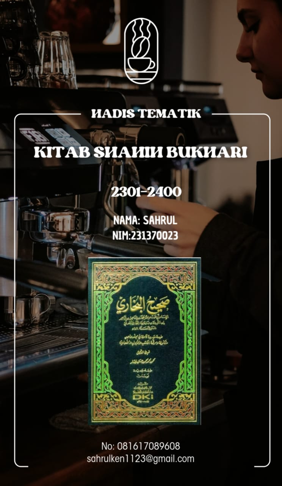

Shahih bukhari 2301-2400
KATA PENGANTAR
Alhamdulillah puja dan puji syukur penulis haturkan ke hadirat allah SWT yang telah memberikan petunjuk dan hidayahnya dan tak lupa sholawat serta salam tercurah baginda besar nabi Muhammad SAW. rasul pemimpin umat pembawa syafaat yang tidak pernah khianat baik di dunia maupun di akhirat.
Di era kecanggihan teknologi seorang muslim dituntut untuk tegas terhadap dirinya dan lingkungannya. Banyak sekali citra buruk yang menggambarkan pergaulan bebas di zaman millenial. Apa yang menjadi pokok permasalahan jika hal semacam ini terjadi, yang harus kita lakukan sebagai seorang muslim millenial adalah menguatkan iman, terus mempelajari dan mengamalkan ilmu sesuai dengan syariat Allah. Selain itu menjadi muslim zaman now harus memiliki komitmen yang kuat agar tidak menyimpang dari ajaran-ajaran Islam. Karena begitu banyak tantangan muslimah seiring dengan perkembangan zaman dan kecanggihan teknologi masa kini, khususnya lingkungan, gaya hidup dan media sosial.
Qiyamulail merupakan salah satu cara yang kuat untuk menguatkan iman seorang muslim. Qiyamul lail adalah salah satu istilah di dalam Agama Islam yang menyebut serangkaian ibadah di malam hari. Secara harafiah, qiyamul lail artinya ibadah malam. Hal ini menerangkan bahwa qiyamul lail merupakan amalan sunnah yang dapat dikerjakan hanya di malam hari.
penulis berharap dan memohon taufik dan hidayah kepada Allah swt, semoga buku ini bermanfaat bagi para mahasiswa yang sederajat,serta para peminat ilmu hadis pada umumnya, amiin
Serang, 01-mei-2024’
SAHRUL
DAFTAR ISI
PERBUATAN-PERBUATAN ZHALIM DAN MERAMPOK 3
A. Bab: Jika memecahkan piring atau sesuatu milik orang lain. 3
1. HR. Shahih Bukhari No.2301 3
B. Bab: Jika menghancurkan bangunan milik orang lain maka harus menggantinya. 3
2. HR. Shahih Bukhari No. 2302 3
ASY-SYIRKAH (PERSERIKATAN USAHA) 4
3. HR. Shahih Bukhari No2303 4
6. HR. Shahih Bukhari No. 2306 6
7. HR. Shahih Bukhari No. 2307 7
8. HR. Shahih Bukhari No. 2308 7
9. HR. Shahih Bukhari No. 2309 8
10. HR.Shahih Bukahri No 2310 8
E. Bab: Menghitung nilai barang milik bersama secara adil. 9
11. HR. Shahih Bukhari No 2311 9
12. HR. Shahih Bukhari No. 2312 9
F. Bab: Apakah dalam pembagian dan pemgambilan hak dapat dilakukan dengan undian? 10
13. HR. Shahih Bukahri No. 2313 10
G. Bab: Akad persekutuan anak yatim dan orang-orang yang mendapatkan warisan. 10
14. HR. Shahih Bukhari No. 2314 10
H. Bab: Persekutuan dalam tanah dan selainnya. 11
15. HR. Shahih Bukhari No.2315 11
I. Bab: Jika orang-orang yang berserikat membagi rumah atau yang selainnya, 12
16. HR. Shahih Bukhari No.2316 12
J. Bab: Berserikat dalam emas dan perak. 12
17. HR. Shahih Bukhari No. 2317 12
K. Bab: Perserikatan orang dzimmi dengan musyrik dalam akad muzara'ah. 13
L. Bab: Pembagian kambing dan berlaku adil. 13
19. HR. Shahih Bukhari No. 2319 13
M. Bab: Berserikat dalam makanan dan selainnya. 14
20. HR. Shahih Bukhari No 2320 14
N. Bab: Berserikat dalam kepemilikan budak dan selainnya. 15
21. HR. Shahih Bukhari No.2321 15
22. HR. Shahih Bukhari No. 2322 15
O. Bab: Berserikat dalam hadyu dan hewan kurban. 15
23. HR.Shahih Bukhari No.2323 15
P. Bab: Menyamakan sepuluh kambing dengan satu unta dalam pembagian. 17
24. HR. Shahih Bukhari No.2324 17
A. Bab: Gadai saat tidak dalam perjalanan. 18
25. HR. Shahih Bukhari No. 2325 18
B. Bab: Menggadaikan baju perang. 18
26. HR. Shahih Bukhari No. 2326 18
C. Bab: Menggadaikan senjata. 19
27. HR. Shahih Bukhari No. 2327 19
D. Bab: Menggadaikan kendaraan tunggangan dan hewan perah. 19
28. HR. Shahih Bukhari No.2328 19
29. HR. Shahih Bukhari No. 2329 20
E. Bab: Gadai bagi orang-orang yahudi dan selainnya. 20
30. HR. Shahih Bukhari No. 2330 20
31. HR. Shahih Bukhari No. 2331 21
32. HR. Shahih Bukhari No. 2332 21
A. Bab: Memerdekakan budak dan keutamaannya. 22
33. HR. Shahih Bukhari No. 2333 22
B. Bab: Budak yang bagaimanakah yang paling utama? 23
34. HR. Shahih Bukhari No. 2334 23
C. Bab: Dianjurkan untuk memerdekakan budak saat gerhana. 23
35. HR. Shahih Bukhari No. 2335 23
36. HR. Shahih Bukhari No. 2336 24
D. Bab: Memerdekakan budak yang dimiliki oleh dua orang. 24
37. HR. Shahih Bukhari No. 2337 24
38. HR. Shahih Bukhari No. 2338 24
39. HR. Shahih Bukhari No. 2339 25
40. HR. Shahih Bukhari No.2340 25
41. HR. Shahih Bukhari No 2341 25
E. Bab: Memerdekakan satu bagian pada diri seorang budak, sedang ia tidak memiliki harta. 26
42. HR. Shahih Bukhari No 2342 26
F. Bab: Salah dan lupa dalam pembebasan budak. 27
43. HR. Shahih Bukhari No. 2343 27
44. HR. Shahih Bukhari No. 2344 27
45. HR.Shahih Bukhari No. 2345 28
46. HR. Shahih Bukhari No. 2346 28
47. HR. Shahih Bukhari No. 2347 29
48. HR. Shahih Bukhari No. 2348 29
I. Bab: Menjual budak mudabbar. 30
49. HR. Shahih Bukhari No. 2349 30
J. Bab: Menjual wala' dan menghibahannya. 30
50. HR. Shahih Bukhari No.2350 30
51. HR. Shahih Bukhari No. 2351 31
52. HR. Shahih Bukhari No. 2352 31
L. Bab: Memerdekakan orang musyrik. 32
53. HR. Shahih Bukhari No. 2353 32
54. HR. Shahih Bukhari No. 2354 32
55. HR. Shahih Bukhari No. 55 33
57. HR. Shahih Bukhari No. 2357 34
N. Bab: Keutamaan mendidik dan mengajar buda perempuannya. 35
58. HR. Shahih Bukhari No. 2358 35
O. Bab: Sabda Nabi Shallallahu 'alaihi wa Sallam 'Budak itu saudara kalian. 35
59. HR. Shahih Bukhari No, 2359 35
P. Bab: Seorang buda jika ia beribadah dengan baik dan patuh kepada tuannya. 36
60. HR. Shahih Bukhari No. 2360 36
61. HR. Shahih Bukhari No. 2361 36
62. HR. ShahiH Bukhari No. 2362 37
63. HR. Shahih Bukhari No, 2363 37
Q. Bab: Larangan memperpanjang perbudakan. 37
64. HR. Shahih Bukhari No. 2364 37
65. HR. Shahih Bukhari No. 2365 38
66. HR. Shahih Bukhari No. 2366 38
67. HR. Shahih Bukhari No. 2367 39
68. HR. Shahih Bukhari No. 2368 39
69. HR. Shahih Bukhari No. 2369 40
R. Bab: Jika budaknya datang dengan membawa makanannya. 40
70. HR. Shhaih Bukhari No. 2370 40
S. Bab: Budak itu pemimpin atas harta tuannya. 40
71. HR. Shahih Bukhari No. 2371 40
T. Bab: Jika memukul budak hendaklah menjauhi wajah. 41
72. HR. Shahih Bukhari No. 2372 41
U. Bab: Persyaratan yang dibolehkan dalam Mukatab. 42
73. HR. Shahih Bukhari No. 2373 42
74. HR. Shahih Bukhari No. 2374 42
V. Bab: Budak mukatab minta bantuan dan meminta-minta kepada orang lain. 43
75. HR. Shahih Bukhari No. 2375 43
W. Bab: Menjual budak mukatab jika rela. 44
76. HR. Shahih Bukhari No. 2376 44
X. Bab: Jika budak mukatab berkata 'Beli dan memerdekakanlah aku, 44
77. HR. Shahih Bukhari No. 2377 44
HIBAH, KEUTAMAANYA DAN ANJURAN MELAKUKANYA 45
78. HR. Shahih Bukhari No. 2378 45
79. HR. Shahih Bukhari No. 2379 46
B. Bab: Menghibahkan barang yang sedikit. 46
80. HR. Shahih Bukhari No. 2380 46
C. Bab: Orang yang minta hibah dari kawannya 47
81. HR. Shahih Bukhari No. 2381 47
83. HR. Shahih Bukhari No. 2383 48
E. Bab: Menerima hadiah dari hasil buruan. 49
84. HR. Shahih Bukhari No. 2384 49
85. HR. Shahih Bukhari No.2385 50
86. HR. Shahih Bukhari No. 2386 50
87. HR. Shahih Bukhari No. 2387 50
88. HR. Shahih Bukhari No 2388 51
89. HR. Shahih Bukhari No. 2389 51
90. HR. Shahih Bukhari No. 2390 52
91. HR. Shahih Bukhari No. 2391 52
G. Bab: Orang yang memberikan hadiah kepada sahabatnya. 53
92. HR. Shahih Bukhari No. 2392 53
93. HR. Shahih Bukhari No. 2393 53
H. Bab: Hadiah yang tidak ditolak. 55
94. HR. Shhaih Bukhari No. 2394 55
I. Bab: Pendapat yang mengatakan "Boleh menghibahkan barang yang tidak ada di tempat". 56
95. HR. Shahih Bukhari No. 2395 56
J. Bab: Imbalan dalam hibah. 56
96. HR. Shahih Bukhari No. 2396 56
97. HR. Shahih Bukhari No. 2397 57
98. HR. Shahih Bukhari No. 2398 57
M. Bab: Hibah suami untuk isteri dan isteri untuk suami. 58
99. HR. Shahih Bukhari No. 2399 58
100. HR. Shahih Bukhari No. 2400 58
BAB 1
PERBUATAN-PERBUATAN ZHALIM DAN MERAMPOK
Bab: Jika memecahkan piring atau sesuatu milik orang lain.
HR. Shahih Bukhari No.2301
حَدَّثَنَا مُسَدَّةٌ حَدَّثَنَا يَحْيَى بْنُ سَعِيدٍ عَنْ حُمَيْدٍ عَنْ أَنَسٍ رَضِيَ اللَّهُ عَنْهُ أَنَّ النَّبِيَّ صَلَّى اللَّهُ عَلَيْهِ وَسَلَّمَ كَانَ عِنْدَ بَعْضِ نِسَا بِهِ فَأَرْ سَلَتْ إِحْدَى أُمَّهَاتِ الْمُؤْمِنِينَ مَعَ خَادِمٍ بِقَصْعَةٍ فِيهَا طَعَامُ فَضَرَبَتْ بِيَدِهَا فَكَسَرَتْ الْقَصْعَةً فَضَمَّهَا وَ جَعَلَ فِيهَا الطَّعَامَ وَقَالَ كُلُوا وَ حَبْسَ الرَّسُولَ وَالْقَصْعَةَ حَتَّى فَرَغُوا فَدَفَعَ الْقَصْعَةَ الصَّحِيحَةَ وَ حَبَسَ الْمَكْسُورَةَ وَقَالَ ابْنُ أَبِي مَرْيَمَ أَخْبَرَنَا يَحْيَى بْنُ أَيُّوبَ حَدَّثَنَا حُمَيْدُ حَدَّثَنَاأَنَّسُ عَنْ النَّبِيِّ صَلَّى اللَّهُ عَلَيْهِ وَسَلَّمَ. (رواه صحيح البخاري ١)
Artinya: Telah menceritakan kepada kami Musaddad telah menceritakan kepada kami Yahya bin Sa'id dari Humaid dari Anas radliallahu 'anhu bahwa ketika Nabi shallallahu 'alaihi wasallam sedang bersama sebagian isteri-isteri Beliau datang salah seorang Ummahatul Mu'minin bersama seorang pembantu membawa nampan besar berisi makanan lalu nampan itu dipukul oleh saorang isteri Beliau tersebut hingga pecah. Maka Beliau membereskan nampan pecah tersebut lalu meletakkan kembali makanan tersebut kedalam nampan kemudian berkata: "Makanlah". Lalu Beliau membiarkan pembantu dan nampan itu hingga mereka selesai makan kemudian datng mengganti nampan dengan nampan yang baru lalu. membawa masuk nampan yang pecah". Dan ibnu Abi Maryam berkata, telah mengabarkan kepada kami Yahya bin Ayyub telah menceritakan kepada kami Humaid telah menceritakan kepada kami Anas dari Nabi shallallahu 'alaihi wasallam. (HR. Shahih Bukhari No.2301).
Bab: Jika menghancurkan bangunan milik orang lain maka harus menggantinya.
HR. Shahih Bukhari No. 2302
حَدَّثَنَا مُسْلِمُ بْنُ إِبْرَاهِيمَ حَدَّثَنَا جَرِيرُ بْنُ حَازِمٍ عَنْ مُحَمَّدِ بْنِ سِيرِ ينَ عَنْ أَبِي هُرَيْرَةَ رَضِيَ اللَّهُ عَنْهُ قَالَ قَالَ رَسُولُ اللَّهِ صَلَّى اللَّهُ عَلَيْهِ وَسَلَّمَ كَانَ رَجُلٌ فِي بَنِي إِسْرَابِيلَ يُقَالُ لَهُ جُرَيْجٌ يُصَلِّي فَجَاءَتْهُ أُمُّهُ فَدَعَتْهُ فَأَبَى أَنْ يُجِيبَهَا فَقَالَ أُجِيبُهَا أَوْ أَصَلِّي ثُمَّ أَتَتْهُ فَقَالَتْ اللَّهُمَّ لَا تُمِنْهُ حَتَّى تُرِيَهُ وُجُوهَ الْمُؤْمِسَاتِ وَكَانَ جُرَيْجٌ فِي صَوْمَعَتِهِ فَقَالَتْ امْرَأَةٌ لَأَفْتِنَنَّ جُرَيْجًا فَتَعَرَّضَتْ لَهُ فَكَلَّمَتْهُ فَأَبَى فَأَتَتْ رَاعِيًا فَأَمْكَنَتُهُمِنْ نَفْسِهَا فَوَلَدَتْ غُلَامًا فَقَالَتْ هُوَ مِنْ جُرَيْجٍ فَأَتَوْهُ وَ كَسَرُ وا صَوْمَعَتَهُ فَأَنْزَلُوهُ وَسَبُّوهُ فَتَوَضَاً وَصَلَّى ثُمَّ أَلَى الْغُلَامَ فَقَالَ مَنْ أَبُوكَ يَا غُلَامُ قَالَ الرَّاعِي قَالُوا نَبْنِي صَوْ مَعَتَكَ مِنْ ذَهَبٍ قَالَ لَا إِلَّا مِنْ طِينٍ. (رواه صحيح البخاري ٢).
Artinya: Telah menceritakan kepada kami Muslim bin Ibrahim telah menceritakan kepada kami Jarir bin HAzim dari Muhammad bin Sirin dari Abu Hurairah radliallahu 'anhu berkata; Rasulullah shallallahu 'alaihi wasallam bersabda: "Ada seorang laki-laki Bani Isra'il, yang dipanggil dengan nama Juraij, sedang melaksanakan shalat lalu ibunya datang memanggilnya, namun laki-laki itu enggan menjawabnya. Dia berkata: "Apakah aku penuhi panggilannya atau aku teruskan shalat?". Akhirnya ibunya itu mendekatinya seraya berkata: "Ya Allah, janganlah Engkau matikan dia kecuali setelah dia memperoleh ujian". Suatu hari Juraij sedang berada di biaranya lalu ada seorang wanita berkata, "Aku akan goda si Juraij".. Lalu wanita ini menawarkan dirinya tapi Juraij menolakmya. Kemudian wanita ini mendatangi seorang pengembala lalu wanita ini tinggal bersamanya hingga melahirkan seorang bayi. Lalu wanita itu berkata: "Ini anaknya Juraij". Maka orang-orang mendatangi Juraij dan menghancurkan biaranya dan memaksanya keluar lalu memaki-makinya. Juraij berwudhu' lalu shalat. Kemudian dia mendatangi bayi lalu bertanya: "Siapakah bapakmu wahai anak?". Bayi itu menjawab: "Seorang pengembala". Orang-orang berkata: "Kar bangun biaramu terbuat dari emas". Juraij berkata: "Tidak, dari tanah saja". (HR. Shahih Bukhari No. 2302).
BAB 2
ASY-SYIRKAH (PERSERIKATAN USAHA)
Bab: Berserikat dalam makanan, An Nahd, barang dagangan dan bagaimana cara pembagian sesuatu yang ditakar atau ditimbang,
HR. Shahih Bukhari No2303
حَدَّثَنَا عَبْدُ اللَّهِ بْنُ يُوسُفَ أَخْبَرَنَا مَالِكَ عَنْ وَهْبِ بْنِ كَيْسَانَ عَنْ جَابِرِ بْنِ عَبْدِ اللَّهِ رَضِيَ اللَّهُ عَنْهُمَا أَنَّهُ قَالَ بَعَثَ رَسُولُ اللَّهِ صَلَّى اللَّهُ عَلَيْهِ وَسَلَّمَ بَعْثًا قِبَلَ السَّاحِلِ فَأَمَرَ عَلَيْهِمْ أَبَا عُبَيْدَةَ بْنَ الْجَزَاحِ وَهُمْ ثَلَاثُ مِائَةٍ وَأَنَا فِيهِمْ فَخَرَجْنَا حَتَّى إِذَا كُنَّا بِبَعْضِ الطَّرِيقِ فَنِي الزَّادُ فَأَمَرَ أَبُو عُبَيْدَةَ بِأَزْوَادِ ذَلِكَ الْجَيْشِ فَجُمِعَ ذَلِكَ كُلُّهُ فَكَانَ مِزْ وَ دَيْ تَمْرٍ فَكَانَ يُقَةِ تُنَا كُلَّ يَوْمٍ قَلِيلًا قَلِيلًا حَتَّى فَنِي فَلَمْ يَكُنْ يُصِيبُنَا إِلَّا تَمْرَةً تَمْرَةً فَقُلْتُ وَمَا تُغْنِي تَمْرَةً فَقَالَ لَقَدْ وَجَدْنَا فَقْدَهَا حِينَ فَنِيَتْ قَالَ ثُمَّ انْتَهَيْنَا إِلَى الْبَحْرِ فَإِذَا حُوتُ مِثْلُ الغَرِبِ فَأَكَلَ مِنْهُ ذَلِكَ الْجَيْسُ ثَمَانِي عَشْرَةَ لَيْلَةٌ ثُمَّ أَمَرَ أَبُو عُبَيْدَةَ بِضِلَعَيْنِ مِنْ أَصْلَاعِهِ فَنُصِبَا ثُمَّ أَمَرَ بِرَاحِلَةٍ فَرُ حِلْتُ ثُمَّ مَرَّتْ تَحْتَهُمَا فَلَمْ تُصِبْهُمَا. (رواه صحيح البخاري ٣).
Artinya: Telah menceritakan kepada kami 'Abdullah bin Yusuf telah mengabarkan kepada kami Malik dari Wahb bin Kaisan dari Jabir bin 'Abdullah radliallahu 'anhuma bahwa dia berkata: Rasulullah shallallahu 'alaihi wasallam mengutus pasukan menuju pantai dengan menunjuk Abu 'Ubaidah sebagai pemimpin mereka yang berjumlah tiga ratus orang dan aku termasuk dalam pasukan itu. Maka kami keluar hingga ketika kami sampai di tengah perjalanan bekal kami habis. Maka Abu Ubaidah memerintahkan agar semua anggota pasukan mengumpulkan bekal yang masih tersisa dan akhirnya terkumpul kurma dalam kantong yang bisa menguatkan kami, setiap hari kami makan sedikit sedikit sampai kurma itu habis dan tidak tersisa kecuali masing-masing kami dapat satu butir satu butir. Aku (Wahbbin Kaisan) bertanya: "Apakah satu butir kurma mencukupi?". Dia (Jabir bin 'Abdullah) berkata: "Kami dapatkan penggantinya ketika sudah habis". Jabir berkata: "Kemudian kami sampai di laut, kami mendapatkan seekor ikan hiu sebesar bukit. Akhirnya pasukan memakan ikan hiu tersebut selama delapan belas malam lalu Abu "Ubaidah memerintahkan untuk mengambil dua tulang rusuk ikan hiu tersebut lalu memerintahkan salah seorang dari pasukan berjalan di bawahnya maka orang itu dapat melaluinya dengan tanpa mengenainya (karena besarnya ikan hiu tersebut). (HR. Shahih Bukhari No2303).
HR. Shahih Bukhari 2304
حَدَّثَنَا بِشْرُ بْنُ مَرْحُومٍ حَدَّثَنَا حَاتِمُ بْنُ إِسْمَاعِيلَ عَنْ يَزِيدَ بْنِ أَبِي عُبَيْدٍ عَنْ سَلَمَةَ رَضِيَ اللَّهُ عَنْهُ قَالَخَفَّتْ أَزْوَادُ الْقَوْمِ وَأَمْلَقُوا فَأَتَوْا النَّبِيَّ صَلَّى اللَّهُ عَلَيْهِ وَسَلَّمَ فِي نَحْرِ إِبِلِهِمْ فَأَذِنَ لَهُمْ فَلَقِيَهُمْ عُمَرُفَأَخْبَرُوهُ فَقَالَ مَا بَقَاؤُكُمْ بَعْدَ إِبِلِكُمْ فَدَخَلَ عَلَى النَّبِيِّ صَلَّى اللَّهُ عَلَيْهِ وَسَلَّمَ فَقَالَ يَا رَسُولَ اللَّهِ مَا بَقَاؤُهُمْ بَعْدَ إِبِلِهِمْ فَقَالَ رَسُولُ اللَّهِ صَلَّى اللَّهُ عَلَيْهِ وَسَلَّمَ نَادِ فِي النَّاسِ فَيَأْتُونَ بِفَضْلِ أَزْوَادِهِمْ فَبُسِطَ لِذَلِكَ يَطْعُ وَ جَعَلُوهُ عَلَى النَّطْعِ فَقَامَ رَسُولُ اللَّهِ صَلَّى اللَّهُ عَلَيْهِ وَسَلَّمَ فَدَعَا وَ بَرَّكَ عَلَيْهِ ثُمَّ دَعَاهُمْ بِأَوْ عِبَتِهِمْفَاحْتَشَى النَّاسُ حَتَّى فَرَعُوا هُمْ قَالَ رَسُولُ اللَّهِ صَلَّى اللَّهُ عَلَيْهِ وَسَلَّمَ أَشْهَدُ أَنْ لَا إِلَهَ إِلَّا اللَّهُ وَأَنِّي رَسُولُ اللَّهِ. (رواه صحيح البخاري ٤).
Artinya: Telah menceritakan Hatim bin Isma’il dari Yazid bin Abu “Ubaid dari Salamah radliallahu ‘anhu berkata: “Perbekalan kaum menipis dan mereka kekurangan air dan makanan, lalu mereka mendatangi Nabi shallallahu ‘alaihi wasallam meminta ijin untuk menyembelih unta mereka, Beliau pun mengijinkannya. Lalu ‘Umar datang menemui mereka dan mereka mengabari hal itu padanya, lalu ia berkata: “Apakah kalian akan dapat hidup setelah unta kalian habis, ia pun menemui Nabi shallallahu ‘alaihi wasallam lalu berkata: “Wahai Rasulullah, apakah mereka dapat bertahan hidup setelah mereka menyembelih unta mereka?”. Maka Rasulullah shallallahu ‘alaihi wasallam bersabda: “Panggillah orang-orang agar mereka membawa sisa-sisa bekal mereka kemari”. Maka dihamparkan lembaran kulit lalu bekal bekal mereka diletakkan diatasnya. Kemudian Rasulullah shallallahu ‘alaihi wasallam berdiri dan berdo’a serta memohon berkah untuknya, lalu Beliau perintahkan mereka membawa bejana mereka masing-masing. Maka orang-orang pun mengambil bagiannya hingga mereka mendapatkan semua, kemudian Rasulullah shallallahu ‘alaihi wasallam bersabda: “Aku bersaksi bahwa tidak ada Ilah yang berhak disembah kecuali Allah dan aku adalah Rasululloh”. (HR. Shahih Bukhari 2304).
HR. Shahih Bukhari 2305
حَدَّثَنَا مُحَمَّدُ بْنُ يُوسُفَ حَدَّثَنَا الْأَوْزَاعِيُّ حَدَّثَنَا أَبُو النَّجَاشِيَ قَالَ سَمِعْتُ رَافِعَ بْنَ خَدِيجٍ رَضِيَ اللَّهُ عَنْهُ قَالَ كُنَّا نُصَلِّي مَعَ النَّبِيِّ صَلَّى اللَّهُ عَلَيْهِ وَسَلَّمَ الْعَصْرَ فَتَنْحَرُ جَزُورًا فَتُقْسَمُ عَشْرَ قِسَمٍ فَتَأْكُلُ لَحْمًانَضِيجًا قَبْلَ أَنْ تَغْرُبَ الشَّمْسُ. (رواه صحيح البخاري ٥).
Artinya: Telah menceritakan kepada kami Muhammad boin Yusuf telah menceritakan kepada kami Al Awza'ly telah menceritakan kepada kami Abu An-Najasyiy berkata, aku mendengar Rafi bin Khadij radliallahu 'anhu berkata: "Kami shalat 'Ashar bersama Nabi shallallahu 'alaihi wasallam lalu kami menyembelih seekor hewan sembelihan lalu dibagi menjadi sepuluh bagian kemudian kami makan daging yang dimasak sebelum terbenam matahari". (HR. Shahih Bukhari 2305).
HR. Shahih Bukhari No. 2306
حَدَّثَنَا مُحَمَّدُ بْنُ الْعَلَاءِ حَدَّثَنَا حَمَّادُ بْنُ أَسَامَةً عَنْ بُرَيْدٍ عَنْ أَبِي بُرْدَةً عَنْ أَبِي مُوسَى قَالَ قَالَ النَّبِيُّ صَلَّى اللَّهُ عَلَيْهِ وَسَلَّمَ إِنَّ الْأَشْعَرِنِينَ إِذَا أَرْ مَلُوا فِي الْغَزْوِ أَوْ قَلَّ طَعَامُ عِبَالِهِمْ بِالْمَدِينَةِ جَمَعُوا مَا كَانَ عِنْدَهُمْ فِيثَوْبِ وَاحِدٍ ثُمَّ اقْتَسَمُوهُ بَيْنَهُمْ فِي إِنَاءٍ وَاحِدٍ بِالسَّوِيَّةِ فَهُمْ مِنِّي وَأَنَا مِنْهُمْ. (رواه صحيح البخاري ٦).
Artinya: Telah menceritakan kepada kami Muhammad bin Al 'Alaa' telah menceritakan kepada kami Hammad bin Usamah dari Buraid dari Abu Burdah dari Abu Musa berkata, Nabi shallallahu 'alaihi wasallam bersabda: "Sesungguhnya orang-orang Asya'ariy jika mereka berperang atau harta kebutuhan keluarga mereka di Madinah menipis maka mereka mengumpulkan apa saja milik mereka pada satu kain lalu mereka membagi rata diantara mereka pada tiap masing-masing, maka mereka adalah bagian dariku dan aku adalah bagian dari mereka". (HR. Shahih Bukhari No. 2306).
Bab: Hasil yang diperoleh dari harta yang dicampur, maka keduanya dapat berserikat dalam mengeluarkan zakatnya.
HR. Shahih Bukhari No. 2307
حَدَّثَنَا مُحَمَّدُ بْنُ عَبْدِ اللَّهِ بْنِ الْمُثَنَّى قَالَ حَدَّثَنِي أَبِي قَالَ حَدَّثَنِي ثُمَامَةُ بْنُ عَبْدِ اللَّهِ بْنِ أَنَسٍ أَنَّ أَنَّسًا حَدَّثَهُ أَنَّ أَبَا بَكْرٍ رَضِيَ اللَّهُ عَنْهُ كَتَبَ لَهُ فَرِيضَةَ الصَّدَقَةِ الَّتِي فَرَضَ رَسُولُ اللَّهِ صَلَّى اللَّهُ عَلَيْهِ وَسَلَّمَ قَالَ وَمَا كَانَ مِنْ خَلِيطَيْنِ فَإِنَّهُمَا يَتَرَاجَعَانِ بَيْنَهُمَا بِالسَّوِيَّةِ. (رواه صحيح البخاري ٧ ).
Artinya: Telah menceritakan kepada kami Muhammad bin 'Abdullah bin Al Mutsannaa berkata, telah menceritakan kepadaku bapakku berkata, telah menceritakan kepadaku Tsumamah bin 'Abdullah bin Anas bahwa Anas menceritakan kepadanya bahwa Abu Bakar radliallahu 'anhu menetapkan kewajiban shadaqah kepadanya sebagaimana Rasulullah shallallahu 'alaihi wasallam telah mewajibkannya. Dia berkata: "Dan dua orang yang telah bercampur (hewan ternak keduanya) hendaklah keduanya berdamai dengan menanggung beban yang sama". (HR. Shahih Bukhari No. 2307).
Bab: Pembagian kambing.
HR. Shahih Bukhari No. 2308
حَدَّثَنَا عَلِيُّ بْنُ الْحَكَمِ الْأَنْصَارِيُّ حَدَّثَنَا أَبُو عَوَانَةَ عَنْ سَعِيدِ بْنِ مَسْرُوقٍ عَنْ عَبَايَةَ بْنِ رِفَاعَةَ بْنِ رَافِعِ بْنِ خَدِيجٍ عَنْ جَدِهِ قَالَ كُنَّا مَعَ النَّبِيِّ صَلَّى اللَّهُ عَلَيْهِ وَسَلَّمَ بِذِي الْحُلَيْفَةِ فَأَصَابَ النَّاسَ جُوعٌفَأَصَابُوا إِبِلًا وَغَنَمًا قَالَ وَكَانَ النَّبِيُّ صَلَّى اللَّهُ عَلَيْهِ وَسَلَّمَ فِي أُخْرَيَاتِ الْقَوْمِ فَعَجِلُوا وَ ذَبَحُواوَنَصَبُوا الْقُدُورَ فَأَمَرَ النَّبِيُّ صَلَّى اللَّهُ عَلَيْهِ وَسَلَّمَ بِالْقُدُورِ فَأُكْفِنَتْ ثُمَّ قَسَمَ فَعَدَلَ عَشَرَةٌ مِنَ الْغَنَمِبِبَعِيرٍ فَنَدَّ مِنْهَا بَعِي فَطَلَبُوهُ فَأَعْيَاهُمْ وَكَانَ فِي الْقَوْمِ خَيْلٌ يَسِيرَةً فَأَهْوَى رَجُلٌ مِنْهُمْ بِسَهْمٍ فَحَبَسَهُ اللَّهُ هُمَّ قَالَ إِنَّ لِهَذِهِ الْبَهَا بِمِ أَوَابِدَ كَأَوَابِدِ الْوَحْشِ فَمَا غَلَبَكُمْ مِنْهَا فَاصْنَعُوا بِهِ هَكَذَا فَقَالَ جَدِي إِنَّا نَرْجُوأَوْ نَخَافُ الْعَدُوَّ غَدًا وَلَيْسَتْ مَعَنَا مُدًى أَفَتَذْبَحُ بِالْقَصَبِ قَالَ مَا أَنْهَرَ الدَّمَ وَذُكِرَ اسْمُ اللَّهِ عَلَيْهِ فَكُلُوهُلَيْسَ السِّنَّ وَالظُّفُرَ وَسَأَحَدَتُكُمْ عَنْ ذَلِكَ أَمَّا السِّنُ فَعَظْمُ وَأَمَّا الظُّفُرُ فَمُدَى الْحَبَشَةِ. (رواه صحيح البخاري ٨) .
Artinya: Telah menceritakan kepada kami 'Ali bin Al Hakam Al Anshariy telah menceritakan kepada kami Abu 'Awanah dari Sa'id bin Masruq dari 'Abayah bin Rifa'ah bin Rafi' bin Khadij dari kakeknya berkata: "Kami bersama Nabi shallallahu 'alaihi wasallam di Dzul Hulaifah ketika sebagian orang terserang lapar lalu mereka mendapatkan (harta rampasan perang berupa) unta dan kambing. Saat itu Nabi shallallahu 'alaihi wasallam berada di belakang bersama rombongan yang lain. Orang-orang yang lapar itu segera saja menyembelih lalu mendapatkan daging sebanyak satu kuali. Maka Nabi shallallahu 'alaihi wasallam memerintahkan agar kuali tersebut ditumpahkan isinya. Kemudian Beliau membagi rata dimana bagian setiap sepuluh kambing sama dengan satu ekor unta. Namun ada seekor unta yang lari lalu mereka mencarinya hingga kelelahan. Sementara itu diantara mereka ada yang memiliki seekor kuda yang lincah lalu ia mencari unta tadi dan memburunya dengan panah hingga akhirnya Allah menakdirkannya dapat membunuh unta tersebut. Beliau bersabda: "Sesungguhnya bintang seperti ini hukumnya sama dengan binatang liar. Maka apa saja yang kabur dari kalian (lalu didapatkannya,) perlakuklanlah seperti ini". Kakekku berkata: "Kita berharap atau khawatir bertemu musuh esok hari sedangkan kita tidak punya pisau, apakah kita boleh menyembelih dengan kayu?". Beliau berkata: "Setiap yang ditumpahkan darahnya dengan disebut nama Allah maka makanlah kecuali gigi dan kukunya, dan aku akan sampaikan tentang itu. Adapun gigi dia termasuk tulang sedangkan kuku merupakan pisaunya orang-orang Habsasyah". (HR. Shahih Bukhari No. 2308).
Bab: Makan kurma dua biji-dua biji sekaligus di antara orang-orang yang iut berseriat, kecuali dengan seizin mereka.
HR. Shahih Bukhari No. 2309
حَدَّثَنَا خَلَّادُ بْنُ يَحْيَى حَدَّثَنَا سُفْيَانُ حَدَّثَنَا جَبَلَةُ بْنُ سُحَيْمٍ قَالَ سَمِعْتُ ابْنَ عُمَرَ رَضِيَ اللَّهُ عَنْهُمَا يَقُولُنَهَى النَّبِيُّ صَلَّى اللَّهُ عَلَيْهِ وَسَلَّمَ أَنْ يَقْرُنَ الرَّجُلُ بَيْنَ النَّمْرَتَيْنِ جَمِيعًا حَتَّى يَسْتَأْذِنَ أَصْحَابَهُ. (رواه صحيح البخاري ٩) .
Artinya: Telah menceritakan kepada kami Khallad bin Yahya telah menceritakan kepada kami Sufyan telah menceritakan kepada kami Jabalah bin Suhaim berkata, aku mendengar Ibnu "Umar radliallahu 'anhuma berkata: "Rasulullah shallallahu 'alaihi wasallam melarang seseorang memakan dua butir kurma sekaligus sebelum dia meminta izin sahabat- sahabatnya (yang sedang makan bersama)". (HR. Shahih Bukhari No. 2309).
HR.Shahih Bukahri No 2310
حَدَّثَنَا أَبُو الْوَلِيدِ حَدَّثَنَا شُعْبَةُ عَنْ جَبَلَةَ قَالَ كُنَّا بِالْمَدِينَةِ فَأَصَابَتْنَا سَنَةٌ فَكَانَ ابْنُ الزُّبَيْرِ يَرْزُقُنَا النَّمْرَ وَ كَانَ ابْنُ عُمَرَ يَمُرُّ بِنَا فَيَقُولُ لَا تَقْرُنُوا فَإِنَّ النَّبِيَّ صَلَّى اللَّهُ عَلَيْهِ وَسَلَّمَ نَهَى عَنْ الْإِفْرَانِ إِلَّا أَنْيَسْتَأْذِنَ الرَّجُلُ مِنْكُمْ أَخَاهُ. (رواه صحيح البخاري ١٠).
Artinya: Telah menceritakan kepada kami Abu Al Walid telah menceritakan kepada kami Syu'bah dari Jabalah berkata; Ketika di Madinah saat kami tertimpa paceklik, Ibnu Az Zubair adalah orang yang memberi makan kami. Suatu saat Ibnu 'Umar lewat di hadapan kami, maka dia berkata: "Janganlah kalian makan dua butir secara sekaligus, karena Nabi shallallahu 'alaihi wasallam telah melarang memakan dua butir kurma sekaligus kecuali bila. seorang dari kalian meminta izin saudaranya terlebih dahulu". (HR.Shahih Bukahri No 2310).
Bab: Menghitung nilai barang milik bersama secara adil.
HR. Shahih Bukhari No 2311
حَدَّثَنَا عِمْرَانُ بْنُ مَيْسَرَةَ حَدَّثَنَا عَبْدُ الْوَارِثِ حَدَّثَنَا أَيُّوبُ عَنْ نَافِعٍ عَنْ ابْنِ عُمَرَ رَضِيَ اللَّهُ عَنْهُمَا قَالَ قَالَ رَسُولُ اللَّهِ صَلَّى اللَّهُ عَلَيْهِ وَسَلَّمَ مَنْ أَعْتَقَ شِقْصًا لَهُ مِنْ عَبْدٍ أَوْ شِرْ كًا أَوْ قَالَ نَصِيبًا وَ كَانَ لَهُ مَا يَبْلُغُ ثَمَنَهُ بِقِيمَةِ الْعَدْلِ فَهُوَ عَتِيقٌ وَ إِلَّا فَقَدْ عَتَقَ مِنْهُ مَا عَتَقَ قَالَ لَا أَدْرِي قَوْلُهُ عَتَقَ مِنْهُ مَا عَتَقَ قَوْلُ مِنْ نافع أَوْ فِي الْحَدِيثِ عَنْ النَّبِيِّ صَلَّى اللَّهُ عَلَيْهِ وَسَلَّمَ. (رواه صحيح البخاري ١١).
Artinya: Telah menceritakan kepada kami 'Imran bin Maisarah telah menceritakan kepada kami 'Abdul Warits telah menceritakan kepada kami Ayyub dari Nafi' dari Ibnu 'Umar radliallahu 'anhuma berkata, Rasulullah shallallahu 'alaihi wasallam bersabda: "Siapa yang membebaskan jatah kepemilikan, atau bagian kepemilikan dari budaknya" atau Beliau bersabda dengan redaksi hak kepemilikan', lantas ia mempunyai harta yang bisa membebaskan budak itu secara penuh sesuai harga yang rata-rata, maka budak itu menjadi merdeka". (Ayyub) berkata: "Aku tidak tahu apakah ucapan itu dari Nafi atau termasuk hadits yang disabdakan Nabi shallallahu 'alaihi wasallam ". (HR. Shahih Bukhari No 2311).
HR. Shahih Bukhari No. 2312
عَنْ قَتَادَةَ عَنْ النَّضْرِ بْنِ أَنَسٍ عَنْ حَدَّثَنَا بِشْرُ بْنُ مُحَمَّدٍ أَخْبَرَنَا عَبْدُ اللَّهِ أَخْبَرَنَا سَعِيدُ بْنُ أَبشِيرِ بْنِ نَبِيكٍ عَنْ أَبِي هُرَيْرَةَ رَضِيَ اللَّهُ عَنْهُ عَنْ النَّبِيِّ صَلَّى اللَّهُ عَلَيْهِ وَسَلَّمَ قَالَ مَنْ أَعْتَقَ شَقِيصًا مِنْمَالُ قُومَ الْمَمْلُوكُ قِيمَةً عَدْلٍ ثُمَّ اسْتُسْمِيَ غَيْرَ مَشْقُوقٍ مَمْلُوكِهِ فَعَلَيْهِ خَلَا صُهُ فِي مَالِهِ فَا عَلَيْهِ. (رواه صحيح البخاري ١٢) .
Artinya: Telah menceritakan kepada kami Bisyir bin Muhammad telah mengabarkan kepada kami 'Abdullah telah mengabarkan kepada kami Sa'id bin Abi 'Urwah dari Qatadah dari An- Nadhar bin Anas dari Basyir bin Nahik dari Abu Hurairah radliallahu 'anhu dari Nabi shallallahu 'alaihi wasallam bersabda: "Siapa yang membebaskan hak kepemilikan budaknya, maka dia masih berkewajiban membebaskan budak tersebut secara penuh. Bila dia tidak memiliki harta, maka budak itu ditaksir harganya secara normal, lantas budak diusahakan untuk dibebaskan secara penuh dengan tanpa membebani dia saja. (HR. Shahih Bukhari No. 2312).
Bab: Apakah dalam pembagian dan pemgambilan hak dapat dilakukan dengan undian?
HR. Shahih Bukahri No. 2313
حَدَّثَنَا أَبُو نُعَيْمٍ حَدَّثَنَا زَكَرِيَّاءُ قَالَ سَمِعْتُ عَامِرًا يَقُولُ سَمِعْتُ النُّعْمَانَ بْنَ بَشِيرٍ رَضِيَ اللَّهُ عَنْهُمَا عَنْ النَّبِيِّ صَلَّى اللَّهُ عَلَيْهِ وَسَلَّمَ قَالَ مَثَلُ الْقَابِمِ عَلَى حُدُودِ اللَّهِ وَ الْوَاقِعِ فِيهَا كَمَثَلِ قَوْمِ اسْتَهَمُوا عَلَى سَفِينَةٍ فَأَصَابَ بَعْضُهُمْ أَعْلَاهَا وَ بَعْضُهُمْ أَسْفَلَهَا فَكَانَ الَّذِينَ فِي أَسْفَلِهَا إِذَا اسْتَقَوْا مِنْ الْمَاءِ مَرُّوا عَلَى مَنْ فَوْقَهُمْ فَقَالُوا لَوْ أَنَّا خَرَقْنَا فِي نَصِيبِنَا خَرْقًا وَلَمْ تُؤْذِ مَنْ فَوْقَنَا فَإِنْ يَتْرُكُوهُمْ وَمَا أَرَادُوا هَلَكُوا جَمِيعًا وَإِنْأَخَذُوا عَلَى أَيْدِيهِمْ نَجَوْا وَ نَجَوْا جَمِيعًا. (رواه صحيح البخاري ١٣) .
Artinya: Telah menceritakan kepada kami Abu Nu'aim telah menceritakan kepada kami Zakariyya berkata, aku mendengar 'Amir berkata, aku mendengar An-Nu'man bin Basyir radliallahu 'anhuma dari Nabi shallallahu 'alaihi wasallam bersabda: "Perumpamaan orang yang menegakkan hukum Allah dan orang yang diam terhadapnya seperti sekelompok orang yang berlayar dengan sebuah kapal lalu sebagian dari mereka ada yang mendapat tempat di atas dan sebagian lagi di bagian bawah perahu. Lalu orang yang berada di bawah perahu bila mereka mencari air untuk minum mereka harus melewati orang-orang yang berada di bagian atas seraya berkata: "Seandainya boleh kami lubangi saja perahu ini untuk mendapatkan bagian kami sehingga kami tidak mengganggu orang yang berada di atas kami". Bila orang yang berada di atas membiarkan saja apa yang diinginkan orang-orang yang di bawah itu maka mereka akan binasa semuanya. Namun bila mereka mencegah dengan tangan mereka maka mereka akan selamat semuanya". (HR. Shahih Bukahri No. 2313).
Bab: Akad persekutuan anak yatim dan orang-orang yang mendapatkan warisan.
HR. Shahih Bukhari No. 2314
حَدَّثَنَا عَبْدُ الْعَزِيزِ بْنُ عَبْدِ اللَّهِ الْعَامِرِيُّ الْأُوَيْسِيُّ حَدَّثَنَا إِبْرَاهِيمُ بْنُ سَعْدٍ عَنْ صَالِحٍ عَنْ ابْنِ شِهَابٍ أَخْبَرَنِي عُرْوَةُ أَنَّهُ سَأَلَ عَائِشَةَ رَضِيَ اللَّهُ عَنْهَا وَقَالَ اللَّيْثُ حَدَّثَنِي يُونُسُ عَنْ ابْنِ شِهَابٍ قَالَ أَخْبَرَنِي عُرْوَةُ بْنُ الزُّبَيْرِ أَنَّهُ سَأَلَ عَائِشَةَ رَضِيَ اللَّهُ عَنْهَا عَنْ قَوْلِ اللَّهِ تَعَالَى وَإِنْ خِفْتُمْ أَنْ لَا تُقْسِطُوا إِلَى وَرُبَاعَ فَقَالَتْ يَا ابْنَ أُخْتِي هِيَ الْيَتِيمَةُ تَكُونُ فِي حَجْرٍ وَلِيْهَا تُشَارِ كُهُ فِي مَالِهِ فَيُعْجِبُهُ مَا لهَا وَ جَمَالُهَافَيُرِ يدُ وَلِتُهَا أَنْ يَتَرَوْجَهَا بِغَيْرِ أَنْ يُقْسِطُ فِي صَدَاقِهَا فَيُعْطِيهَا مِثْلَ مَا يُعْطِيهَا غَيْرُهُ فَنُهُوا أَنْ يُنْكِحُوهُنَّ إِلَّا أَنْ يُقْسِطُوا لَهُنَّ وَ يَبْلُغُوا بِهِنَّ أَعْلَى سُنَتِهِنَّ مِنَ الصَّدَاقِ وَأُمِرُوا أَنْ يَنْكِحُوا مَا طَابَ لَهُمْ مِنَ النِّسَاءِ سِوَاهُنَّ قَالَ عُرْوَةُ قَالَتْ عَابِشَةٌ هُمْ إِنَّ النَّاسَ اسْتَفْتَوْا رَسُولَ اللَّهِ صَلَّى اللَّهُ عَلَيْهِ وَسَلَّمَ بَعْدَ هَذِهِ الَّا يَةٍ فَأَنْزَلَ اللَّهُ وَيَسْتَفْتُونَكَ فِي النِّسَاءِ إِلَى قَوْلِهِ وَتَرْغَبُونَ أَنْ تَنْكِحُوهُنَّ وَالَّذِي ذَكَرَ اللَّهُ أَنَّهُيُتْلَى عَلَيْكُمْ فِي الْكِتَابِ الْآيَةُ الْأُولَى الَّتِي قَالَ فِيهَا ، وَإِنْ خِفْتُمْ أَنْ لَا تُقْسِطُوا فِي الْيَتَامَى فَانْكِحُوا مَا طَابَ لَكُمْ مِنَ النِّسَاءِ قَالَتْ عَائِشَةُ وَ قَوْلُ اللَّهِ فِي الْآيَةِ الْأُخْرَى وَتَرْغَبُونَ أَنْ تَنْكِحُوهُنَّ يَعْنِي هِيَ رَغْبَةُ أَحَدِكُمْ لِيَتِيمَتِهِ الَّتِي تَكُونُ فِي حَجْرِهِ حِينَ تَكُونُ قَلِيلَةَ الْمَالِ وَالْجَمَالِ فَنُهُوا أَنْ يَنْكِحُوا مَا رَ غِبُوا فِي مَالِهَا وَ جَمَالِهَا مِنْ يَتَامَى النِّسَاءِ إِلَّا بِالْقِسْطِ مِنْ أَجْلِ رَغْبَتِهِمْ عَنْهُنَّ. (رواه صحيح البخاري ١٤) .
Artinya: Telah menceritakan kepada kami 'Abdul 'Aziz bin 'Abdullah Al 'Amiriy Al Uwaisiy telah menceritakan kepada kami Ibrahim bin Sa'ad dari Shalih dari Ibnu Syihab telah menceritakan kepadaku 'Urwah bahwa dia bertanya kepada 'Aisyah radliallahu 'anha. Dan Al Laits berkata, telah menceritakan kepadaku Yunus dari Ibnu Syihab be telah menceritakan kapadaku 'Urwah bin Az Zubair bahwa dia bertanya kepada 'Aisyah radliallahu 'anha tentang firman Allah yang artinya: ("Jika kamu khawatir tidak dapat berlaku adil... seterusnya hingga ...empat-empat". (QS. An-Nisaa ayat 3), maka ia menjawab: "Wahai anak saudariku, yang dimaksud ayat itu adalah seorang anak perempuan yatim yang berada pada asuhan walinya, hartanya ada pada walinya, dan walinya ingin memiliki harta itu dan menikahinya namun ia tidak bisa berbuat adil dalam memberikan maharnya, yaitu memberi seperti ia memberikan untuk yang lainnya, maka mereka dilarang untuk menikahinya kecuali jika mereka bisa berbuat adil pada mereka, dan mereka memberikan mahar terbaik kepadanya, mereka diperintahkan untuk menikahi wanita-wanita yang baik untuk mereka selain anak-anak yatim itu". 'Urwah berkata, lalu 'Aisyah berkata, kemudian orang-orang meminta fatwa kepada Rasulullah shallallahu 'alaihi wasallam setelah turunnya ayat ini, wayastaftuunaka finnisaa (dan mereka meminta fatwa kepadamu tentang para wanita) hingga firmanNya; watarghobuuna antankihuuhunna (dan kalian ingin menikahi mereka) dan yang disebutkan Allah pada firmanNya bahwa, yutla 'alaikum fil kitab (telah disebutkan untuk kalian di dalam Al Quran) ayat pertama yang Allah berfirman didalamnya ada kalimat; wa in khiftum allaa tuqsituu fil yataamaa fankihuu maa thaoba lakum minan nisaa' (jika kalian tidak bisa berbuat adil kepada anak-anak yatim, maka nikahilah wanita-wanita yang baik untuk kalian), 'Aisyah berkata, dan firman Allah pada ayat yang lain; watarghobuuna an tankihuuhunna (dan kalian ingin untuk menikahi mereka) yaitu keinginan kalian untuk menikahi anak perempuan yatim yang kalian asuh ketika ia sedikit hartanya dan kurang menarik wajahya, maka mereka dilarang untuk menikahi mereka karena semata hartanya dan kecantikannya dari anak-anak perempuan yatim kecuali dengan adil disebabkan ketidak tertarikan mereka kepada perempuan yatim itu". (HR. Shahih Bukhari No. 2314).
Bab: Persekutuan dalam tanah dan selainnya.
HR. Shahih Bukhari No.2315
حَدَّثَنَا عَبْدُ اللَّهِ بْنُ مُحَمَّدٍ حَدَّثَنَا هِشَامُ أَخْبَرَنَا مَعْمَرُ عَنْ الزُّهْرِي عَنْ أَبِي سَلَمَةَ عَنْ جَابِرِ بْنِ عَبْدِ اللَّهِ رَضِيَ اللَّهُ عَنْهُمَا قَالَ إِنَّمَا جَعَلَ النَّبِيُّ صَلَّى اللَّهُ عَلَيْهِ وَسَلَّمَ الشُّفْعَةَ فِي كُلِّ مَا لَمْ يُقْسَمْ فَإِذَا وَقَعَتْالْحُدُودُ وَ صُرِفَتْ الطَّرْقُ فَلَا شُفْعَةً. (رواه صحيح البخاري ١٥).
Artinya: Telah menceritakan kepada saya 'Abdullah bin Muhammad telah menceritakan kepada kami Hisyam telah mengabarkan kepada kami Ma'mar dari Az Zuhriy dari Abu Salamah dari Jabir bin 'Abdullah radliallahu 'anhuma berkata; Nabi shallallahu 'alaihi wasallam telah menetapkan Asy-Syuf'ah pada setiap tanah yang belum dibagi. Apabila sudah terdapat batasan-batasan dan jalan yang terpisah maka tidak ada syuf'ah lagi". (HR. Shahih Bukhari No.2315).
Bab: Jika orang-orang yang berserikat membagi rumah atau yang selainnya,
HR. Shahih Bukhari No.2316
حَدَّثَنَا مُسَدَّةٌ حَدَّثَنَا عَبْدُ الْوَاحِدِ حَدَّثَنَا مَعْمَرُ عَنْ الزُّهْرِي عَنْ أَبِي سَلَمَةَ عَنْ جَابِرِ بْنِ عَبْدِ اللَّهِ رَضِيَ اللَّهُ عَنْهُمَا قَالَ قَضَى النَّبِيُّ صَلَّى اللهُ عَلَيْهِ وَسَلَّمَ بِالشَّفْعَةِ فِي كُلِّ مَا لَمْ يُقْسَمْ فَإِذَا وَقَعَتْ الْحُدُودُوَصُرِفَتْ الطَّرْقُ فَلَا شُفْعَةً. (رواه صحيح البخاري ١٦).
Artinya: Telah menceritakan kepada saya Musaddad telah menceritakan kepada kami 'Abdul Wahid telah menceritakan kepada kami Ma'mar dari Az Zuhriy dari Abu Salamah dari Jabir bin 'Abdullah radliallahu 'anhuma; Nabi shallallahu 'alaihi wasallam telah menetapkan Asy-Syuf'ah pada setiap tanah yang belum dibagi. Apabila sudah terdapat batasan-batasan dan jalan yang terpisah maka tidak ada syufah lagi". (HR. Shahih Bukhari No.2316).
J. Bab: Berserikat dalam emas dan perak.
17. HR. Shahih Bukhari No. 2317
حَدَّثَنَا عَمْرُو بْن عَلَى حَدَّثَنَا أَبُو عَاصِمٍ عَنْ عُثْمَانَ يَعْنِي ابْنَ الْأَسْوَدِ قَالَ أَخْمَرَنِي سُلَيْمَانُ بْنَ أَبِي مُسْلِمٍ قَالَ سَأَلْتُ أَبَا الْمِنْهَالِ عَنِ الصَّرْفِ بَدًا بِيَدٍ فَقَالَ اشْتَرَيْتُ أَنَا وَ شَرِيكَ لِي شَيْئًا يَدًا بِيَدٍ وَ نَسِينَةٌ فَجَاءَنَا الْمَرَادُ بْنُ عَازِبٍ فَسَأَلْنَاهُ فَقَالَ فَمَلْتُ أَنَا وَ شَرِيكِي زَيْدُ بْنُ أَرْقَمَ وَسَأَلْنَا النَّبِيُّ صَلَّى اللَّهُ عَلَيْهِ وسَلَّمَ عَنْ ذَلِكَ فَقَالَ مَا كَانَ بَنَّا بِيَدٍ فَخُذُوهُ وَمَا كَانَ نَسِيتَةً فَذَرُوهُ. (رواه صحيح البخاري ١٧). .
Artinya: Telah menceritakan kepada kami 'Amru bin 'Ali telah menceritakan kepada kami Abu Ashim dari Utsman, yakni Ibnu Al Aswad berkata, telah menceritakan kepadaku Sulaiman bin Abi Muslim berkata, aku bertanya kepada Al Minhal tentang tentang pertukaran uang secara langsung. Maka dia berkata: "Dahulu aku dan temanku membeli sesuatu secara langsung dan dengan tempo lalu datang kepada kami Al Bara' bin 'Azib lalu kami tanyakan kepadanya tentang masalah itu maka dia berkata: "Dulu aku dan temanku Zaid bin Arqam pernah menanyakan hal itu kepada Nabi shallallahu 'alaihi wasallam maka Beliau bersabda: "Jika transaksi langsung diatas tangan (pembayaran secara cash, kontan) ambillah, namun bila tunda (tempo) maka tinggalkanlah". (HR. Shahih Bukhari No. 2317).
Bab: Perserikatan orang dzimmi dengan musyrik dalam akad muzara'ah.
HR. Shahih Bukhari No. 2318
حَدَّثَنَا مُوسَى بْن اسْمَاعِيلَ حَدَّثَنَا جُوَيْرِيَةً مِنْ أَسْمَاءَ عَنْ نَافِعٍ عَنْ عَبْدِ اللَّهِ رَضِيَ اللَّهُ عَنْهُ قَالَ أَعْطَى رَسُولُ اللَّهِ صَلَّى اللهُ عَلَيْهِ وَسَلَّمَ خَيْرَ الْيَهُودَ أَنْ يَعْمَلُوهَا وَ يَزْرَعُوهَا وَلَهُمْ نَطْرُ مَا يَخْرُجُ مِنْهَا. (رواه صحيح البخاري ١٩).
Artinya: Telah menceritakan kepada kami Musa bin lumall telah menceritakan kepada kami Juwairiyah bin Asma dari Nafi dari Abdullah radilallahu 'anhu berkata, Rasulullah shallallahu 'alaihi wasallam memberikan tanah Khaibar kepada orang Yahudi agar dimanfaatkan dan dijadikan ladang pertanian dan mereka mendapat bagian dari separuh hasilnya. (HR. Shahih Bukhari No. 2318).
Bab: Pembagian kambing dan berlaku adil.
HR. Shahih Bukhari No. 2319
حَدَّثَنَا قُتَيْبَةُ بْن سَعِيدٍ حَدَّثَنَا اللَّيْثُ عَنْ يَرِيدَيْنِ أَبي حَبِيبٍ عَنْ أَبِي الْخَمِ عَنْ عُقْبَةَ بْنِ عَامِرٍ رَضِيَ الله عَنْهُ أَن رَسُولَ اللهِ صَلَّى اللهُ عَلَيْهِ وَسَلَّمَ أَعْطَاهُ عَلَمَّا يَقْسِمُهَا عَلَى صَحَابَتِهِ فَحَابًا فَبَقِي عَنُوالذكر الرسول الله صلى اللهُ عَلَيْهِ وَ سَلَّمَ فَقَالَ صبح به أنت. (رواه صحيح البخاري ١٩).
Artinya: Telah menceritakan kepada kami Qutaibah bin Sa'id telah menceritakan kepada kami Al Laits dari Yazid bin Abi Habib dari Abu Al Khair dari 'Uqbah bin 'Amir radliallahu anhu bahwa Rasulullah shallallahu alaihi wasallam memberikan kepadanya seekor kambing yang Beliau bagikan untuk para sahabat Beliau sebagai hewan qurban dan tersisa anak kambing yang sudah bisa berdiri sendiri. Kemudian diceritakan hal itu kepada Nabi shallallahu 'alaihi wasallam maka Beliau bersabda: "Ambillah buatmu. (HR. Shahih Bukhari No. 2319).
Bab: Berserikat dalam makanan dan selainnya.
HR. Shahih Bukhari No 2320
حدَانَا أَصْبَعُ بن الفرج قَالَ أَحْمَرَنِي عَبْدُ اللهِ بْنُ وَهْبٍ قَالَ الحمَرَنِي سَمِيدٌ عَنْ زُهْرَةَ بْنِ مَعْبَدٍ عَنْ جَدِهِ عبد الله بن هشام و كان قد اترك النَّبِيِّ صَلَّى اللهُ عَلَيْهِ وَسَلَّمَ وَنَعْبَتْ بِهِ أُمُّهُ زَيْنَبُ بِنْتُ حُمَيْدٍ إِلَى رَسُولِ اللَّهِ صَلَّى اللَّهُ عَلَيْهِ وَ سَلَّمَ فَقَالَتْ يَا رَسُولَ اللَّهِ يَا بِمُهُ فَقَالَ هُوَ صَبِيرٌ فَمَسَحَ رَأْسَهُ وَ دَعَالَهُ وَ عَنْ زهْرَةً فِي مَعْبَدٍ أَنَّهُ كَانَ يَخْرُجُ بِهِ حَدَهُ عَبْدُ اللَّهِ مِنْ هِشَامٍ إِلَى السُّوقِ فَيَشْتَرِي الطَّعَامَ فَيَلْقَاءَ ابْنُ عُمَرَوَابْنُ الزُّبَيْرِ رَضِيَ اللَّهُ عَنْهُمَا فَيَقُولَانِ لَهُ أَمْرِ كُنَا فَإِنَّ النَّبِيُّ صَلَّى اللَّهُ عَلَيْهِ وَسَلَّمْ قَدْدَ مَا لَكَ بِالْمَرَكَةِفَيَشْرَكُمْ فَرُبَّمَا أَصَابَ الرَّاحِلَةَ كَمَا هِيَ فَيَتَمَتُ بِهَا إِلَى الْمَنْزِلِ. (رواه صحيح البخاري ٢٠).
Artinya: Telah menceritakan kepada kami Ashbagh bin A Paraj berkata, telah menceritakan kepadaku "Abdullah bin Wahb berkata, telah menceritakan kepadaku Sa'id dari Zuhrah bin Ma'bad dari kakeknya, Abdullah bin Hisyam dimana dia semasa hidupnya pernah bersama Nabi shallallahu alaihi wasallam. Suatu hari ibunya Zainab binti Humaid menemui Rasulullah shallallahu 'alaihi wasallam lalu berkata: "Wahai Rasulullah, bai'atlah dia?", Maka Beliau berkata: "Dia masih keci. Lalu Beliau mengusap kepalanya serta mendoakannya. Dan dari Zuhrah bin Ma bad bahwa dia pernah pergi bersama kakeknya Abdullah bin Hisyam ke pasar untuk membeli makanan lalu di sana dia bertemu dengan Ibnu 'Umar dan Ibnu Az Zubair radliallahu 'anhuma, lalu keduanya berkata kepadanya: "Sertakanlah kami karena Nabi shallallahu 'alaihi wasallam telah mendo'akan keberkahan untukmu. Maka akhirnya dia menyertakan mereka. Apabila dia menempuh perjalanan dia diminta untuk singgah di tempat tinggal. (HR. Shahih Bukhari No 2320).
Bab: Berserikat dalam kepemilikan budak dan selainnya.
HR. Shahih Bukhari No.2321
حَدَّثَنَا مُسَدَّةٌ حَدَّثَنَا جُوَيْرِيَهُ مِنْ أَسْمَاء عَنْ نَافِعٍ عَنْ ابْنِ عُمَرَ رَضِيَ اللَّهُ عَنْهُمَا عَنْ النَّبِيِّ صَلَّى اللَّهُ عَلَيْهِ وَسَلَّمَ قَالَ مَنْ أَعْتَقَ شِرَ كَالَهُ فِي مَمْلُوكٍ وَجَبَ عَلَيْهِ أَنْ يُعْتِقَ كُلَّهُ إِنْ كَانَ لَهُ مَالُ قَدْرَ تَمَنِهِ يُقَامُ قِيمَةٌعَدْلٍ وَ يُعْطَى شُرَكَاؤُهُ حِضْتَهُمْ وَيُحْلُ سَبِيلُ الْمُعْتَقِ. (رواه صحيح البخاري ٢١).
Artinya: Telah menceritakan kepada kami Musaddad telah menceritakan kepada kami Juwairiyah bin Aama dari Nafi dari ibnu ' alaihi wasallam bersabda: "Barang siapa yang membebaskan hak kepemilikan seorang budak, maka ia berkewajiban untuk membebaskan seluruhnya. Seandainya dia memiliki Umar radijallahu 'anhuma dari Nabi shallallahu harta sebanyak harga budaknya, maka budaknya ditaksir dengan harga normal dan teman yang memiliki hak berserikat itu diberikan hak bagiannya dan budak dibebaskan". (HR. Shahih Bukhari No.2321).
HR. Shahih Bukhari No. 2322
حَدَّثَنَا أَبُو النُّعْمَانِ حَدَّثَنَا جَرِيرُ بْنُ حَازِمٍ عَنْ قَتَادَةَ عَنْ النَّضْرِ بْنِ أَنَسٍ عَنْ بَشِيرِ بْنِ نَهِيكٍ عَنْ أَبِي هُرَيْرَةَ رَضِيَ اللَّهُ عَنْهُ عَنْ النَّبِيِّ صَلَّى اللَّهُ عَلَيْهِ وَسَلَّمَ قَالَ مَنْ أَعْتَقَ شِقْصَا لَهُ فِي عَبْدٍ أُعْتِقَ كُلُّهُ إِنْ كَانَ لَهُ مَالُ وَإِلَّا يُسْتَسْعَ غَيْرَ مَشْقُوقٍ عَلَيْهِ. (رواه صحيح البخاري ٢٢).
Artinya: Telah menceritakan kepada kami Abu An-Nu'man telah menceritakan kepada kami Jarir bin HAzim dari Qatadah dari An-Nadhar bin Anas dari Basyir bin Nahik dari Abu Hurairah radliallahu 'anhu dari Nabi shallallahu 'alaihi wasallam bersabda: "Siapa yang membebaskan bagiannya dari budak yang dimiliki secara berserikat, maka wajib baginya untuk membebaskan seluruhnya seandainya dia memiliki harta sebanyak harga budaknya, dan jika tidak, maka si budak wajib tetap berusaha untuk membebaskan sisa status kebudakannya dengan tidak menyusahkan orang yang telah memerdekkan sebagiannya". (HR. Shahih Bukhari No. 2322).
Bab: Berserikat dalam hadyu dan hewan kurban.
HR.Shahih Bukhari No.2323
حَدَّثَنَا أَبُو النُّعْمَانِ حَدَّثَنَا حَمَّادُ بْنُ زَيْدٍ أَخْبَرَنَا عَبْدُ الْمَلِكِ بْنُ جُرَيْجٍ عَنْ عَطَاءٍ عَنْ جَابِرٍ وَعَنْ طَاوُسٍ عَنْ ابْنِ عَبَّاسٍ رَضِيَ اللَّهُ عَنْهُمْ قَالَا قَدِمَ النَّبِيُّ صَلَّى اللَّهُ عَلَيْهِ وَسَلَّمَ وَأَصْحَابُهُ صُبْحَ رَابِعَةٍ مِنْ ذِي الْحِجَّةِ مُهِلِينَ بِالْحَجَ لَا يَخْلِطُهُمْ شَيْءٍ فَلَمَّا قَدِمْنَا أَمَرَنَا فَجَعَلْنَاهَا عُمْرَةً وَأَنْ نَحِلَّ إِلَى نِسَا بِنَا فَفَشَتْ فِي ذَلِكَ الْقَالَةُ قَالَ عَطَاءُ فَقَالَ جَابِرٌ فَيَرُوحُ أَحَدُنَا إِلَى مِنِّى وَذَكَرُهُ يَقْطُرُ مَنِيًّا فَقَالَ جَابِرُ بِكَفِّهِ فَبَلَغَ ذَلِكَ النَّبِيَّ صَلَّى اللَّهُ عَلَيْهِ وَسَلَّمَ فَقَامَ خَطِيبًا فَقَالَ بَلَغَنِي أَنَّ أَقْوَامًا يَقُولُونَ كَذَا وَ كَذَا وَ اللَّهِ لَأَنَا أَبَرُّ وَأَتْقَى لِلَّهِ مِنْهُمْ وَلَوْ أَنِّي اسْتَقْبَلْتُ مِنْ أَمْرِي مَا اسْتَدْبَرْتُ مَا أَهْدَيْتُ وَلَوْلَا أَنَّ مَعِي الْهَدْيَ لَأَحْلَلْتُ فَقَامَ سُرَاقَةُ بْنُ مَالِكِ بْنِ جُعْشُم فَقَالَ يَا رَسُولَ اللَّهِ هِيَ لَنَا أَوْ لِلْأَبَدِ فَقَالَ لَا بَلْ لِلْأَبَدِ قَالَ وَجَاءَ عَلِيُّ بْنُ أَبِي طَالِبٍ فَقَالَ أَحَدُهُمَا يَقُولُ لَبَّيْكَ بِمَا أَهَلَّ بِهِ رَسُولُ اللَّهِ صَلَّى اللَّهُ عَلَيْهِ وَسَلَّمَ وَقَالَ وَقَالَ الْآخَرُلَبَّيْكَ بِحَجَّةِ رَسُولِ اللَّهِ صَلَّى اللَّهُ عَلَيْهِ وَسَلَّمَ فَأَمَرَ النَّبِيُّ صَلَّى اللَّهُ عَلَيْهِ وَسَلَّمَ أَنْ يُقِيمَ عَلَى إِحْرَامِهِوَأَشْرَكَهُ فِي الْهَدْيِ. (رواه صحيح البخاري ٢٣).
Artinya: Telah menceritakan kepada kami Abu An-Nu'man telah menceritakan kepada kami Hammad bin Zaid telah mengabarkan kepada kami 'Abdul Malik bin Juraij dari 'Atha' dari Jabir dan Thowus serta Ibnu 'Abbas radliallahu 'anhuma, keduanya berkata; Nabi shallallahu 'alaihi wasallam dan para shahabat Beliau berangkat pada waktu pagi tanggal empat belas Dzul Hijjah untuk melaksanakan hajji dan tidak ada sesuatupun yang menghalangi mereka. Ketika kami telah sampai, Beliau memerintahkan kami untuk menjadikannya sebagai niat 'umrah lalu kami boleh mencampuri isteri-isteri kami. Kemudian sabda Beliau tersebut tersebar. 'Atha' berkata; Maka Jabir berkata: "Lalu ada seorang diantara kami yang pergi menuju Mina kemudian dia menceritakan bahwa dia mengeluarkan air mani". Jabir berkata, agar orang itu merahasiakan kejadiannya. Namun kemudian peristiwa itu sampai juga kepada Nabi shallallahu 'alaihi wasallam lalu Beliau berdiri menyampaikan khatbah kepada kami, sabda Beliau: "Telah sampai kepadaku berita bahwa ada sebagian orang yang berkata, begini begini. Demi Allah, akulah orang yang paling baik dan paling taqwa kepada Allah diantara mereka. Seandainya aku bisa mengulang kembali urusanku yang telah kulakukan niscaya aku tidak membawa sembelihan, dan seandainya aku tidak membawa hewan sembelihan (Al hadyu) tentu aku akan bertahallul". Maka Suraqah bin Malik bin Ju'tsum berkata: "Wahai Rasulullah, ketentuan itu berlaku khusus untuk kami saja atau untuk selamanya?" Beliau bersabda: "Tidak, tapi untuk selamanya". Jabir berkata: "Kemudian datang 'Ali bin Abu Tholib". Lalu seorang dari keduanya berkata; 'Ali berkata: "Labbaik, aku berniat hajji sebagaimana Rasulullah shallallahu 'alaihi wasallam bertalbiyah (berniat hajji). Dan dia berkata: Berkata, yang lain: "Labbaik, aku berniat hajji seperti hajjinya Rasulullah shallallahu 'alaihi wasallam." Maka Nabi shallallahu 'alaihi wasallam memerintahkan untuk mengenakan ihramnya dan mengambil bagian pada hewan sembelihannya. (HR.Shahih Bukhari No.2323).
Bab: Menyamakan sepuluh kambing dengan satu unta dalam pembagian.
HR. Shahih Bukhari No.2324
حَدَّثَنَا مُحَمَّدُ أَخْبَرَنَا وَ كِيعُ عَنْ سُفْيَانَ عَنْ أَبِيهِ عَنْ عَبَايَةَ بْنِ رِ فَاعَةً عَنْ جَدِهِ رَافِعِ بْنِ خَدِيجٍ رَضِيَ اللَّهُ عَنْهُ قَالَ كُنَّا مَعَ النَّبِيِّ صَلَّى اللَّهُ عَلَيْهِ وَسَلَّمَ بِذِي الْحُلَيْفَةِ مِنْ تِهَامَةً فَأَصَبْنَا غَنَمًا وَإِبِلًا فَعَجِلَ الْقَوْمُ فَأَغْلَوْا بِهَا الْقُدُورَ فَجَاءَ رَسُولُ اللَّهِ صَلَّى اللَّهُ عَلَيْهِ وَسَلَّمَ فَأَمَرَ بِهَا فَاكْفِئَتْ ثُمَّ عَدَلَ عَشْرًا مِنَ الْغَنَمِ بِجَرُورٍ ثُمَّ إِنَّ بَعِيرًا نَدَّ وَ لَيْسَ فِي الْقَوْمِ إِلَّا خَيْلٌ يَسِيرَةً فَرَ مَاهُ رَجُلٌ فَحَبَسَهُ بِسَهْرٍ فَقَالَ رَسُولُ اللَّهِ صَلَّى اللَّهُ عَلَيْهِ وَسَلَّمَ إِنَّ لِهَذِهِ الْبَهَا بِمِ أَوَابِدَ كَأَوَ ا بِدِ الْوَحْشِ فَمَا غَلَبَكُمْ مِنْهَا فَاصْنَعُوا بِهِ هَكَذَا قَالَ قَالَ جَدِي يَا رَسُولَ اللَّهِ إِنَّا نَرْجُو أَوْ نَخَافُ أَنْ تَلْقَى الْعَدُوَّ غَدًا وَلَيْسَ مَعَنَا مُدًى فَنَذْبَحُ بِالْقَصَبِ فَقَالَ اعْجَلْ أَوْ أَرْنِي مَا أَنْهَرَ الدَّمَ وَذُكِرَ اسْمُ اللَّهِ عَلَيْهِ فَكُلُو اليْسَ السِّنَّ وَ الظُّفُرَ وَسَأُحَدِّثُكُمْ عَنْ ذَلِكَ أَمَّاالسِّنُ فَعَظْمُ وَأَمَّا الظُّفُرُ فَمُدَى الْحَبَشَةِ. (رواه صحيح البخاري ٢٤) .
Artinya: Telah menceritakan kepada kami Muhammad telah mengabarkan kepada kami Waki' dari Sufyan dari bapaknya dari 'Abayah bin Rifa'ah dari kakeknya, Rafi' bin Khadij radliallahu'anhu berkata; "Kami bersama Nabi shallallahu 'alaihi wasallam tiba di Dzul Hulaifah dari Tiharmah lalu kami mendapatkan kambing dan unta (sebagai harta rampasan perang). Tiba-tiba rombongan menyembelih hewan-hewan tersebut hingga memenuhi kuali besar. Kemudian Rasulullah shallallahu 'alaihi wasallam datang dan memerintahkan agar kuali tersebut ditumpahkan isinya. Kemudian Beliau membagi rata yang bagian setiap sepuluh kambing sama dengan satu ekor unta. Namun ada seekor unta yang lari sementara dalam rambongan itu tidak ada kuda kecuali seekor yang sangat lincah, lalu dengan kuda itu ada seorang yang mengejar sapi yang kabur tersebut hingga dapat membunuhnyadengan tombaknya. Maka Rasulullah shallallahu 'alaihi wasallam bersabda: "Sesungguhnya binatang seperti ini hukumnya sama dengan binatang liar. Maka siapa yang dapat membunuhnya maka perlakuklanlah seperti ini". Dia berkata; Kakekku berkata: "Kami berharap atau khawatir bertemu musuh esok hari sedangkan kita tidak punya pisau, apakah kita boleh menyembelih dengan kayu?". Beliau berkata: "Ya, atau bawalah kepadaku, sesungguhnya setiap yang ditumpahkan darahnya dengan disebut nama Allah maka makanlah kecuali gigi dan kukunya, dan aku akan sampaikan tentang itu. Adapun gigi dia termasuk tulang sedangkan kuku merupakan pisaunya orang-orang Habasyah". (HR. Shahih Bukhari No.2324).
BAB 3
GADAI
Bab: Gadai saat tidak dalam perjalanan.
HR. Shahih Bukhari No. 2325
حَدَّثَنَا مُسْلِمُ بْنُ إِبْرَاهِيمَ حَدَّثَنَا هِشَامُ حَدَّثَنَا قَتَادَةُ عَنْ أَنَسٍ رَضِيَ اللَّهُ عَنْهُ قَالَ وَلَقَدْرَ هَنَ النَّبِيُّ صَلَّى اللَّهُ عَلَيْهِ وَسَلَّمَ دِرْعَهُ بِشَعِيرٍ وَمَشَيْتُ إِلَى النَّبِيِّ صَلَّى اللَّهُ عَلَيْهِ وَسَلَّمَ بِخُبْرٍ شَعِيرٍ وَإِهَا لَةٍ سَنِخَةٍ وَلَقَدْ سَمِعْتُهُ يَقُولُ مَا أَصْبَحَ لِآلِ مُحَمَّدٍ صَلَّى اللَّهُ عَلَيْهِ وَسَلَّمَ إِلَّا صَاعُ وَلَا أَمْسَى وَإِنَّهُمْ لَتِسْعَةُ أَبْيَاتٍ. (رواه صحيح البخاري ٢٥).
Artinya: Telah menceritakan kepada kami Muslim bin Ibrahim telah menceritakan kepada kami hisyam telah menceritakan kepada kami Qatadah dari Anas radliallahu’anhu berkata; Sungguh Nabi shallallahu ‘alaihi wasallam telah menggadaikan baju besi Beliau untuk mendapatkan gandum dan aku pernah di sore hari menenmui Nabi shallallahu ‘alaihi wasallam dengan membawa rati terbuat gandum dengan sayur yang telah basi dan aku pernah mendengar Beliau bersabda: “Keluarga Muhammad tidak pernah menemui pagi dengan menyisakan makanan kecuali satu sha’ begitu juga pada sore hari”. Padahal mereka ada sembilan rumah. (HR. Shahih Bukhari No. 2325).
Bab: Menggadaikan baju perang.
HR. Shahih Bukhari No. 2326
حَدَّثَنَا مُسَدَّةٌ حَدَّثَنَا عَبْدُ الْوَاحِدِ حَدَّثَنَا الْأَعْمَشُ قَالَ تَذَاكَرْنَا عِنْدَ إِبْرَاهِيمَ الرَّهْنَ وَالْقَبِيلَ فِي السَّلَفِ فَقَالَ إِبْرَاهِيمُ حَدَّثَنَا الْأَسْوَدُ عَنْ عَائِشَةَ رَضِيَ اللَّهُ عَنْهَا أَنَّ النَّبِيَّ صَلَّى اللَّهُ عَلَيْهِ وَسَلَّمَ اشْتَرَى مِنْ يَهُودِي طَعَامًا إِلَى أَجَلٍ وَرَهَنَهُ دِرْعَهُ. (رواه صحيح البخاري ٢٦).
Artinya: Telah menceritakan kepada kami Musaddad telah menceritakan kepada kami ‘Abdul Wahid telah menceritakan kepada kami Al A’masy berkata, kami menceritakan di hadapan Ibrahim tentang masalah gadai dan pembayaran tunda dalam jual beli. Maka Ibrahim berkata; telah menceritakan kepada kami Al Aswad dari ‘Aisyah radliallahu ‘anha bahwa Nabi shallallahu ‘alaihi wasallam pernah membeli makanan dari orang Yahudi dengan pembayaran tunda sampai waktu yang ditentukan, yang Beliau menggadaikan (menjaminkan) baju besi Beliau”. (HR. Shahih Bukhari No. 2326).
Bab: Menggadaikan senjata.
HR. Shahih Bukhari No. 2327
حَدَّثَنَا عَلِيُّ بْنُ عَبْدِ اللَّهِ حَدَّثَنَا سُفْيَانُ قَالَ عَمْرُ و سَمِعْتُ جَابِرَ بْنَ عَبْدِ اللَّهِ رَضِيَ اللَّهُ عَنْهُمَا يَقُولُ قَالَ رَسُولُ اللَّهِ صَلَّى اللَّهُ عَلَيْهِ وَسَلَّمَ مَنْ لِكَعْبِ بْنِ الْأَشْرَفِ فَإِنَّهُ قَدْ آذَى اللَّهَ وَرَسُولَهُ صَلَّى اللَّهُ عَلَيْهِ وَسَلَّمَ فَقَالَ مُحَمَّدُ بْنُ مَسْلَمَةَ أَنَا فَأَتَاهُ فَقَالَ أَرَدْنَا أَنْ تُسْلِفَنَا وَسَقًا أَوْ وَسْقَيْنِ فَقَالَ ارْ هَنُونِي نِسَاءَكُمْ قَالُوا كَيْفَ نَرْهَنَّكَ نِسَاءَنَا وَ أَنْتَ أَجْمَلُ الْعَرَبِ قَالَ فَارْهَنُونِي أَبْنَاءَكُمْ قَالُوا كَيْفَ نَرْهَنُ أَبْنَاءَنَافَيُسَبُّ أَحَدُهُمْ فَيُقَالُ رُهِنَ بِوَسْقٍ أَوْ وَسْقَيْنِ هَذَا عَارُ عَلَيْنَا وَلَكِنَّا نَرْهَنَّكَ اللَّأْمَةَ قَالَ سُفْيَانُ يَعْنِيالسَّلَاحَ فَوَعَدَهُ أَنْ يَأْتِيَهُ فَقَتَلُوهُ ثُمَّ أَتَوْا النَّبِيَّ صَلَّى اللَّهُ عَلَيْهِ وَسَلَّمَ فَأَخْبَرُوهُ. (رواه صحيح البخاري ٢٧).
Artinya: Telah menceritakan kepada kami ‘Ali bin ‘Abdullah telah menceritakan kepada kami Sufyan berkata, ‘Amru aku mendengar Jabir bin ‘Abdullah radliallahu ‘anhuma berkata; Rasulullah shallallahu ‘alaihi wasallam bersabda: “Siapa yang bersedia untuk (membunuh) Ka’ab bin Al Asyraf karena dia telah menghina Allah dan Rasul-Nya shallallahu ‘alaihi wasallam?. Lalu Muhammad Bin Maslamah berkata: “Aku bersedia”. Kemudian Muhammad bin Maslamah menemui Ka’ab bin Al Asyraf, lalu berkata: “Kami ingin engkau agar meminjamiku satu atau dua wasaq kurma”. Dia (Ka’ab) menjawab: “Gadaikan dulu isteri- isteri kalian”. Para sahabat Maslamah menjawab: “Bagaimana mungkin kami menggadaikan isteri-isteri kami sedangkan engkau orang arab yang paling tampan?”. Dia berkata: “Kalau begitu gadaikan anak-anak kalian.” Mereka berkata: “Bagaimana kami menggadaikan anak- anak kami, padahal nantinya mereka mendapat cemoohan: “Duh, anaknya digadaikan hanyalah untuk sekedar menadapat satu atau dua wasaq, itu adalah celaan bagi kami, namun kami akan menggadaikan kamu dengan lakmah”. Sufyan berkata: “Maksud lakmah adalah pedang”. Maka Maslamah berjanji kepadanya untuk menemuinya, lalu mereka. Membunuhnya kemudian mereka temui Nabi shallallahu ‘alaihi wasallam lalu mereka kabarkan kejadiannya. (HR. Shahih Bukhari No. 2327).
Bab: Menggadaikan kendaraan tunggangan dan hewan perah.
HR. Shahih Bukhari No.2328
حَدَّثَنَا أَبُو نُعَيْمٍ حَدَّثَنَازَ كَرِيَاءُ عَنْ عَامِرٍ عَنْ أَبِي هُرَيْرَةَ رَضِيَ اللَّهُ عَنْهُ عَنْ النَّبِيِّ صَلَّى اللَّهُ عَلَيْهِ وَسَلَّمَ أَنَّهُ كَانَ يَقُولُ الرَّهْنُ يُرْكَبُ بِنَفَقَتِهِ وَيُشْرَبُ لَبَنُ الدَّرِ إِذَا كَانَ مَرْهُونًا. (رواه صحيح البخاري ٢٨).
Artinya: Telah menceritakan kepada kami Abu Nu’aim telah menceritakan kepada kami Zakariya dari ‘Amir dari Abu Hurairah radliallahu ‘anhu dari Nabi shallallahu ‘alaihi wasallam bersabda: “Sesuatu (hewan) yang digadaikan boleh dikendarai untuk dimanfaatkan, begitu juga susu hewan boleh diminum bila digadaikan”. (HR. Shahih Bukhari No.2328).
HR. Shahih Bukhari No. 2329
حَدَّثَنَا مُحَمَّدُ بْنُ مُقَاتِلٍ أَخْبَرَنَا عَبْدُ اللَّهِ أَخْبَرَنَا زَكَرِيَّاهُ عَنْ الشَّعْبِي عَنْ أَبِي هُرَيْرَةَ رَضِيَ اللَّهُ عَنْهُ قَالَ قَالَ رَسُولُ اللَّهِ صَلَّى اللَّهُ عَلَيْهِ وَسَلَّمَ الرَّهْنُ يُرْكَبُ بِنَفَقَتِهِ إِذَا كَانَ مَرْهُونًا وَلَبَنُ التَّرِ يُشْرَبُ بِنَفَقَتِهِ إِذَا كَانَ مَرْهُونَا وَ عَلَى الَّذِي يَرْكَبُ وَيَشْرَبُ النَّفَقَةُ. (رواه صحيح البخاري ٢٩).
Artinya: Telah menceritakan kepada kami Muhammad bin Muqatil telah mengabarkan kepada kami ‘Abdullah telah mengabarkan kepada kami Zakariya dari Asy-Sya’biy dari Abu Hurairah radliallahu ‘anhu berkata; Rasulullah shallallahu ‘alaihi wasallam bersabda: “(Hewan) boleh dikendarai jika digadaikan dengan pembayaran tertentu, susu hewan juga boleh diminum. Bila digadaikan dengan pembayaran tertentu, dan terhadap orangyang mengendarai dan meminum susunya wajib membayar”. (HR. Shahih Bukhari No. 2329).
Bab: Gadai bagi orang-orang yahudi dan selainnya.
HR. Shahih Bukhari No. 2330
حَدَّثَنَا قُتَيْبَةُ حَدَّثَنَا جَرِيرٌ عَنْ الْأَعْمَشِ عَنْ إِبْرَاهِيمَ عَنْ الْأَسْوَدِ عَنْ عَائِشَةَ رَضِيَ اللَّهُ عَنْهَا قَالَتْ اشْتَرَى رَسُولُ اللَّهِ صَلَّى اللَّهُ عَلَيْهِ وَسَلَّمَ مِنْ يَهُودِي طَعَامًا وَرَهَنَهُ دِرْعَهُ. (رواه صحيح البخاري ٣٠).
Artinya: Telah menceritakan kepada kami Qutaibah telah menceritakan kepada kami Jarir dari Al A’masy dari Ibrahim dari Al Aswad dari ‘Aisyah radliallahu ‘anha berkata: Rasulullah shallallahu ‘alaihi wasallam pernah membeli makanan dari orang Yahudi dengan menggadaikan (menjaminkan) baju besi Beliau. (HR. Shahih Bukhari No. 2330).
Bab: Jika orang yang menggadaikan, penerima gadai dan selainnya berselisih maka bukti harus diberikan oleh pihak penuduh.
HR. Shahih Bukhari No. 2331
حَدَّثَنَا خَلَّادُ بْنُ يَحْيَى حَدَّثَنَا نَافِعُ بْنُ عُمَرَ عَنْ ابْنِ أَبِي مُلَيْكَةً قَالَ كَتَبْتُ إِلَى ابْنِ عَبَّاسٍ فَكَتَبَ إِلَيَّ إِنَّ النَّبِيَّ صَلَّى اللَّهُ عَلَيْهِ وَسَلَّمَ قَضَى أَنَّ الْيَمِينَ عَلَى الْمُدَّعَى عَلَيْهِ. (رواه صحيح البخاري ٣١ ).
Artinya: Telah menceritakan kepada kami Khallad bin Yahya telah menceritakan kepada kami Nafi’ bin ‘Umar dari Ibnu Abi Mulaikah berkata, “Aku menulis surat kepada Ibnu ‘Abbas lalu dia membalasnya dengan menjelaskan bahwa Nabi shallallahu ‘alaihi wasallam telah menetapkan bahwa sumpah wajib bagi siapa yang tertuduh”. (HR. Shahih Bukhari No. 2331).
HR. Shahih Bukhari No. 2332
حَلَفَ عَلَى يَمِينٍ يَسْتَحِقُ بِهَا مَالًا وَهُوَ فِيهَا فَاجِرُ لَقِيَ اللَّهَ وَهُوَ عَلَيْهِ غَضْبَانُ فَأَنْزَلَ اللَّهُ تَصْدِيقَ ذَلِكَ ! إِنَّ الَّذِينَ يَشْتَرُونَ بِعَهْدِ اللَّهِ وَأَيْمَانِهِمْ ثَمَنًا قَلِيلًا فَقَرَأَ إِلَى عَذَابٌ أَلِيمٌ ثُمَّ إِنَّ الْأَشْعَثَ بْنَ قَيْسٍ خَرَجَ إِلَيْنَا فَقَالَ مَا يُحَدِّثُكُمْ أَبُو عَبْدِ الرَّحْمَنِ قَالَ فَحَدَّثْنَاهُ قَالَ فَقَالَ صَدَقَ لَفِيَّ وَاللَّهِ أُنْزِلَتْ كَانَتْ بَيْنِي وَبَيْنَ رَجُلٍ خُصُومَةٌ فِي بِثْرٍ فَاخْتَصَمْنَا إِلَى رَسُولِ اللَّهِ صَلَّى اللَّهُ عَلَيْهِ وَسَلَّمَ فَقَالَ رَسُولُ اللَّهِ شَاهِدَاكَ أَوْ يَمِينُهُ قُلْتُ إِنَّهُ إِذَا يَحْلِفُ وَلَا يُبَالِي فَقَالَ رَسُولُ اللَّهِ صَلَّى اللَّهُ عَلَيْهِ وَسَلَّمَ مَنْ حَلَفَ عَلَى يَمِينٍ يَسْتَحِقُ بِهَامَالًا وَهُوَ فِيهَا فَاجِرُ لَقِيَ اللَّهَ وَهُوَ عَلَيْهِ غَضْبَانُ فَأَنْزَلَ اللَّهُ تَصْدِيقَ ذَلِكَ ثُمَّ اقْتَرَأَ هَذِهِ الْآيَةَ إِنَّ الَّذِينَيَشْتَرُونَ بِعَهْدِ اللَّهِ وَأَيْمَانِهِمْ ثَمَنًا قَلِيلًا إِلَى وَلَهُمْ عَذَابٌ أَلِيمٌ. (رواه صحيح البخاري ٣٢) .
Artinya: Telah menceritakan kepada kami Qutaibah bin Sa’id telah menceritakan kepada kami Jarir dari Manshur dari Abu Wa’il berkata, ‘Abdullah radliallahu ‘anhu berkata: “Siapa yang bersumpah yang dengan sumpahnya itu dia bermaksud mengambil harta orang maka dia seorang durhaka yang akan berjumpa dengan Allah dimana Allah murka kepadanya”. Maka Allah menurunkan ayatnya sebagai pembenaran QS Alu ‘Imran ayat 77 yang artinya (“Sesungguhnya orang-orang yang menukar janji (nya dengan) Allah dan sumpah-sumpah mereka dengan harga yang sedikit...lalu dia membaca hingga ayat berbunyi...siksa yang pedih”). Kemudian bahwa Al Asyats bin Qais keluar bersama kami lalu berkata: “Apa yang dibicarakan dengan kalian oleh Abu ‘Abdurrahman?”. Dia berkata: “Maka kami ceritakan kepadanya”. Maka dia berkata: “Dia benar. Sungguh demi Allah, ayat itu turun berkenaan antara aku dengan sesoerang yang sedang berselisih tentang sumur lalu kami mengadukannya kepada Rasulullah shallallahu ‘alaihi wasallam maka Rasulullah shallallahu ‘alaihi wasallam berkata: “Kamu hadirkan dua saksi atau bersumpah?”. Aku katakan: “Biarlah dia bersumpah dan aku tidak peduli”. Maka Rasulullah shallallahu ‘alaihi wasallam bersabda: “Barangsiapa yang bersumpah yang dengan sumpahnya itu dia bermaksud mengambil harta orang maka dia telah berbuat kedurhakaan dan akan berjumpa dengan Allah dimana Allah murka kepadanya”. Maka turunlah firman Allah sebagai pembenaran atas kejadian itu kemudian bacalah ayat ini: (“Sesungguhnya orang-orang yang menukar janji (nya dengan) Allah dan sumpah-sumpah mereka dengan harga yang sedikit... hingga ayat...siksa yang pedih”). (HR. Shahih Bukhari No. 2332).
BAB 4
MEBEBASKAN BUDAK
Bab: Memerdekakan budak dan keutamaannya.
HR. Shahih Bukhari No. 2333
حَدَّثَنَا أَحْمَدُ بْنُ يُونُسَ حَدَّثَنَا عَاصِمُ بْنُ مُحَمَّدٍ قَالَ حَدَّثَنِي وَاقِدُ بْنُ مُحَمَّدٍ قَالَ حَدَّثَنِي سَعِيدُ بْنُ مَرْ جَانَةً صَاحِبُ عَلَى بْنِ حُسَيْنٍ قَالَ قَالَ لِي أَبُو هُرَيْرَةَ رَضِيَ اللَّهُ عَنْهُ قَالَ النَّبِيُّ صَلَّى اللَّهُ عَلَيْهِ وَسَلَّمَ أَيُّمَا رَجُلٍ أَعْتَقَ امْرَاً مُسْلِمًا اسْتَنْقَذَ اللَّهُ بِكُلِّ عُضْرٍ مِنْهُ عُضْوًا مِنْهُ مِنَ النَّارِ قَالَ سَعِيدُ بْنُ مَرْ جَانَةَ فَانْطَلَقْتُ بِهِ إِلَى عَلِيِّ بْنِ حُسَيْنٍ فَعَمَدَ عَلِيُّ بْنُ حُسَيْنٍ رَضِيَ اللَّهُ عَنْهُمَا إِلَى عَبْدِ لَهُ قَدْ أَعْطَاهُ بِهِ عَبْدُ اللَّهِ بْنُ جَعْفَرٍ عَشَرَةَ آلَافِ دِرْهَم أَوْ أَلْفَ دِينَارٍ فَأَعْتَقَهُ. (رواه صحيح البخاري ٣٣) .
Artinya: Telah menceritakan kepada kami Ahmad bin Yunus telah menceritakan kepada kami 'Ashim bin Muhammad berkata, telah menceritakan kepadaku Wagid bin Muhammad berkata, telah menceritakan kepadaku Sa'id bin Marjanah, sahabat 'Ali bin Husain berkata; Abu Hurairah radliallahu 'anhu berkata, kepadaku bahwa Nabi shallallahu 'alaihi wasallam bersabda: "Siapa saja orang yang membebaskan seorang muslim maka Allah akan menyelamatkan anggota tubuhnya dari api neraka dari setiap anggota tubuh yang dimerdekakannya". Sa'id bin Marjanah berkata; Lalu aku pergi dengan membawa hadits ini menemui 'Ali bin Husain radliallahu 'anhuma, maka dia segera menemui budak miliknya yang dulu dia beli dari 'Abdullah bin Ja'far seharga sepuluh ribu dirham atau seribu dinar lalu dia membebaskan budak itu. (HR. Shahih Bukhari No. 2333).
Bab: Budak yang bagaimanakah yang paling utama?
HR. Shahih Bukhari No. 2334
حَدَّثَنَا عُبَيْدُ اللَّهِ بْنُ مُوسَى عَنْ هِشَامِ بْنِ عُرْوَةَ عَنْ أَبِيهِ عَنْ أَبِي مُرَاوِجٍ عَنْ أَبِي ذَرٍ رَضِيَ اللَّهُ عَنْهُ قَالَ سَأَلْتُ النَّبِيَّ صَلَّى اللَّهُ عَلَيْهِ وَسَلَّمَ أَيُّ الْعَمَلِ أَفْضَلُ قَالَ إِيمَانُ بِاللَّهِ وَجِهَادُ فِي سَبِيلِهِ قُلْتُ فَأَيُّ الرِّقَابِ أَفْضَلُ قَالَ أَعْلَاهَا ثَمَنًا وَأَنفَسُهَا عِنْدَ أَهْلِهَا قُلْتُ فَإِنْ لَمْ أَفْعَلْ قَالَ تُعِينُ ضَابِعًا أَوْ تَصْنَعُ لِأَخْرَقَ قَالَفَإِنْ لَمْ أَفْعَلْ قَالَ تَدَعُ النَّاسَ مِنَ الشَّرِ فَإِنَّهَا صَدَقَةٌ تَصَدَّقُ بِهَا عَلَى نَفْسِكَ. (رواه صحيح البخاري ٣٤).
Artinya: Telah menceritakan kepada kami 'Ubaidullah bin Musa dari Hisyam bin 'Urwah dari bapaknya dari Abu Murawih dari Abu Dzar radliallahu 'anhu berkata; Aku bertanya kepada Nabi shallallahu 'alaihi wasallam, amal apakah yang paling utama?". Beliau menjawab: "Iman kepada Allah dan jihad di jalan-Nya". Kemudian aku bertanya lagi: "Pembebasan budak manakah yang paling utama?". Beliau menjawab: "Yang paling tinggi harganya dan yang paling berharga hati tuannya". Aku katakan: "Bagaimana kalau aku tidak dapat mengerjakannya?". Beliau berkata: "Kamu membantu orang yang telantar atau orang bodoh yang tak mempunyai ketrampilan". Aku katakan lagi "Bagaimana kalau aku tidak dapat mengerjakannya?". Beliau berkata: "Kamu hindari manusia dari keburukan karena yang demikian berarti shadaqah yang kamu lakukan untuk dirimu sendiri". (HR. Shahih Bukhari No. 2334).
Bab: Dianjurkan untuk memerdekakan budak saat gerhana.
HR. Shahih Bukhari No. 2335
حَدَّثَنَا مُوسَى بْنُ مَسْعُودٍ حَدَّثَنَا زَابِدَةُ بْنُ قُدَامَةَ عَنْ هِشَامِ بْنِ عُرْوَةَ عَنْ فَاطِمَةَ بِنْتِ الْمُنْذِرِ عَنْ أَسْمَاءَ بِنْتِ أَبِي بَكْرٍ رَضِيَ اللَّهُ عَنْهُمَا قَالَتْ أَمَرَ النَّبِيُّ صَلَّى اللَّهُ عَلَيْهِ وَسَلَّمَ بِالْعَتَاقَةِ فِي كُسُوفِ الشَّمْسِ تَابَعَهُعَلِيُّ عَنْ الدَّرَاوَرْدِي عَنْ هِشَامٍ. (رواه صحيح البخاري ٣٥).
Artinya: Telah menceritakan kepada kami Musa bin Mas'ud telah menceritakan kepada kami Za'idah bin Qudamah dari Hisyam bin 'Urwah dari Fathimah binti Al Mundzir dari Asma' binti Abu Bakar radliallahu 'anhu berkata: "Nabi shallallahu 'alaihi wasallam memerintahkan untuk membebaskan budak ketika terjadi gerhana matahari". Hadits ini dikuatkan pula oleh 'Ali dari Ad-Darawardiy dari Hisyam. (HR. Shahih Bukhari No. 2335).
HR. Shahih Bukhari No. 2336
حَدَّثَنَا مُحَمَّدُ بْنُ أَبِي بَكْرٍ حَدَّثَنَا عَنَّامُ حَدَّثَنَا هِشَامٌ عَنْ فَاطِمَةَ بِنْتِ الْمُنْذِرِ عَنْ أَسْمَاءَ بِنْتِ أَبِي بَكْرٍرَضِيَ اللَّهُ عَنْهُمَا قَالَتْ كُنَّا نُؤْمَرُ عِنْدَ الْخُسُوفِ بِالْعَتَاقَة. (رواه صحيح البخاري ٣٦).
Artinya: Telah menceritakan kepada kami Muhammad bin Abu Bakar telah menceritakan kepada kami 'Atstsam telah menceritakan kepada kami Hisyam dari Fathimah binti Al Mundzir dari Asma' binti Abu Bakar radliallahu 'anhuma berkata: "Kami diperintahkan untuk membebaskan budak ketika terjadi gerhana matahari". (HR. Shahih Bukhari No. 2336).
Bab: Memerdekakan budak yang dimiliki oleh dua orang.
HR. Shahih Bukhari No. 2337
حَدَّثَنَا عَلِيُّ بْنُ عَبْدِ اللَّهِ حَدَّثَنَا سُفْيَانُ عَنْ عَمْرٍو عَنْ سَالِمٍ عَنْ أَبِيهِ رَضِيَ اللَّهُ عَنْهُ عَنْ النَّبِيِّ صَلَّى اللَّهُعَلَيْهِ وَسَلَّمَ قَالَ مَنْ أَعْتَقَ عَبْدًا بَيْنَ اثْنَيْنِ فَإِنْ كَانَ مُوسِرًا قُوْمَ عَلَيْهِ ثُمَّ يُعْتَقُ. (رواه صحيح البخاري ٣٧).
Artinya: Telah menceritakan kepada kami 'Ali bin 'Abdullah telah menceritakan kepada kami Sufyan dari 'Amru dari Salim dari bapaknya radliallahu 'anhu dari Nabi shallallahu 'alaihi wasallam bersabda: "Siapa yang membebaskan seorang budak yang dimiliki dua orang secara berserikat, maka apabila ada kelapangan hendaklah budak itu ditaksir harganya secara adil lantas dibebankan kepadanya, lantas di budak dibebaskan". (HR. Shahih Bukhari No. 2337).
HR. Shahih Bukhari No. 2338
حَدَّثَنَا عَبْدُ اللَّهِ بْنُ يُوسُفَ أَخْبَرَنَا مَالِكَ عَنْ نَافِعٍ عَنْ عَبْدِ اللَّهِ بْنِ عُمَرَ رَضِيَ اللَّهُ عَنْهُمَا أَنَّ رَسُولَ اللَّهِ صَلَّى اللَّهُ عَلَيْهِ وَسَلَّمَ قَالَ مَنْ أَعْتَقَ شِرْ كَالَهُ فِي عَبْدٍ فَكَانَ لَهُ مَالُ يَبْلُغُ ثَمَنَ الْعَبْدِ قُوْمَ الْعَبْدُ عَلَيْهِ قِيمَةَ عَدْلٍ فَأَعْطَى شُرَكَاءَهُ حِصَصَهُمْ وَعَتَقَ عَلَيْهِ الْعَبْدُ وَ إِلَّا فَقَدْ عَتَقَ مِنْهُ مَا عَتَقَ. (رواه صحيح البخاري ٣٨)
Artinya: Telah menceritakan kepada kami 'Abdullah bin Yusuf telah mengabarkan kepada kami Malik dari Nafi' dari 'Abdulla.h bin 'Umar radliallahu 'anhuma bahwa Rasulullah shallallahu 'alaihi wasallam bersabda: "Barangsiapa yang membebaskan hak kepemilikan budak yang dimiliki secara berserikat, dan ia mempunyai harta yang bisa mencapai total harga budak, hendaklah harga budak ditaksir secara adil dan dibebankan kepadanya, lantas ia membebaskan hak kepemilikan yang masih dimiliki serikatnya, dan ia bebaskan budak secara keseluruhan. Jika ia tidak mempunyai harta ini, berarti ia telah membebaskan hak kepemilikannyya." (HR. Shahih Bukhari No. 2338).
HR. Shahih Bukhari No. 2339
حَدَّثَنَا عُبَيْدُ بْنُ إِسْمَاعِيلَ عَنْ أَبِي أَسَامَةَ عَنْ عُبَيْدِ اللَّهِ عَنْ نَافِعٍ عَنْ ابْنِ عُمَرَ رَضِيَ اللَّهُ عَنْهُمَا قَالَ رَسُولُ اللَّهِ صَلَّى اللَّهُ عَلَيْهِ وَسَلَّمَ مَنْ أَعْتَقَ شِرْ كَالَهُ فِي مَمْلُوكٍ فَعَلَيْهِ عِتْقُهُ كُلُّهُ إِنْ كَانَ لَهُ مَالُ يَبْلُغُ ثَمَنَهُ فَإِنْ لَمْ يَكُنْ لَهُ مَالٌ يُقَوَمُ عَلَيْهِ قِيمَهُ عَدْلٍ فَأُعْتِقَ مِنْهُ مَا أَعْتَقَ حَدَّثَنَا مُسَدَّةٌ حَدَّثَنَا بِشْرٌ عَنْ عُبَيْدِ اللَّهِ اختصره. (رواه صحيح البخاري ٣٩).
Artinya: Telah menceritakan kepada kami 'Ubaid bin Isma'il dari Abu Umamah dari 'Ubaidullah dari Nafi' dari Ibnu 'Umar radliallahu 'anhuma berkata; Rasulullah shallallahu 'alaihi wasallam bersabda: "Siapa yang membebaskan hak kepemilikan budak yang dimiliki secara berserikat, maka wajib baginya membebaskan semuanya jika dia memiliki uang sebanyak jumlah harga budaknya. Jika dia tidak memiliki harta, maka budak ditaksir secara adil, sehingga yang telah dibebaskannya telah bebas". Telah menceritakan kepada kami Musaddad telah menceritakan kepada kami Bisyir dari 'Ubaidullah: yang ia meringkasnya. (HR. Shahih Bukhari No. 2339).
HR. Shahih Bukhari No.2340
حَدَّثَنَا أَبُو النُّعْمَانِ حَدَّثَنَا حَمَّادُ بْنُ زَيْدٍ عَنْ أَيُّوبَ عَنْ نَافِعٍ عَنْ ابْنِ عُمَرَ رَضِيَ اللَّهُ عَنْهُمَا عَنْ النَّبِي صَلَّى اللَّهُ عَلَيْهِ وَسَلَّمَ قَالَ مَنْ أَعْتَقَ نَصِيبًا لَهُ فِي مَمْلُوكٍ أَوْ شِرْ كَالَهُ فِي عَبْدٍ وَ كَانَ لَهُ مِنْ الْمَالِ مَا يَبْلُغُ قِيمَتَهُ بِقِيمَةِ الْعَدْلِ فَهُوَ عَتِيقٌ قَالَ نَافِعُ وَ إِلَّا فَقَدْ عَتَقَ مِنْهُ مَا عَتَقَ قَالَ أَيُّوبُ لَا أَدْرِي أَشَيْءٍ قَالَهُ نَافِعُ أَوْشَيْءٍ فِي الْحَدِيثِ. (رواه صحيح البخاري ٤٠ ).
Artinya: Telah menceritakan kepada kami Abu An-Nu'man telah menceritakan kepada kami Hammad bin Zaid dari Ayyub dari Nafi dari Ibnu Umar radijallahu 'anhuma dari Nabi shallallahu 'alaihi wasallam bersabda: "Siapa yang membebaskan hak kepemlikian budak yang dimilki secara berserikat atau dengan redaksi 'Membebaskan bagiannya dalam budak yang dimilki secara berserikat, sedang dia memiliki harta sebanyak jumlah harga total budaknya secara adil, maka budak itu menjadi bebas". Nafi' berkata: "Bila dia tidak memiliki harta, maka berarti ia telah membebaskan hak kepemilikan budaknya". Ayyub berkata: "Aku tidak tahu apakah ini kalimat yang diucapkan oleh Nafi' atau termasuk bagian dari hadits yang disabdakan Nabi shallallahu 'alaihi wasallam. (HR. Shahih Bukhari No.2340).
HR. Shahih Bukhari No 2341
حَدَّثَنَا أَحْمَدُ بْنُ مِقْدَامٍ حَدَّثَنَا الْفُضَيْلُ بْنُ سُلَيْمَانَ حَدَّثَنَا مُوسَى بْنُ عُقْبَةَ أَخْبَرَنِي نَافِعُ عَنْ ابْنِ عُمَرَ رَضِيَ اللَّهُ عَنْهُمَا أَنَّهُ كَانَ يُفْتِي فِي الْعَبْدِ أَوْ الْأَمَةِ يَكُونُ بَيْنَ شُرَكَاءَ فَيُعْتِقُ أَحَدُهُمْ نَصِيبَهُ مِنْهُ يَقُولُ قَدْوَجَبَ عَلَيْهِ عِتْقُهُ كُلِّهِ إِذَا كَانَ لِلَّذِي أَعْتَقَ مِنَ الْمَالِ مَا يَبْلُغُ يُقَومُ مِنْ مَالِهِ قِيمَةَ الْعَدْلِ وَ يُدْفَعُ إِلَى الشَّرَكَاءِ أَنْصِبَاؤُهُمْ وَ يُخَلَّى سَبِيلُ الْمُعْتَقِ يُخْبِرُ ذَلِكَ ابْنُ عُمَرَ عَنْ النَّبِيِّ صَلَّى اللَّهُ عَلَيْهِ وَسَلَّمَ وَرَوَاهُ اللَّيْثُ وَابْنُ أَبِي ذِنْبِ وَابْنُ إِسْحَاقَ وَجُوَيْرِيَهُ وَ يَحْيَى بْنُ سَعِيدٍ وَ إِسْمَاعِيلُ بْنُ أُمَيَّةَ عَنْ نَافِعٍ عَنْ ابْنِ عُمَرَ رَضِيَ اللَّهُ عَنْهُمَا عَنْ النَّبِيِّ صَلَّى اللَّهُ عَلَيْهِ وَسَلَّمَ مُخْتَصَرًا. (رواه صحيح البخاري ٤١).
Artinya: Telah menceritakan kepada kami Ahmad bin Miqdam telah menceritakan kepada kami Al Fudhail bin Sulaiman telah menceritakan kepada kami Musa bin 'Uqbah telah menceritakan kepadaku Nafi' dari Ibnu 'Umar radliallahu 'anhuma bahwa dia berfatwa tentang budak (laki-laki maupun wanita) yang dimiliki secara berserikat, lantas salah seorang dari mereka membebaskan hak kepemilikannya. Kata Ibn Umar, maka dia berkewajiban membebaskan budak itu secara total jika dia memiliki uang yang dapat membebaskannya, Jika yang membebaskan tersebut mempunyai harta, maka hartanya ditaksir secara adil lantas dibayarkan kepada sekutu yang memiliki hak kepemilkan budaknya, lantas sang budak dibebaskan". Ibnu 'Umar radliallahu 'anhuma memberitahukan yang demikian berdasarkan yang didapatnya dari Nabi shallallahu 'alaihi wasallam. Dan Al Laits, Ibnu Abi Dza'bi, Ibnu Ishaq, Juwairiyah, Yahya bin Sa'id dan Isma'il boin Umayyah meriwayatkan dari Nafi' dari Ibnu 'Umar radliallahu 'anhuma dari Nabi shallallahu 'alaihi wasallam secara ringkas. (HR. Shahih Bukhari No 2341).
Bab: Memerdekakan satu bagian pada diri seorang budak, sedang ia tidak memiliki harta.
HR. Shahih Bukhari No 2342
حَدَّثَنَا أَحْمَدُ ابْنُ أَبِي رَجَاءٍ حَدَّثَنَا يَحْيَى بْنُ آدَمَ حَدَّثَنَا جَرِيرُ بْنُ حَازِمٍ سَمِعْتُ قَتَادَةً قَالَ حَدَّثَنِي النَّضْرُ بْنُ أَنَسِ بْنِ مَالِكٍ عَنْ بَشِيرِ بْنِ نَبِيكٍ عَنْ أَبِي هُرَيْرَةَ رَضِيَ اللَّهُ عَنْهُ قَالَ قَالَ النَّبِيُّ صَلَّى اللَّهُ عَلَيْهِ وَسَلَّمَ مَنْ أَعْتَقَ شَقِيصًا مِنْ عَبْدٍ حَدَّثَنَا مُسَدَّةٌ حَدَّثَنَا يَزِيدُ بْنُ زُرَيْعٍ حَدَّثَنَا سَعِيدُ عَنْ قَتَادَةَ عَنْ النَّضْرِ بْنِ أَنَّسٍ عَنْ بَشِيرِ بْنِ نَهِيكٍ عَنْ أَبِي هُرَيْرَةَ رَضِيَ اللَّهُ عَنْهُ أَنَّ النَّبِيَّ صَلَّى اللَّهُ عَلَيْهِ وَسَلَّمَ قَالَ مَنْ أَعْتَقَ نَصِيبًا أَوْ شَقِيصًا فِي مَمْلُوكٍ فَخَلَا صُهُ عَلَيْهِ فِي مَالِهِ إِنْ كَانَ لَهُ مَالٌ وَ إِلَّا قُومَ عَلَيْهِ فَاسْتُسْمِيَ بِهِ غَيْرَمَشْقُوقٍ عَلَيْهِ تَابَعَهُ حَجَّاجُ بْنُ حَجَاجٍ وَ آبَانُ وَ مُوسَى بْنُ خَلَفٍ عَنْ قَتَادَةَ اخْتَصَرَهُ شُعْبَةُ. (رواه صحيح البخاري ٤٢).
Artinya: Telah menceritakan kepada kami Ahmad bin Abi Raja' telah menceritakan kepada kami Yahya bin Abu Adam telah menceritakan kepada kami Jarir bin HAzim aku mendengar Qatadah berkata, telah menceritakan kepadaku An-Nadhar bin Anas bin Malik dari Basyir bin Nahik dari Abu Hurairah radliallahu 'anhu berkata; Nabi shallallahu 'alaihi wasallam bersabda: "Siapa yang membebaskan hak kepemilikan budak". Telah menceritakan kepada kami Musaddad telah menceritakan kepada kami Yazid bin Zurai' telah menceritakan kepada kami Sa'id dari Qatadah dari An-Nadhar bin Anas dari Basyir bin Nahik dari Abu Hurairah radliallahu 'anhu bahwa Nabi shallallahu 'alaihi wasallam berkata: "Siapa yang membebaskan bagian atau hak kepemilikan budak yang dimilki secara berserikat, maka pembebasan total budak itu menjadi kewajibannya jika ia mempunyai harta. Jikalah tidak, maka harga budak tersebut ditaksir secara adil, lantas budak diusahakan untuk dibebaskan dengan tanpa membebani orang yang telah membebaskan hak kepemilikannya. Hadis ini diperkuat oleh Hajjaj bin Hajjaj dan Abban dan Musa bin Khalaf dari Qatadah yang diringkas oleh Syu'bah. (HR. Shahih Bukhari No 2342).
Bab: Salah dan lupa dalam pembebasan budak.
HR. Shahih Bukhari No. 2343
حَدَّثَنَا الْحُمَيْدِيُّ حَدَّثَنَا سُفْيَانُ حَدَّثَنَا مِسْعَهُ عَنْ قَتَادَةَ عَنْ زُرَارَةَ بْنِ أَوْ فَى عَنْ أَبِي هُرَيْرَةَ رَضِيَ اللَّهُ عَنْهُ قَالَ قَالَ النَّبِيُّ صَلَّى اللَّهُ عَلَيْهِ وَسَلَّمَ إِنَّ اللَّهَ تَجَاوَزَ لِي عَنْ أُمَّتِي مَا وَسْوَسَتْ بِهِ صُدُورُهَا مَا لَمْ تَعْمَلْ أَوْ تَكَلَّمْ. (رواه صحيح البخاري ٤٣).
Artinya: Telah menceritakan kepada kami Al Humaidiy telah menceritakan kepada kami Sufyan telah menceritakan kepada kami Mis'ar dari Qatadah dari Zurarah bin Awfaa dari Abu Hurairah radliallahu 'anhu berkata; Nabi shallallahu 'alaihi wasallam bersabda: "Allah memberi kelonggaran kepadaku tentang ummatku, mereka tidak dianggap melakukan dosa dari apa yang dibisikkan dalam dadanya (hatinya) selama tidak dikerjakan atau diucapkannya". (HR. Shahih Bukhari No. 2343).
HR. Shahih Bukhari No. 2344
حَدَّثَنَا مُحَمَّدُ بْنُ كَثِيرٍ عَنْ سُفْيَانَ حَدَّثَنَا يَحْيَى بْنُ سَعِيدٍ عَنْ مُحَمَّدِ بْنِ إِبْرَاهِيمَ التَّيْمِي عَنْ عَلْقَمَةَ بْنِ وَقَاصِ اللَّيْتِيَ قَالَ سَمِعْتُ عُمَرَ بْنَ الْخَطَّابِ رَضِيَ اللَّهُ عَنْهُ عَنْ النَّبِيِّ صَلَّى اللَّهُ عَلَيْهِ وَسَلَّمَ قَالَ الْأَعْمَالُ بِالنِّيَّةِ وَلَا مْرِي مَا نَوَى فَمَنْ كَانَتْ هِجْرَتُهُ إِلَى اللَّهِ وَرَسُولِهِ فَهِجْرَتُهُ إِلَى اللَّهِ وَرَسُولِهِ وَمَنْ كَانَتْ هِجْرَتُهُ لِدُنْيَا يُصِيبُهَا أَوْ امْرَأَةٍ يَتَزَوَّجُهَا فَهِجْرَتُهُ إِلَى مَا هَاجَرَ إِلَيْهِ. (رواه صحيح البخاري ٤٤) .
Artinya: Telah menceritakan kepada kami Muhammad bin Katsir dari Sufyan telah menceritakan kepada kami Yahya bin Sa'id dari Muhammad bin Ibrahim At-Taymiy dari 'Alqamah bin Waqash Al Laitsiy berkata, aku mendengar dari 'Umar bin Al Khaththab radliallahu 'anhu dari Nabi shallallahu 'alaihi wasallam bersabda: "Hanyasanya amal dihitung karena niat, dan setiap orang akan mendapatkan apa yang diniatkannya. Maka siapa yang berhijrah kepada Allah dan RasulNya maka hijrahnya itu kepada Allah dan RasulNya dan siapa yang hijrah untuk dunia yang ingin didapatkannya atau kepada wanita yang ingin dikawininya maka hijrahnya sekedar mendapat tujuan hijrahnya". (HR. Shahih Bukhari No. 2344).
Bab: Jika seseorang berkata kepada budaknya 'Dia milik Allah', dan ia berniat untuk memerdekakannya.
HR.Shahih Bukhari No. 2345
حَدَّثَنَا مُحَمَّدُ بْنُ عَبْدِ اللَّهِ بْنِ نُمَيْرٍ عَنْ مُحَمَّدِ بْنِ بِشْرٍ عَنْ إِسْمَاعِيلَ عَنْ قَيْسٍ عَنْ أَبِي هُرَيْرَةَ رَضِيَ اللَّهُ عَنْهُ أَنَّهُ لَمَّا أَقْبَلَ يُرِيدُ الْإِسْلَامَ وَمَعَهُ غُلَامُهُ ضَلَّ كُلُّ وَاحِدٍ مِنْهُمَا مِنْ صَاحِبِهِ فَأَقْبَلَ بَعْدَ ذَلِكَ وَ أَبُو هُرَيْرَةَ جَالِسٌ مَعَ النَّبِيِّ صَلَّى اللَّهُ عَلَيْهِ وَسَلَّمَ فَقَالَ النَّبِيُّ صَلَّى اللَّهُ عَلَيْهِ وَسَلَّمَ يَا أَبَا هُرَيْرَةَ هَذَا غُلَامُكَ قَدْ أَتَاكَ فَقَالَ أَمَا إِنِّي أُشْهِدُكَ أَنَّهُ حُرَّ قَالَ فَهُوَ حِينَ يَقُولُ يَا لَيْلَةً مِنْ طُولِهَا وَعَنَابِهَا عَلَى أَنَّهَا مِنْ دَارَةِ الْكُفْرِ نَجَّتِ. (رواه صحيح البخاري ٤٥).
Artinya: Telah menceritakan kepada kami Muhammad bin 'Abdullah bin Mumair dari Muhammad bin Bisyir dari Isma'il dari Qais dari Abu Hurairah radliallahu 'anhu bahwasanya ketika dia datang untuk memeluk Islam, dia datang bersama budak kecilnya (gulam), antara Abu Hurairah dan budak kecilnya tersebut, sama-sama terpisah dalam perjalanan karena suatu hal. Kemudian hari gulamnya datang ketika Abu Hurairah sedang duduk bersama Nabi shallallahu 'alaihi wasallam. Maka Nabi shallallahu 'alaihi wasallam bersabda: "Wahai Abu Hurairah, ini gulammu datang menemuimu". Maka dia berkata: "Aku bersaksi kepada anda bahwa dia sekarang bebas". Dia Qais) berkata: Ini terjadi ketika dia bersya'ir: Wahai malam dengan kelamaan dan kepayahannya # Dan menyelamatkan dari negeri kekufuran. (HR.Shahih Bukhari No. 2345).
HR. Shahih Bukhari No. 2346
حَدَّثَنَا عُبَيْدُ اللَّهِ بْنُ سَعِيدٍ حَدَّثَنَا أَبُو أُسَامَةَ حَدَّثَنَا إِسْمَاعِيلُ عَنْ قَيْسٍ عَنْ أَبِي هُرَيْرَةَ رَضِيَ اللَّهُ عَنْهُ قَالَ لَمَّا قَدِمْتُ عَلَى النَّبِيِّ صَلَّى اللَّهُ عَلَيْهِ وَسَلَّمَ قُلْتُ فِي الطَّرِيقِ يَا لَيْلَةً مِنْ طُولِهَا وَعَنَا بِهَا عَلَى أَنَّهَا مِنْ دَارَةِ الْكُفْرِ نَجَّتِ قَالَ وَأَبَقَ مِنِّي غُلَامٌ لِي فِي الطَّرِيقِ قَالَ فَلَمَّا قَدِمْتُ عَلَى النَّبِيِّ صَلَّى اللَّهُ عَلَيْهِ وَسَلَّمَ بَايَعْتُهُ فَبَيْنَا أَنَا عِنْدَهُ إِذْ طَلَعَ الْغُلَامُ فَقَالَ لِي رَسُولُ اللَّهِ صَلَّى اللَّهُ عَلَيْهِ وَسَلَّمَ يَا أَبَا هُرَيْرَةَ هَذَا غُلَامُكَ فَقُلْتُ هُوَ حُرِّ لِوَجْهِ اللَّهِ فَأَعْتَقْتُهُ قَالَ أَبُو عَبْدِ اللَّهِ لَمْ يَقُلْ أَبُو كُرَيْبٍ عَنْ أَبِي أُسَامَةَ حُرٌّ. (رواه صحيح البخاري ٤٦).
Artinya: Telah menceritakan kepada kami 'Ubaidullah bin Sa'id telah menceritakan kepada kami Abu Usamah telah menceritakan kepada kami Isma'il dari Qais dari Abu Hurairah radliallahu 'anhu berkata: "Ketika datang menemui Nabi shallallahu 'alaihi wasallam aku bersyair di sepanjang perjalanan: Wahai malam dengan kelamaan dan kepayahannya. Dan menyelamatkan dari negeri kekufuran. Dia berkata: "Gulamku lalu melarikan diri dariku di jalan". Dia berkata: "Ketika aku menemui Nabi shallallahu 'alaihi wasallam, aku berbai'at Beliau. Ketika aku masih bersama Beliau tiba-tiba datang gulamku kemudian Rasulullah shallallahu 'alaihi wasallam berkata kepadaku: "Wahai Abu Hurairah, ini gulammu datang menemuimu". Aku katakan: "Dia sekarang bebas demi mencari ridha Allah". Maka dia aku bebaskan". Berkata, Abu 'Abdullah Al Bukhariy: Abu Kuraib tidak mengatakan dari Abu Usamah ada kalimat bebas". (HR. Shahih Bukhari No. 2346).
HR. Shahih Bukhari No. 2347
حَدَّثَنَا شِهَابُ بْنُ عَبَّادٍ حَدَّثَنَا إِبْرَاهِيمُ بْنُ حُمَيْدٍ عَنْ إِسْمَاعِيلَ عَنْ قَيْسٍ قَالَ لَمَّا أَقْبَلَ أَبُو هُرَيْرَةَ رَضِيَ اللَّهُ عَنْهُ وَ مَعَهُ غُلَامُهُ وَهُوَ يَطْلُبُ الْإِسْلَامَ فَضَلَّ أَحَدُهُمَا صَاحِبَهُ بِهَذَا وَ قَالَ أَمَا إِنِّي أُشْهِدُكَ أَنَّهُ لِلَّهِ. (رواه صحيح البخاري ٤٧).
Artinya: Telah menceritakan kepada kami Syihab bin 'Abbad telah menceritakan kepada kami Ibrahim Humaid dari Isma'il dari Qais berkata; Ketika Abu Hurairah radliallahu 'anhu datang bersama budak kecilnya (gulam) untuk memeluk Islam satu sama lain diantara keduanya terpisah dari lainnya. Kemudian setelah itu dia berkata: "Aku bersaksi kepada anda bahwa dia sekarang untuk Allah (bebas)". (HR. Shahih Bukhari No. 2347).
Bab: Ummul Walad.
HR. Shahih Bukhari No. 2348
حَدَّثَنَا أَبُو الْيَمَانِ أَخْبَرَنَا شُعَيْبٌ عَنْ الزُّهْرِي قَالَ حَدَّثَنِي عُرْوَةُ بْنُ الزُّبَيْرِ أَنَّ عَائِشَةَ رَضِيَ اللَّهُ عَنْهَا قَالَتْ إِنَّ عُتْبَةَ بْنَ أَبِي وَقَاصٍ عَهِدَ إِلَى أَخِيهِ سَعْدِ بْنِ أَبِي وَقَاصٍ أَنْ يَقْبِضَ إِلَيْهِ ابْنَ وَلِيدَةِ زَمْعَةً قَالَ عُتْبَهُ إِنَّهُ ابْنِي فَلَمَّا قَدِمَ رَسُولُ اللَّهِ صَلَّى اللَّهُ عَلَيْهِ وَسَلَّمَ زَمَنَ الْفَتْحِ أَخَذَ سَعْدُ ابْنَ وَلِيدَةِ زَمْعَةً فَأَقْبَلَ بِهِ إِلَى رَسُولِ اللَّهِ صَلَّى اللَّهُ عَلَيْهِ وَسَلَّمَ وَأَقْبَلَ مَعَهُ بِعَبْدِ بْنِ زَمْعَةً فَقَالَ سَعْدُ يَا رَسُولَ اللَّهِ هَذَا ابْنُ أَخِي عَهِدَ إِلَيَّ أَنَّهُ ابْتُهُ فَقَالَ عَبْدُ بْنُ زَمْعَةً يَا رَسُولَ اللَّهِ هَذَا أَخِي ابْنُ وَلِيدَةِ زَمْعَةً وُلِدَ عَلَى فِرَاشِهِ فَنَظَرَ رَسُولُ اللَّهِ صَلَّى اللَّهُ عَلَيْهِ وَسَلَّمَ إِلَى ابْنِ وَلِيدَةِ زَمْعَةً فَإِذَا هُوَ أَشْبَهُ النَّاسِ بِهِ فَقَالَ رَسُولُ اللَّهِ صَلَّى اللَّهُ عَلَيْهِ وَسَلَّمَ هُوَ لَكَ يَا عَبْدُ بْنَ زَمْعَةً مِنْ أَجْلِ أَنَّهُ وُلِدَ عَلَى فِرَاشِ أَبِيهِ قَالَ رَسُولُ اللَّهِ صَلَّى اللَّهُ عَلَيْهِ وَسَلَّمَ احْتَجِبِي مِنْهُ يَاسَوْدَةُ بِنْتَ زَمْعَةً مِمَّا رَأَى مِنْ شَبَبِهِ بِعُتْبَةَ وَ كَانَتْ سَوْدَةُ زَوْجَ النَّبِيِّ صَلَّى اللَّهُ عَلَيْهِ وَسَلَّمَ. (رواه صحيح البخاري ٤٨) .
Artinya: Telah menceritakan kepada kami Abu Al Yaman telah mengabarkan kepada kami Syu'aib dari Az Zuhriy berkata, telah menceritakan kepadaku 'Urwah bin Az Zubair bahwa 'Aisyah radliallahu 'anha berkata; Bahwa 'Utbah bin Abu Waqash berjanji kepada saudaranya, Sa'ad bin Abi Waqash agar mengambil anak dari hamba sahaya Zam'ah untuknya. Maka 'Utbah berkata: "Dia itu anakku". Ketika Rasulullah shallallahu 'alaihi wasallam datang saat tahun penaklukan Makkah, Sa'ad mengambil anak dari hamba sahaya Zam'ah lalu membawanya ke hadapan Rasulullah shallallahu 'alaihi wasallam dan 'Abdu bin Zam'ah turut bersamanya. Sa'ad berkata: "Wahai Rasulullah, dia ini anak saudaraku yang telah bersumpah kepadaku bahwa anak ini adalah anaknya. Kemudian 'Abdu bin Zam'ah berkata: Wahai Rasulullah, dia adalah saudaraku, anak dari hambasahaya milik Zam'ah yang dilahirkan di atas tempat tidurnya". Lantas Rasulullah shallallahu 'alaihi wasallam memperhatikan anak hamba sahaya Zam'ah yang ternyata dia manusia yang paling mirip dengannya. Selanjutnya Rasulullah shallallahu 'alaihi wasallam berkata: "Dia ini milikmu wahai 'Abdu bin Zam'ah karena dia dilahirkan diatas tempat tidur bapaknya". Kemudian Rasulullah shallallahu 'alaihi wasallam bersabda: "Berhijablah engkau daripadanya Saudah binti Zam'ah". Ini beliau ucapkan setelah beliau melihat kemiripannya dengan 'Utbah. Saudah adalah isteri Nabi shallallahu 'alaihi wasallam. (HR. Shahih Bukhari No. 2348).
Bab: Menjual budak mudabbar.
HR. Shahih Bukhari No. 2349
حَدَّثَنَا آدَمُ بْنُ أَبِي إِيَاسٍ حَدَّثَنَا شُعْبَةُ حَدَّثَنَا عَمْرُو بْنُ دِينَارٍ سَمِعْتُ جَابِرَ بْنَ عَبْدِ اللَّهِ رَضِيَ اللَّهُ عَنْهُمَا قَالَ أَعْتَقَ رَجُلٌ مِنَّا عَبْدً الَهُ عَنْ دُبُرٍ فَدَعَا النَّبِيُّ صَلَّى اللَّهُ عَلَيْهِ وَسَلَّمَ بِهِ فَبَاعَهُ قَالَ جَابِرُ مَاتَ الْغُلَامُ عَامَ أَوَّلَ. (رواه صحيح البخاري ٤٩).
Artinya: Telah menceritakan kepada kami Adam bin Abi lyas telah menceritakan kepada kami Syu'bah telah menceritakan kepada kami 'Amru bin Dinar aku mendengar Jabir bin 'Abdullah radliallahu 'anhuma berkata: "Ada seorang laki-laki membebaskan seorang budak dengan cara mudabbar, lalu Nabi shallallahu 'alaihi wasallam memmanggilnya kemudian membelinya. Jabir berkata: "Budak itu kemudian meningal dunia pada tahun itu juga". (HR. Shahih Bukhari No. 2349).
Bab: Menjual wala' dan menghibahannya.
HR. Shahih Bukhari No.2350
حَدَّثَنَا أَبُو الْوَلِيدِ حَدَّثَنَا شُعْبَةُ قَالَ أَخْبَرَنِي عَبْدُ اللَّهِ بْنُ دِينَارٍ سَمِعْتُ ابْنَ عُمَرَ رَضِيَ اللَّهُ عَنْهُمَا يَقُولُ نَهَى رَسُولُ اللَّهِ صَلَّى اللَّهُ عَلَيْهِ وَسَلَّمَ عَنْ بَيْعِ الْوَلَاءِ وَعَنْ هِبَتِهِ. (رواه صحيح البخاري ٥٠).
Artinya: Telah menceritakan kepada kami Abu Al Walid telah menceritakan kepada kami Syu'bah berkata, telah menceritakan kepadaku 'Abdullah bin Dinar aku mendengar Ibnu Umar berkata; Rasulullah shallallahu 'alaihi wasallam melarang membeli hak warisan budak. dan juga menghibahkannya". (HR. Shahih Bukhari No.2350).
HR. Shahih Bukhari No. 2351
حَدَّثَنَا عُثْمَانُ بْنُ أَبِي شَيْبَةً حَدَّثَنَا جَرِيرٌ عَنْ مَنْصُورٍ عَنْ إِبْرَاهِيمَ عَنْ الْأَسْوَدِ عَنْ عَائِشَةَ رَضِيَ اللَّهُ عَنْهَا قَالَتْ اشْتَرَيْتُ بَرِيرَةً فَاشْتَرَطَ أَهْلُهَا وَلَا ءَهَا فَذَكَرْتُ ذَلِكَ لِلنَّبِيِّ صَلَّى اللَّهُ عَلَيْهِ وَسَلَّمَ فَقَالَ أَعْتِقِيهَا فَإِنَّ الْوَلَا ءَ لِمَنْ أَعْطَى الْوَرِقَ فَأَعْتَقْتُهَا فَدَعَاهَا النَّبِيُّ صَلَّى اللَّهُ عَلَيْهِ وَسَلَّمَ فَخَيْرَهَا مِنْ زَوْجِهَا فَقَالَتْ لَوْ أَعْطَانِي كَذَا وَ كَذَا مَا تَبَتُ عِنْدَهُ فَاخْتَارَتْ نَفْسَهَا. (رواه صحيح البخاري ٥١).
Artinya: Telah menceritakan kepada kami 'Utsman bin Abi Syaibah telah menceritakan kepada kami Jarir dari Manshur dari Ibrahim dari Al Aswad dari 'Aisyah radliallahu 'anha berkata; Aku membeli seorang budak wanita bernama Barirah lalu tuannya men (bahwa wala' tetap milik mereka), maka aku adukan hal itu kepada N wasallam, dan Beliau bersabda: "Bebaskanlah dia karena perwalia memberikan perak (uang). Maka aku membebaskannya lalu Nabi shallallahu 'alaını wasallam memanggilnya lalu memberi pilihan untuk tetap bersama suaminya atau tidak. Barirah berkata: seandainya suamiku memberi kepadaku ini dan itu, itu semuanya tidak menjadikanku tinggal bersamanya". Lalu Barirah memilih untuk dirinya sendiri. (HR. Shahih Bukhari No. 2351).
Bab: Jika saudara atau paman seseorang ditawan, apakah ia ditebus jika statusnya seorang musyrik?
HR. Shahih Bukhari No. 2352
حَدَّثَنَا إِسْمَاعِيلُ بْنُ عَبْدِ اللَّهِ حَدَّثَنَا إِسْمَاعِيلُ بْنُ إِبْرَاهِيمَ بْنِ عُقْبَةَ عَنْ مُوسَى بْنِ عُقْبَةَ عَنْ ابْنِ شِهَابٍ قَالَ حَدَّثَنِي أَنَّسُ رَضِيَ اللَّهُ عَنْهُ أَنَّ رِجَالًا مِنَ الْأَنْصَارِ اسْتَأْذَنُوا رَسُولَ اللَّهِ صَلَّى اللَّهُ عَلَيْهِ وَسَلَّمَ فَقَالُواائْذَنْ لَنَا فَلْنَتْرُكْ لا بْنِ أُخْتِنَا عَبَّاسٍ فِدَاءَهُ فَقَالَ لَا تَدَعُونَ مِنْهُ دِرْهَمًا. (رواه صحيح البخاري ٥٢).
Artinya: Telah menceritakan kepada kami Isma'il bin 'Abdullah telah menceritakan kepada kami Isma'il bin Ibrahim bin 'Uqbah dari Musa bin 'Uqbah dari Ibnu Syihab berkata, telah menceritakan kepadaku Anas radliallahu 'anhu bahwa ada orang-orang dari kalangan Anshar meminta izin kepada Rasulullah shallallahu 'alaihi wasallam dan mereka berkata: "izinkanlah kami untuk memberi tebusan atas anak saudara perempuan kami, yakni 'Abbas". Maka Beliau bersabda: "Janganlah kalian tinggalkan untuknya satu dirhampun". (HR. Shahih Bukhari No. 2352).
Bab: Memerdekakan orang musyrik.
HR. Shahih Bukhari No. 2353
حَدَّثَنَا عُبَيْدُ بْنُ إِسْمَاعِيلَ حَدَّثَنَا أَبُو أُسَامَةً عَنْ هِشَامٍ أَخْبَرَنِي أَبِي أَنَّ حَكِيمَ بْنَ حِرَامٍ رَضِيَ اللَّهُ عَنْهُ أَعْتَقَ فِي الْجَاهِلِيَّةِ مِائَةَ رَقَبَةٍ وَحَمَلَ عَلَى مِائَةِ بَعِيرٍ فَلَمَّا أَسْلَمَ حَمَلَ عَلَى مِائَةِ بَعِيرٍ وَأَعْتَقَ مِائَةً رَقَبَةٍ قَالَ فَسَأَلْتُ رَسُولَ اللَّهِ صَلَّى اللَّهُ عَلَيْهِ وَسَلَّمَ فَقُلْتُ يَا رَسُولَ اللَّهِ أَرَأَيْتَ أَشْيَاءَ كُنْتُ أَصْنَعُهَا فِي الْجَاهِلِيَّةِ كُنْتُ أَتَحَنَّثُ بِهَا يَعْنِي أَتَبَرَّرُ بِهَا قَالَ فَقَالَ رَسُولُ اللَّهِ صَلَّى اللَّهُ عَلَيْهِ وَسَلَّمَ أَسْلَمْتَ عَلَى مَا سَلَفَ لَكَ مِنْ خَيْرٍ. (رواه صحيح البخاري ٥٣) .
Artinya: Telah menceritakan kepada kami 'Ubaidullah bin Isma'il telah menceritakan kepada kami Abu Usamah dari Hisyam telah menceritakan kepadaku bapakku bahwa Hakim bin Hizam radliallahu 'anhu pada zaman jahiliyah membebaskan seratus budak dan membawa tebusannya dengan seratus unta. Setelah dia masuk Islam dia membawa seratus unta untuk membebaskan seratus budak. Dia berkata; aku bertanya kepada Rasulullah shallallahu 'alaihi wasallam, aku katakan: 'Wahai Rasulullah, bagaimana pendapat Anda tentang sesuatu perbuatan yang aku pernah mengerjakannya di zaman jahiliyah, aku pernah bertahannuts (mengasingkan diri) untuk mencari kebaikan". Dia berkata; Maka Rasulullah shallallahu 'alaihi wasallam bersabda: "Kalau kamu Islam, kamu akan mendapat dari kebaikan yang kamu lakukan dahulu”. (HR. Shahih Bukhari No. 2353).
Bab: Jika orang arab memiliki budak, lalu ia menghibahkannya, menjualnya, menggaulinya, menebus dan menawan keturunannya.
HR. Shahih Bukhari No. 2354
حَدَّثَنَا ابْنُ أَبِي مَرْيَمَ قَالَ أَخْبَرَنَا اللَّيْثُ عَنْ عُقَيْلٍ عَنْ ابْنِ شِهَابٍ ذَكَرَ عُرْوَةُ أَنَّ مَرْوَانَ وَالْمِسْوَرَ بْنَ مَخْرَمَةَ أَخْبَرَاهُ أَنَّ النَّبِيَّ صَلَّى اللَّهُ عَلَيْهِ وَسَلَّمَ قَامَ حِينَ جَاءَهُ وَ فَدُ هَوَازِنَ فَسَأَلُوهُ أَنْ يَرُدَّ إِلَيْهِمْ أَمْوَالَهُمْ وَسَبْيَهُمْ فَقَالَ إِنَّ مَعِي مَنْ تَرَوْنَ وَأَحَبُّ الْحَدِيثِ إِلَيَّ أَصْدَقُهُ فَاخْتَارُ وا إِحْدَى الطَّابِفَتَيْنِ إِمَّا الْمَالَ وَإِمَّا السَّبْيَ وَقَدْ كُنْتُ اسْتَأْنَيْتُ بِهِمْ وَكَانَ النَّبِيُّ صَلَّى اللَّهُ عَلَيْهِ وَسَلَّمَ انْتَظَرَهُمْ بِضْعَ عَشْرَ ةَ لَيْلَةً حِينَ قَفَلَ مِنَ الطَّائِفِ فَلَمَّا تَبَيَّنَ لَهُمْ أَنَّ النَّبِيَّ صَلَّى اللَّهُ عَلَيْهِ وَسَلَّمَ غَيْرُ رَاةٍ إِلَيْهِمْ إِلَّا إِحْدَى الطَّابِفَتَيْنِ قَالُوا فَإِنَّا نَخْتَارُ سَبْيَنَا فَقَامَ النَّبِيُّ صَلَّى اللَّهُ عَلَيْهِ وَسَلَّمَ فِي النَّاسِ فَأَثْنَى عَلَى اللَّهِ بِمَا هُوَ أَهْلُهُ ثُمَّ قَالَ أَمَّا بَعْدُ فَإِنَّ إِخْوَانَكُمْ قَدْ جَاءُونَا تَا بِبِينَ وَ إِنِّي رَأَيْتُ أَنْ أَرُدَّ إِلَيْهِمْ سَبْيَهُمْ فَمَنْ أَحَبَّ مِنْكُمْ أَنْ يُطَيِّبَ ذَلِكَ فَلْيَفْعَلْ وَمَنْ أَحَبَّ أَنْ يَكُونَ عَلَى حَظِهِ حَتَّى نُعْطِيَهُ إِيَّاهُ مِنْ أَوَّلِ مَا يُفِي اللَّهُ عَلَيْنَا فَلْيَفْعَلْ فَقَالَ النَّاسُ طَيَّبْنَا لَكَ ذَلِكَ قَالَ إِنَّا لَا نَدْرِي مَنْ أَذِنَ مِنْكُمْ مِمَّنْ لَمْ يَأْذَنْ فَارْجِعُوا حَتَّى يَرْفَعَ إِلَيْنَا عُرَفَاؤُكُمْ أَمْرَكُمْ فَرَجَعَ النَّاسُ فَكَلَّمَهُمْ عُرَفَاؤُهُمْ ثُمَّ رَجَعُوا إِلَى النَّبِيِّ صَلَّى اللَّهُ عَلَيْهِ وَسَلَّمَ فَأَخْبَرُوهُ أَنَّهُمْ طَيَّبُواوَأَذِنُوا فَهَذَا الَّذِي بَلَغَنَا عَنْ سَبِّي هَوَازِنَ وَقَالَ أَنَّسُ قَالَ عَبَّاسُ لِلنَّبِيِّ صَلَّى اللَّهُ عَلَيْهِ وَسَلَّمَ فَادَيْتُ نَفْسِي وَفَادَيْتُ عَقِيلًا. (رواه صحيح البخاري ٥٤).
Artinya: Telah menceritakan kepada kami Ibnu Abi Maryam berkata, telah menceritakan kepadaku AL Laits dari 'Uqail dari Ibnu Syihab; 'Urwah menceritakan bahwa Marwan dan Al Miswar bin Makhramah keduanya mengabarkan kepadanya bahwa Nabi shallallahu 'alaihi wasallam berdiri ketika datang utusan HawAzin yang mereka meminta kepada Beliau agar beliau bersedia mengembalikan harta dan para tawanan (wanita dan anak-anak) mereka. Maka Beliau bersabda: "Sesungguhnya bersama aku ada orang-orang yang kalian lihat dan ucapan yang paling aku sukai adalah yang paling jujur, silakan kalian pilih apakah harta atau tawanan. Sungguh aku akan menunggu mereka". Kemudian Nabi shallallahu 'alaihi wasallam menunggu mereka sekitar sepuluh malam saat kembali dari Tho'if. Setelah jelas bagi mereka bahwa Nabi shallallahu 'alaihi wasallam tidak akan mengembalikan kepada mereka kecuali salah satu dari dua pilihan, mereka berkata: "Baik kami memilih para tawanan". Maka Nabi shallallahu 'alaihi wasallam berdiri di hadapan manusia lalu memuji Allah yang memang Dia yang paling berhak dipuji kemudian bersabda: "Amma ba'du, sungguh saudara-saudara kalian telah datang kepada kita dengan bertobat dan aku memilih untuk membebaskan tawanan kepada mereka. Maka siapa yang suka berbuat baik (dengan mengikhlaskannya) silakan dan siapa yang suka mengambil haknya, kami akan berikan kepadanya haknya dari sejak awal Allah memberikan harta fa'i kepada kami, maka silakan dia lakukan". Maka orang- orang berkata: "Kami ikhlaskan semuanya untuk Anda". Beliau berkata: "Kami tidak tahu siapa dari kalian yang berwenang memberi izin dan siapa yang tidak. Untuk itu kembalilah kalian hingga orang-orang yang berwenang atas urusan kalian menyerahkannya kepada kami". Maka orang-orang itu kembali lalu para pimpinan mereka mengadakan pembicaraan dengan mereka kemudian mereka kembali menghadap Nabi shallallahu 'alaihi wasallam dan mengabarkan bahwa mereka telah setuju dan mengizinkan". Dan inilah riwayat yang sampai kepada kami tentang para tawanan suku HawAzin. Dan Anas berkata; 'Abbas berkata, kepada Nabi shallallahu 'alaihi wasallam: "Kalau begitu aku tebus diriku dan aku tebus pula "Aqil". (HR. Shahih Bukhari No. 2354).
HR. Shahih Bukhari No. 55
حَدَّثَنَا عَلِيُّ بْنُ الْحَسَنِ بْنِ شَقِيقٍ أَخْبَرَنَا عَبْدُ اللَّهِ أَخْبَرَنَا ابْنُ عَوْنٍ قَالَ كَتَبْتُ إِلَى نَافِعٍ فَكَتَبَ إِلَيَّ إِنَّ النَّبِيَّ صَلَّى اللَّهُ عَلَيْهِ وَسَلَّمَ أَغَارَ عَلَى بَنِي الْمُصْطَلِقِ وَهُمْ غَازُونَ وَأَنْعَامُهُمْ تُسْقَى عَلَى الْمَاءِ فَقَتَلَ كَانَ فِي ذَلِكَ الْجَيْشِ مُقَاتِلَتَهُمْ وَسَبَى ذَرَارِيَّهُمْ وَأَصَابَ يَوْمَبِدْ جُوَيْرِيَةً حَدَّثَنِي بِهِ عَبْدُ اللَّهِ بْنُ عُمَرَ وَكَا. (رواه صحيح البخاري ٥٦).
Artinya: Telah menceritakan kepada kami 'Ali bin Al Hasan bin Syaqiq telah mengabarkan kepada kami 'Abdullah telah mengabarkan kepada kami Ibnu 'Aun berkata; Aku menulis surat kepada Nafi' lalu dia membalasnya dan berkata: "Sesungguhnya Nabi shallallahu 'alaihi wasallam pernah menyerang suku Bani Al Mushthaliq saat mereka sedang lalai sedangkan ternak-ternak mereka sedang minum air lalu Beliau membunuh prajurit suku tersebut dan menawan anak keturunan mereka dan pada saat itu Beliau mendapatkan Juwairiyah (sebagai tawanan) ". 'Abdullah bin 'Umar radliallahu 'anhuma menceritakan kepadaku tentang riwayat ini dan saat itu dia termasuk salah seorang dari pasukan tersebut. (HR. Shahih Bukhari No. 55).
HR. Shahih Bukhari No. 2356
حَدَّثَنَا عَبْدُ اللَّهِ بْنُ يُوسُفَ أَخْبَرَنَا مَالِكُ عَنْ رَبِيعَةَ بْنِ أَبِي عَبْدِ الرَّحْمَنِ عَنْ مُحَمَّدِ بْنِ يَحْيَى بْنِ حَبَّانَ عَنْ ابْنِ مُحَيْرِ يرٍ قَالَ رَأَيْتُ أَبَا سَعِيدٍ رَضِيَ اللَّهُ عَنْهُ فَسَأَلْتُهُ فَقَالَ خَرَجْنَا مَعَ رَسُولِ اللَّهِ صَلَّى اللَّهُ عَلَيْهِ وَسَلَّمَ فِي غَزْوَةِ بَنِي الْمُصْطَلِقِ فَأَصَبْنَا سَبْيًا مِنْ سَبْيِ الْعَرَبِ فَاشْتَهَيْنَا النِّسَاءَ فَاشْتَدَّتْ عَلَيْنَا الْعُرْبَةُ وَأَحْبَبْنَا الْعَزْلَ فَسَأَلْنَا رَسُولَ اللَّهِ صَلَّى اللَّهُ عَلَيْهِ وَسَلَّمَ فَقَالَ مَا عَلَيْكُمْ أَنْ لَا تَفْعَلُوا مَا مِنْ نَسَمَةٍ كَابِنَةٍ إِلَى يَوْمِ الْقِيَامَةِ إِلَّا وَهِيَ كَابِنَةٌ. (رواه صحيح البخاري ٥٥).
Artinya: Telah menceritakan kepada kami 'Abdullah bin Yusuf telah mengabarkan kepada kami Malik dari Rabi'ah bin Abi 'Abdurrahman dari Muhammad bin Yahya dari Ibnu Muhairiz berkata; Aku melihat Abu Sa'id Al Khudriy radliallahu 'anhu lalu aku bertanya kepadanya tentang sesuatu, maka dia berkata: "Kami pernah keluar bersama Rasulullah shallallahu 'alaihi wasallam pada perang Bani Al Mushtaholiq lalu kami mendapatkan tawanan dari keturunan 'Arab lalu kami tertarik dengan para wanita, namun pada saat yang sama kami juga masih ingin membujang dan menyukai melakukan 'Azal (senggama terputus, coitus interuptus). Lalu kami tanyakan hal ini kepada Rasulullah shallallahu 'alaihi wasallam, maka Beliau bersabda: "Tidak sebaiknyakah kalian tidak melakukannya, sebab tidak ada satu nyawapun yang telah Allah tetapkan akan muncul (jadi) hingga hari qiyamat kecuali dia pasti akan terjadi". (HR. Shahih Bukhari No. 2356).
HR. Shahih Bukhari No. 2357
حَدَّثَنَا زُهَيْرُ بْنُ حَرْبٍ حَدَّثَنَا جَرِيرٌ عَنْ عُمَارَةَ بْنِ الْقَعْقَاعِ عَنْ أَبِي زُرْعَةَ عَنْ أَبِي هُرَيْرَةَ رَضِيَ اللَّهُ عَنْهُ قَالَ لَا أَزَالُ أُحِبُّ بَنِي تَمِيمٍ وحَدَّثَنِي ابْنُ سَلَامٍ أَخْبَرَنَا جَرِيرُ بْنُ عَبْدِ الْحَمِيدِ عَنْ الْمُغِيرَةِ عَنْ الْحَارِثِ عَنْ أَبِي زُرْعَةَ عَنْ أَبِي هُرَيْرَةَ وَعَنْ عُمَارَةَ عَنْ أَبِي زُرْعَةً عَنْ أَبِي هُرَيْرَةَ قَالَ مَا زِلْتُ أُحِبُّ بَنِي تَمِيمٍ مُنْذُ ثَلَاثٍ سَمِعْتُ مِنْ رَسُولِ اللَّهِ صَلَّى اللَّهُ عَلَيْهِ وَسَلَّمَ يَقُولُ فِيهِمْ سَمِعْتُهُ يَقُولُ هُمْ أَشَدُّ أُمَّتِي عَلَى الدَّجَّالِ قَالَ وَ جَاءَتْ صَدَقَاتُهُمْ فَقَالَ رَسُولُ اللَّهِ صَلَّى اللَّهُ عَلَيْهِ وَسَلَّمَ هَذِهِ صَدَقَاتُ قَوْمِنَا وَ كَانَتْ سَبِيَّةٌ مِنْهُمْ عِنْدَ عَائِشَةَ فَقَالَ أَعْتِقِيهَا فَإِنَّهَا مِنْ وَلَدٍ إِسْمَاعِيلَ. (رواه صحيح البخاري ٥٧).
Artinya: Telah menceritakan kepada kami Zuhair bin Harb telah menceritakan kepada kami Jarir dari 'Umarah bin Al Qa'qa' dari Abu Zur'ah dari Abu Hurairah radliallahu 'anhu berkata: "Senantiasa aku mencintai Bani Tamim". Dan telah menceritakan kepadaku Ibnu Salam telah mengabarkan kepada kami Jarir bin 'Abdul Hamid dari Al Mughirah dari Al Harits dari Abu Zur'ah dari Abu Hurairah radliallahu 'anhu. Dan dari 'Umarah dari Abu Zur'ah dari Abu Hurairah radliallahu 'anhu berkata: "Senantiasa aku mencintai Bani Tamim sejak aku mendengar tiga perkara yang dikatakan oleh Rasulullah shallallahu 'alaihi wasallam dimana Beliau berkata, tentang mereka yang aku medengarnya, Beliau berkata: "Mereka adalah ummatku yang paling keras perlawanannya terhada Ad-Dajjal". Dia berkata: "Ketika datang zakat-zakat dari mereka, Rasulullah shallallahu 'alaihi wasallam bersabda: "Inilah zakatnya kaum kita". Dan ketika diantara tawanan mereka ada yang diambil oleh 'Aisyah, Beliau bersabda: "Bebaskanlah, karena dia dari keturunan Nabi Isma'il". (HR. Shahih Bukhari No. 2357).
Bab: Keutamaan mendidik dan mengajar buda perempuannya.
HR. Shahih Bukhari No. 2358
حَدَّثَنَا إِسْحَاقُ بْنُ إِبْرَاهِيمَ سَمِعَ مُحَمَّدَ بْنَ فُضَيْلٍ عَنْ مُطَرِفٍ عَنْ الشَّعْبِي عَنْ أَبِي بُرْدَةَ عَنْ أَبِي مُوسَى رَضِيَ اللَّهُ عَنْهُ قَالَ قَالَ رَسُولُ اللَّهِ صَلَّى اللَّهُ عَلَيْهِ وَسَلَّمَ مَنْ كَانَتْ لَهُ جَارِيَةً فَعَالَهَا فَأَحْسَنَ إِلَيْهَا ثُمَّ أَعْتَقَهَاوَتَزَوَّجَهَا كَانَ لَهُ أَجْرَانِ. (رواه صحيح البخاري ٥٨).
Artinya: Telah menceritakan kepada kami Ishaq bin Ibrahim dia mendengar Muhammad bin Fudhail dari Mutharrif dari Asy-Sya'biy dari Abu Burdah dari Abu Musa radliallahu 'anhu berkata; Rasulullah shallallahu 'alaihi wasallam bersabda: "Siapa yang memiliki budak wanita lalu memberikan hak-haknya dan bersikap baik kepadanya kemudian dia bebaskan lalu dinikahinya maka baginya mendapat dua pahala”. (HR. Shahih Bukhari No. 2358).
Bab: Sabda Nabi Shallallahu 'alaihi wa Sallam 'Budak itu saudara kalian.
HR. Shahih Bukhari No, 2359
حَدَّثَنَا آدَمُ بْنُ أَبِي إِيَاسٍ حَدَّثَنَا شُعْبَةُ حَدَّثَنَا وَاصِلُ الْأَحْدَبُ قَالَ سَمِعْتُ الْمَعْرُورَ بْنَ سُويْدٍ قَالَ رَأَيْتُ أَبَادَرَ الْغِفَارِيَّ رَضِيَ اللَّهُ عَنْهُ وَ عَلَيْهِ حُلَةٌ وَعَلَى غُلَامِهِ حُلَّةٌ فَسَأَلْنَاهُ عَنْ ذَلِكَ فَقَالَ إِنِّي سَابَيْتُ رَجُلًا فَشَكَانِي إِلَى النَّبِيِّ صَلَّى اللَّهُ عَلَيْهِ وَسَلَّمَ فَقَالَ لِي النَّبِيُّ صَلَّى اللَّهُ عَلَيْهِ وَسَلَّمَ أَعَيَّرْتَهُ بِأُمِّهِ ثُمَّ قَالَ إِنَّ إِخْوَانَكُمْ خَوَلُكُمْ جَعَلَهُمُ اللَّهُ تَحْتَ أَيْدِيكُمْ فَمَنْ كَانَ أَخُوهُ تَحْتَ يَدِهِ فَلْيُطْعِمْهُ مِمَّا يَأْكُلُ وَلْيُلْبِسْهُ مِمَّا يَلْبَسُ وَلَا تُكَلِّفُوهُمْ مَا يَغْلِبُهُمْ فَإِنْ كَلَّقْتُمُوهُمْ مَا يَغْلِبُهُمْ فَأَعِينُوهُمْ. (رواه صحيح البخاري ٥٩).
Artinya: Telah menceritakan kepada kami Adam bin Abi lyas telah menceritakan kepada kami Syu'bah telah menceritakan kepada kami Washil AL Ahdab berkata, aku mendengar Al Ma'rur bin Suwaid berkata, Aku pernah melihat Abu Dzar Al Ghifari radliallahu 'anhu yang ketika itu dia memakai pakaian yang sama (seragam) dengan budak kecilnya, kami pun bertanya kepadanya tentang masalahnya itu. Maka dia berkata: "Aku pernah menawan seorang laki-laki lalu hal ini aku adukan kepada Nabi shallallahu 'alaihi wasallam, maka Nabi shallallahu 'alaihi wasallam berkata kepadaku: "Apakah kamu menjelek-jelekkkannya karena ibunya?" Beliau bersabda: "Sesungguhnya saudara-saudara kalian adalah tanggungan kalian, Allah menjadikan mereka dibawah tangan kalian, maka siapa yang saudaranya berada di tangannya hendaklah dia memberi makan dari apa yang dia makan dan memberi pakaian dari pakaian yang ia pakai dan janganlah kalian membebani mereka dengan apa yang mereka tidak sanggup. Jika kalian membebani mereka denagn apa yang mereka tidak sanggup maka bantulah mereka". (HR. Shahih Bukhari No, 2359).
Bab: Seorang buda jika ia beribadah dengan baik dan patuh kepada tuannya.
HR. Shahih Bukhari No. 2360
حَدَّثَنَا عَبْدُ اللَّهِ بْنُ مَسْلَمَةً عَنْ مَالِكٍ عَنْ نَافِعٍ عَنْ ابْنِ عُمَرَ رَضِيَ اللَّهُ عَنْهُمَا أَنَّ رَسُولَ اللَّهِ صَلَّى اللَّهُ عَلَيْهِ وَسَلَّمَ قَالَ الْعَبْدُ إِذَا نَصَحَ سَيِّدَهُ وَأَحْسَنَ عِبَادَةَ رَبِّهِ كَانَ لَهُ أَجْرُهُ مَرَّتَيْنِ(رواه صحيح البخاري ٦٠).
Artinya: Telah menceritakan kepada kami 'Abdullah bin Maslamah dari Malik dari Nafi dari Ibnu 'Umar radliallahu 'anhuma bahwa Rasulullah shallallahu 'alaihi wasallam bersabda: "Seorang hamba jika setia kepada tuannya dan beribadah dengan baik kepada Tuhannya maka baginya mendapat dua pahala". (HR. Shahih Bukhari No. 2360).
HR. Shahih Bukhari No. 2361
حَدَّثَنَا مُحَمَّدُ بْنُ كَثِيرٍ أَخْبَرَنَا سُفْيَانُ عَنْ صَالِحٍ عَنْ الشَّعْبِي عَنْ أَبِي بُرْدَةَ عَنْ أَبِي مُوسَى الْأَشْعَرِي رَضِيَ اللَّهُ عَنْهُ قَالَ النَّبِيُّ صَلَّى اللَّهُ عَلَيْهِ وَسَلَّمَ أَيُّمَا رَجُلٍ كَانَتْ لَهُ جَارِيَةٌ فَأَتْبَهَا فَأَحْسَنَ تَأْدِيبَهَاوَأَعْتَقَهَا وَتَرَوْجَهَا فَلَهُ أَجْرَانِ وَأَيُّمَا عَبْدٍ أَذَى حَقَّ اللَّهِ وَ حَقٌّ مَوَالِيهِ فَلَهُ أَجْرَانِ. (رواه صحيح البخاري ٦١).
Artinya: Telah menceritakan kepada kami Muhammad bin Katsir telah mengabarkan kepada kami Sufyan dari Shalih dari Asy-Sya'biy dari Abu Burdah dari Abu Musa Al Asy'ariy radliallahu 'anhu berkata, Nabi shallallahu 'alaihi wasallam bersabda: "Siapa saja dari seseorang yang memiliki seorang budak wanita lalu dididiknya dengan sebaik-baik pendidikan, kemudian dibebaskannya lalu dinikahinya maka baginya mendapat dua pahala, dan siapa saja dari seorang hamba yang menunaikan hak Allah dan hak tuannya maka baginya mendapat dua pahala." (HR. Shahih Bukhari No. 2361).
HR. ShahiH Bukhari No. 2362
حَدَّثَنَا بِشْرُ بْنُ مُحَمَّدٍ أَخْبَرَنَا عَبْدُ اللَّهِ أَخْبَرَنَا يُونُسُ عَنْ الزُّهْرِي سَمِعْتُ سَعِيدَ بْنَ الْمُسَيَّبِ يَقُولُ قَالَ أَبُو هُرَيْرَةَ رَضِيَ اللَّهُ عَنْهُ قَالَ رَسُولُ اللَّهِ صَلَّى اللَّهُ عَلَيْهِ وَسَلَّمَ لِلْعَبْدِ الْمَمْلُوكِ الصَّالِحِ أَجْرَانِ وَالَّذِي نَفْسِي بِيَدِهِ لَوْلَا الْجِهَادُ فِي سَبِيلِ اللَّهِ وَ الْحَجُّ وَ بِرُّ أُنِي لَأَحْبَبْتُ أَنْ أَمُوتَ وَأَنَا مَمْلُوكُ. (رواه صحيح البخاري ٦٢).
Artinya: Telah menceritakan kepada kami Bisyir bin Muhammad telah mengabarkan kepada kami 'Abdullah telah mengabarkan kepada kami Yunus dari Az Zuhriy; aku mendengar Sa'id bin Al Musayyab berkata; Abu Hurairah radliallahu 'anhu berkata; Rasulullah shallallahu 'alaihi wasallam bersabda: "Untuk hamba sahaya yang shalih baginya dua pahala. Demi Dzat yang jiwaku berada di tangan-Nya, kalaulah bukan karena (keutamaan) jihad fii sabiilillah, hajji dan berbuat baik kepada ibuku tentu aku lebih meyukai mati sedangkan aku sebagai seorang budak". (HR. ShahiH Bukhari No. 2362).
HR. Shahih Bukhari No, 2363
حَدَّثَنَا إِسْحَاقُ بْنُ نَصْرٍ حَدَّثَنَا أَبُو أُسَامَةً عَنِ الْأَعْمَشِ حَدَّثَنَا أَبُو صَالِحٍ عَنْ أَبِي هُرَيْرَةَ رَضِيَ اللَّهُ عَنْهُ قَالَ قَالَ النَّبِيُّ صَلَّى اللَّهُ عَلَيْهِ وَسَلَّمَ نِعْمَ مَا لِأَحَدِهِمْ يُحْسِنُ عِبَادَةَ رَبِّهِ وَ يَنْصَحُ لِسَيِّدِهِ. (رواه صحيح البخاري ٦٣).
Artinya: Telah menceritakan kepada kami Ishaq bin Nashr telah menceritakan kepada kami Abu Usamah dari Al A'masy telah menceritakan kepada kami Abu Shalih dari Abu Hurairah radliallahu 'anhu berkata, Nabi shallallahu 'alaihi wasallam bersabda: "Sebaik-baik harta yang dimiliki seseorang adalah beribadah kepada Tuhannya dengan baik dan setia kepada tuanya". (HR. Shahih Bukhari No, 2363).
Bab: Larangan memperpanjang perbudakan.
HR. Shahih Bukhari No. 2364
حَدَّثَنَا مُسَدَّةٌ حَدَّثَنَا يَحْيَى عَنْ عُبَيْدِ اللَّهِ حَدَّثَنِي نَافِعُ عَنْ عَبْدِ اللَّهِ رَضِيَ اللَّهُ عَنْهُ عَنْ النَّبِيِّ صَلَّى اللَّهُ عَلَيْهِ وَسَلَّمَ قَالَ إِذَا نَصَحَ الْعَبْدُ سَيِّدَهُ وَ أَحْسَنَ عِبَادَةَ رَبِّهِ كَانَ لَهُ أَجْرُهُ مَرَّتَيْنِ. (رواه صحيح البخاري ٦٤).
Artinya: Telah menceritakan kepada kami Musaddad telah menceritakan kepada kami Yahya dari 'Ubaidullah telah menceritakan kepadaku Nafi dari 'Abdullah radliallahu 'anhu dari Nabi shallallahu 'alaihi wasallam bersabda: "Jika seorang hamba sahaya setia kepada tuannya dan beribadah dengan baik kepada Tuhannya, maka baginya mendapat dua pahala". (HR. Shahih Bukhari No. 2364).
HR. Shahih Bukhari No. 2365
حَدَّثَنَا مُحَمَّدُ بْنُ الْعَلَاءِ حَدَّثَنَا أَبُو أُسَامَةً عَنْ بُرَيْدٍ عَنْ أَبِي بُرْدَةَ عَنْ أَبِي مُوسَى رَضِيَ اللَّهُ عَنْهُ عَنْ النَّبِيِّ صَلَّى اللَّهُ عَلَيْهِ وَسَلَّمَ قَالَ الْمَمْلُوكُ الَّذِي يُحْسِنُ عِبَادَةَ رَبِّهِ وَيُؤَذِي إِلَى سَيِّدِهِ الَّذِي لَهُ عَلَيْهِ مِنْ الْحَقِّ وَالنَّصِيحَةِ وَالطَّاعَةِ لَهُ أَجْرَانِ. (رواه صحيح البخاري ٦٥).
Artinya: Telah menceritakan kepada kami Muhammad bin Al 'Alaa' telah menceritakan kepada kami Abu Usamah dari Buraid dari Abu Burdah dari Abu Musa radliallahu 'anhu dari Nabi shallallahu 'alaihi wasallam bersabda: "Seorang budak sahaya yang beribadah dengan baik kepada Tuhannya dan memenuhi hak-hak tuannya, sekaligus memenuhi kesetiaan dan ketaatan, maka baginya mendapat dua pahala". (HR. Shahih Bukhari No. 2365).
HR. Shahih Bukhari No. 2366
حَدَّثَنَا مُحَمَّدُ حَدَّثَنَا عَبْدُ الرَّزَّاقِ أَخْبَرَنَا مَعْمَرُ عَنْ هَمَّامِ بْنِ مُنَبِهِ أَنَّهُ سَمِعَ أَبَا هُرَيْرَةَ رَضِيَ اللَّهُ عَنْهُ يُحَدِّثُ عَنْ النَّبِيِّ صَلَّى اللَّهُ عَلَيْهِ وَسَلَّمَ أَنَّهُ قَالَ لَا يَقُلْ أَحَدُكُمْ أَطْعِمْ رَبَّكَ وَضِي رَبَّكَ اسْقِ رَبَّكَ وَلْيَقُلْ سَيِّدِي مَوْلَايَ وَلَا يَقُلْ أَحَدُكُمْ عَبْدِي أَمَتِي وَلْيَقُلْ فَتَايَ وَفَتَاتِي وَغُلَامِي. (رواه صحيح البخاري ٦٦).
Artinya: Telah menceritakan kepada kami Muhammad telah menceritakan kepada kami 'Abdur RAzzaq telah mengabarkan kepada kami Ma'mar dari Hammam bin Munabbih bahwa dia mendengar Abu Hurairah radliallahu 'anhu menceritakan dari Nabi shallallahu 'alaihi wasallam, Beliau bersabda: "Janganlah seorang dari kalian memerintahkan (budaknya) dengan kalimat; Hidangkanlah makanan untuk rabb kamu, wudhukanlah rabbmu, sajikanlah minuman untuk rabbmu tapi hendaklah dia berkata dengan kalimat sayyidku, maulaku (pemeliharaku). Dan janganlah seorang dari kalian mengatakan 'abdiy (budak laki-laki) ku, atau amatiy (budak perempuan) ku tapi katakanlah: pemudaku, pemudiku dan ghulamku". (HR. Shahih Bukhari No. 2366).
HR. Shahih Bukhari No. 2367
حَدَّثَنَا أَبُو النُّعْمَانِ حَدَّثَنَا جَرِيرُ بْنُ حَازِمٍ عَنْ نَافِعٍ عَنْ ابْنِ عُمَرَ رَضِيَ اللَّهُ عَنْهُمَا قَالَ قَالَ النَّبِيُّ صَلَّى اللَّهُ عَلَيْهِ وَسَلَّمَ مَنْ أَعْتَقَ نَصِيبًا لَهُ مِنْ الْعَبْدِ فَكَانَ لَهُ مِنْ الْمَالِ مَا يَبْلُغُ قِيمَتَهُ يُقَوَّمُ عَلَيْهِ قِيمَةً عَدْلٍ وَأُعْتِقَ مِنْ مَالِهِ وَإِلَّا فَقَدْ عَتَقَ مِنْهُ. (رواه صحيح البخاري ٦٨).
Artinya: Telah menceritakan kepada kami Abu An-Nu'man telah menceritakan kepada kami Jarir bin HAzim dari Nafi' dari Ibnu 'Umar radliallahu 'anhuma berkata: Nabi shallallahu 'alaihi wasallam bersabda: "Siapa yang membebaskan seorang budak yang dimilki secara berserikat, sedangkan dia memiliki harta yang dapat membayar harganya, maka budak tersebut harganya ditaksir secara adil, lalu dibebaskan dari hartanya itu. Kalaulah tidak, berarti ia telah membebaskan hak kepemilikannya". (HR. Shahih Bukhari No. 2367).
HR. Shahih Bukhari No. 2368
حَدَّثَنَا مُسَدَّدٌ حَدَّثَنَا يَحْيَى عَنْ عُبَيْدِ اللَّهِ قَالَ حَدَّثَنِي نَافِعُ عَنْ عَبْدِ اللَّهِ رَضِيَ اللَّهُ عَنْهُ أَنَّ رَسُولَ اللَّهِ صَلَّى اللَّهُ عَلَيْهِ وَسَلَّمَ قَالَ كُلُّكُمْ رَاعٍ فَمَسْئُولٌ عَنْ رَعِيَّتِهِ فَالْأَمِيرُ الَّذِي عَلَى النَّاسِ رَاعٍ وَهُوَ مَسْئُولٌ عَنْهُمْ وَالرَّجُلُ رَاعٍ عَلَى أَهْلِ بَيْتِهِ وَهُوَ مَسْئُولٌ عَنْهُمْ وَالْمَرْأَةُ رَاعِيَةُ عَلَى بَيْتِ بَعْلِهَا وَوَلَدِهِ وَهِيَ مَسْئُولَةٌ عَنْهُمْ وَالْعَبْدُ رَاعٍ عَلَى مَالِ سَيِّدِهِ وَهُوَ مَسْئُولٌ عَنْهُ أَلَا فَكُلُكُمْ رَاعٍ وَكُلُّكُمْ مَسْئُولٌ عَنْ رَعِيَّتِهِ. (رواه صحيح البخاري ٦٧).
Artinya: Telah menceritakan kepada kami Musaddad telah menceritakan kepada kami Yahya dari 'Ubaidulloh berkata, telah menceritakan kepadaku Nafi' dari 'Abdullah radliallahu 'anhu bahwa Rasulullah shallallahu 'alaihi wasallam bersabda: "Setiap kalian adalah pemimpin dan akan diminta pertanggung jawaban atas yang dipimpinnya. Amir (kepala Negara), dia adalah pemimpin manusia secara umum, maka dia akan diminta pertanggung jawaban atas mereka. Seorang suami dalam keluarganya adalah pemimpin dan akan diminta pertanggung jawaban atas mereka. Seorang isteri adalah pemimpin di dalam rumah tangga suaminya dan terhadap anak-anaknya dan dia akan diminta pertanggung jawaban atas mereka. Seorang hamba sahaya adalah pemimpin dalam urusan harta tuannya dia akan diminta pertanggung jawaban atasnya. Ketahuilah bahwa setiap kalian adalah pemimipin dan setiap kalian akan diminta pertanggung jawaban atas siapa yang dipimpinnya ". (HR. Shahih Bukhari No. 2368).
HR. Shahih Bukhari No. 2369
حَدَّثَنَا مَالِكُ بْنُ إِسْمَاعِيلَ حَدَّثَنَا سُفْيَانُ عَنْ الزُّهْرِي حَدَّثَنِي عُبَيْدُ اللَّهِ سَمِعْتُ أَبَا هُرَيْرَةَ رَضِيَ اللَّهُ عَنْهُ وَزَيْدَ بْنَ خَالِدٍ عَنْ النَّبِيِّ صَلَّى اللَّهُ عَلَيْهِ وَسَلَّمَ قَالَ إِذَا زَنَتْ الْأَمَةُ فَاجْلِدُوهَا ثُمَّ إِذَا زَنَتْ فَاجْلِدُوهَا ثُمَّ إِذَا زَنَتْ فَاجْلِدُوهَا فِي الثَّالِثَةِ أَوْ الرَّابِعَةِ بِيعُوهَا وَلَوْ بِضَفِيرٍ (رواه صحيح البخاري ٦٩).
Artinya: Telah menceritakan kepada kami Malik bin Isma'il telah menceritakan kepada kami Sufyan dari Az Zuhriy telah menceritakan kepadaku 'Ubaidullah; aku mendengar Abu Hurairah radliallahu 'anhu dan Zaid buin Khalid dari Nabi shallallahu 'alaihi wasallam bersabda: "Jika seorang budak wanita berzina, maka cambuklah dia kemudian jika berzina lagi maka cambuklah dia, kemudian jika berzina lagi maka cambuklah dia untuk yang ketiga kalinya atau keempat, kemudian juallah sekalipun dengan harga seuntai rambut". (HR. Shahih Bukhari No. 2369).
Bab: Jika budaknya datang dengan membawa makanannya.
HR. Shhaih Bukhari No. 2370
حَدَّثَنَا حَجَّاجُ بْنُ مِنْهَالٍ حَدَّثَنَا شُعْبَةُ قَالَ أَخْبَرَنِي مُحَمَّدُ بْنُ زِيَادٍ سَمِعْتُ أَبَا هُرَيْرَةَ رَضِيَ اللَّهُ عَنْهُ عَنْ النَّبِيِّ صَلَّى اللَّهُ عَلَيْهِ وَسَلَّمَ إِذَا أَنَّى أَحَدَكُمْ خَادِمُهُ بِطَعَامِهِ فَإِنْ لَمْ يُجْلِسْهُ مَعَهُ فَلَيُنَا وِ لَهُ لُقَمَةٌ أَوْ لُقْمَتَيْنِ أَوْ أُكْلَةً أَوْ أُكْلَتَيْنِ فَإِنَّهُ وَلِيَ عِلَاجَهُ. (رواه صحيح البخاري ٧٠).
Artinya: Telah menceritakan kepada kami Hajjaj bin Minhal telah menceritakan kepada kami Syu'bah berkata, telah menceritakan kepadaku Muhammad bin Ziyad aku mendengar Abu Hurairah radliallahu 'anhu dari Nabi shallallahu 'alaihi wasallam: "Jika seorang dari kalian didatangi pembantunya dengan membawa makanan, lantas dia tidak mengajaknya duduk makan bersamanya, hendaklah dia berikan kepadanya satu suap atau dua suap atau satu makanan atau dua makanan, karena dia yang mendapatkan panasnya (ketika memasak) dan disebabkan dia pula makanan bisa dihidangkan". (HR. Shhaih Bukhari No. 2370).
Bab: Budak itu pemimpin atas harta tuannya.
HR. Shahih Bukhari No. 2371
حَدَّثَنَا أَبُو الْيَمَانِ أَخْبَرَنَا شُعَيْبٌ عَنْ الزُّهْرِي قَالَ أَخْبَرَنِي سَالِمُ بْنُ عَبْدِ اللَّهِ عَنْ عَبْدِ اللَّهِ بْنِ عُمَرَ رَضِيَ اللَّهُ عَنْهُمَا أَنَّهُ سَمِعَ رَسُولَ اللَّهِ صَلَّى اللَّهُ عَلَيْهِ وَسَلَّمَ يَقُولُ كُلُّكُمْ رَاعٍ وَمَسْئُولٌ عَنْ رَعِيَّتِهِ فَالْإِمَامُ رَاعٍ وَمَسْئُولٌ عَنْ رَعِيَّتِهِ وَالرَّجُلُ فِي أَهْلِهِ رَاعٍ وَهُوَ مَسْئُولٌ عَنْ رَعِيَّتِهِ وَالْمَرْأَةُ فِي بَيْتِ زَوْجِهَا رَاعِيَةٌ وَهِيَ مَسْئُولَةٌ عَنْ رَعِيَّتِهَا وَ الْخَادِمُ فِي مَالِ سَيِّدِهِ رَاعٍ وَهُوَ مَسْئُولٌ عَنْ رَعِيَّتِهِ قَالَ فَسَمِعْتُ هَؤُلَاءِ مِنْ النَّبِيِّ صَلَّى اللَّهُ عَلَيْهِ وَسَلَّمَ وَأَحْسِبُ النَّبِيَّ صَلَّى اللَّهُ عَلَيْهِ وَسَلَّمَ قَالَ وَالرَّجُلُ فِي مَالِ أَبِيهِ رَاعٍ وَمَسْئُولٌ عَنْ رَعِيَّتِهِ فَكُلُكُمْ رَاعٍ وَكُلُّكُمْ مَسْئُولٌ عَنْ رَعِيَّتِهِ. (رواه صحيح البخاري ٧١) .
Artinya: Telah menceritakan kepada kami Abu Al Yaman telah mengabarkan kepada kami Syu'aib dari Az Zuhriy berkata, telah menceritakan kepadaku Salim bin 'Abdullah dari 'Abdullah bin 'Umar radliallahu 'anhuma bahwa dia mendengar Rasulullah shallallahu 'alaihi wasallam bersabda: "Setiap kalian adalah pemimpin dan akan diminta pertanggung jawaban atas yang dipimpinnya. Seorang imam (kepala Negara) adalah pemimpin dan akan diminta pertanggung jawaban atas rakyatnya. Seorang suami dalam keluarganya adalah pemimpin dan akan diminta pertanggung jawaban atas orang yang dipimpinnya. Seorang isteri di dalam rumah tangga suaminya adalah pemimpin dia akan diminta pertanggung jawaban atas siapa yang dipimpinnya. Seorang pembantu dalam urusan harta tuannya adalah pemimpin dan dia akan diminta pertanggung jawaban atasnya. Dia berkata; "Aku mendengar semuanya ini dari bersabda: "Dan seseorang dalam urusan harta ayahnya adalah pemimpin dan akan diminta pertanggung jawaban atasnya. Maka setiap kalian adalah pemimipin dan setiap kalian akan diminta pertanggung jawaban atas yang dipimpinnya". (HR. Shahih Bukhari No. 2371).
Bab: Jika memukul budak hendaklah menjauhi wajah.
HR. Shahih Bukhari No. 2372
حَدَّثَنَا مُحَمَّدُ بْنُ عُبَيْدِ اللَّهِ حَدَّثَنَا ابْنُ وَهْبٍ قَالَ حَدَّثَنِي مَالِكُ بْنُ أَنَسٍ قَالَ وَأَخْبَرَنِي ابْنُ فُلَانٍ عَنْ سَعِيدٍ الْمَقْبُرِي عَنْ أَبِيهِ عَنْ أَبِي هُرَيْرَةَ رَضِيَ اللَّهُ عَنْهُ عَنْ النَّبِيِّ صَلَّى اللَّهُ عَلَيْهِ وَسَلَّمَ ح و حَدَّثَنَا عَبْدُ اللَّهِ بْنُ مُحَمَّدٍ حَدَّثَنَا عَبْدُ الرَّزَّاقِ أَخْبَرَنَا مَعْمَرُ عَنْ هَمَّامٍ عَنْ أَبِي هُرَيْرَةَ رَضِيَ اللَّهُ عَنْهُ عَنْ النَّبِيِّ صَلَّى اللَّهُ عَلَيْهِ وَسَلَّمَ قَالَ إِذَا قَاتَلَ أَحَدُكُمْ فَلْيَجْتَنِبُ الْوَجْهَ. (رواه صحيح البخاري ٧٢ ) .
Artinya: Telah menceritakan kepada kami Muhammad bin 'Ubaidullah telah menceritakan kepada kami Ibnu Wahb berkata, telah menceritakan kepadaku Malik bin Anas berkata, telah menceritakan kepadaku Ibnu Fulan dari Sa'id Al Maqburiy dari bapaknya dari Abu Hurairah radliallahu 'anhu dari Nabi shallallahu 'alaihi wasallam. Dan diriwayatkan pula, telah menceritakan kepada kami 'Abdullah bin Muhammad telah menceritakan kepada kami 'Abdur Razzaq telah mengabarkan kepada kami Ma'mar dari Hammam dari Abu Hurairah radliallahu 'anhu dari Nabi shallallahu 'alaihi wasallam bersabda: "Jika seorang dari kalian berperang (membunuh) hendaklah dia menghindari wajah". (HR. Shahih Bukhari No. 2372).
Bab: Persyaratan yang dibolehkan dalam Mukatab.
HR. Shahih Bukhari No. 2373
حَدَّثَنَا قُتَيْبَةُ حَدَّثَنَا اللَّيْثُ عَنْ ابْنِ شِهَابٍ عَنْ عُرْوَةَ أَنَّ عَائِشَةَ رَضِيَ اللَّهُ عَنْهَا أَخْبَرَتْهُ أَنَّ بَرِيرَةَ جَاءَتْ تَسْتَعِينُهَا فِي كِتَابَتِهَا وَلَمْ تَكُنْ قَضَتْ مِنْ كِتَابَتِهَا شَيْئًا قَالَتْ لَهَا عَابِشَةُ ارْجِعِي إِلَى أَهْلِكِ فَإِنْ أَحَبُّوا أَنْ أَقْضِيَ عَنْكِ كِتَابَتَكِ وَ يَكُونَ وَلَا قُكِ لِي فَعَلْتُ فَذَكَرَتْ ذَلِكَ بَرِيرَةُ لِأَهْلِهَا فَأَبَوْا وَقَالُوا إِنْ شَاءَتْ أَنْ تَحْتَسِبَ عَلَيْكِ فَلْتَفْعَلْ وَيَكُونَ وَلَا قُكِ لَنَا فَذَكَرَتْ ذَلِكَ لِرَسُولِ اللَّهِ صَلَّى اللَّهُ عَلَيْهِ وَسَلَّمَ فَقَالَ لَهَا رَسُولُ اللَّهِ صَلَّى اللَّهُ عَلَيْهِ وَسَلَّمَ ابْتَاعِي فَأَعْتِقِي فَإِنَّمَا الْوَلَا ءُ لِمَنْ أَعْتَقَ قَالَ ثُمَّ قَامَ رَسُولُ اللَّهِ صَلَّى اللَّهُ عَلَيْهِ وَسَلَّمَ فَقَالَ مَا بَالُ أُنَاسٍ يَشْتَرِطُونَ شُرُو طَا لَيْسَتْ فِي كِتَابِ اللَّهِ مَنْ اشْتَرَطَ شَرْطًا لَيْسَ فِي كِتَابِ اللَّهِ فَلَيْسَ لَهُ وَ إِنْ شَرَطَ مِائَةَ مَرَّةٍ شَرْطُ اللَّهِ أَحَقُّ وَأَوْثَقُ. (رواه صحيح البخاري ٧٣) .
Artinya: Telah menceritakan kepada kami Qutaibah telah menceritakan kepada kami Al Laits dari Ibnu Syihab dari 'Urwah bahwa 'Aisyah radliallahu 'anha bahwa dia mengabarkan bahwa Barirah datang meminta tolong kepadaku tentang ketetapan dirinya (untuk dibebaskan) sedang dia belum menerima ketetapan tersebut. Maka 'Aisyah radliallahu 'anha berkata, kepadanya: "Kembalilah kamu kepada tuanmu. Jika mereka suka aku akan penuhi ketetapanmu dan perwalian kamu ada padaku, maka aku penuhi. Kemudian Barirah menceritakan hal itu kepada tuannya namun mereka menolak dan berkata: "Jika dia mau silahkan dia berharap untuk memperolehmu, namun perwalian kamu tetap ada pada kami". Kemudian 'Aisyah radliallahu 'anha menceritakan hali ini kepada Rasulullah shallallahu 'alaihi wasallam, maka Rasulullah shallallahu 'alaihi wasallam bersabda kepadanya: "Belilah dan bebaskanlah karena perwalian menjadi milik orang yang membebaskannya". Dia 'Urwah) berkata: Kemudian Rasulullah shallallahu 'alaihi wasallam berdiri dan bersabda: "Mengapa ada diantara kalian membuat persyaratan dengan syarat-syarat yang tidak ada pada Kitabulloh. Barangsiapa yang membuat persyaratan yang tidak ada pada Kitab Allah maka tidakberlaku baginya sekalipun dia membuat seratus kali persyaratan. Syarat dari Allah lebih berhak dan lebih kokoh". (HR. Shahih Bukhari No. 2373).
HR. Shahih Bukhari No. 2374
حَدَّثَنَا عَبْدُ اللَّهِ بْنُ يُوسُفَ أَخْبَرَنَا مَالِكُ عَنْ نَافِعٍ عَنْ عَبْدِ اللَّهِ بْنِ عُمَرَ رَضِيَ اللَّهُ عَنْهُمَا قَالَ أَرَادَتْ عَائِشَةُ أُمُّ الْمُؤْمِنِينَ أَنْ تَشْتَرِي جَارِيَةً لِتُعْتِقَهَا فَقَالَ أَهْلُهَا عَلَى أَنَّ وَلَا ءَهَا لَنَا قَالَ رَسُولُ اللَّهِ صَلَّى اللَّهُ عَلَيْهِ وَسَلَّمَ لَا يَمْنَعُكِ ذَلِكِ فَإِنَّمَا الْوَلَا لِمَنْ أَعْتَقَ. (رواه صحيح البخاري ٧٤).
Artinya: Telah menceritakan kepada kami 'Abdullah bin Yusuf telah mengabarkan kepada kami Malik dari Nafi' dari 'Abdullah bin 'Umar radliallahu 'anhuma berkata; ""Aisyah, Ummul Mu'minin berniat membeli seorang budak wanita untuk dibebaskannya. Maka tuan dari budak tersebut berkata bahwa perwalian budak tersebut tetap milik kami. Maka Rasulullah shallallahu 'alaihi wasallam bersabda: "Hal itu janganlah menghalangi kamu, karena perwalian menjadi milik orang yang membebaskannya". (HR. Shahih Bukhari No. 2374).
Bab: Budak mukatab minta bantuan dan meminta-minta kepada orang lain.
HR. Shahih Bukhari No. 2375
حَدَّثَنَا عُبَيْدُ بْنُ إِسْمَاعِيلَ حَدَّكنا أبو أسامة عن هشام بن عروة عن أبيهِ عَنْ عَائِشَةَ رَضِيَ اللهُ عَنْهَا قَالَتْ جَاءَتْ تي يرة فقالت إلى كانت أهل على نتبع أو اني في كل عامٍ وَفِيَّةٌ فَأَ مِيبَينِي فَقَالَتْ عَائِشَةُ إِن احب أَهْلُكَ أَنْ أَعْدَهَا لَهُمْ عَدَّةٌ وَاحِدَةً وَأُعْتِقَاكِ فَعَلْتُ وَيَكُونَ وَلَا قُكِ لِي فَذَهَبَتْ إِلَى أَهْلِهَا فَأَبَوْا ذَلِكَ عليها فقالت إلى قَدْ عَرَضتُ ذَلِكَ عَلَيْهِمْ فَأَتَوْا إِلَّا أَن يَكُونَ الْوَلَا لَهُمْ فَسَمِعَ بِذَلِكَ رَسُولُ اللَّهِ صَلَّى اللَّهُ عَلَيْهِ وَسَلَّمَ فَسَأَلَنِي فَأَحْمَرْتُهُ فَقَالَ حَنِيهَا فَأَعْتَقِيهَا وَ اشْتَرِ طِي لَهُمُ الْوَلَاءَ فَإِنَّمَا الْوَلَا لِمَنْ أَعْتَقَ قَالَتْ عاينة فقامَ رَسُولُ الله صلى الله عليه و سلم في النَّاسِ فحمد الله وَ أَثْنَى عَلَيْهِ وَقَالَ أَمَّا بَعْدُ فَمَا بَالُ رجَالٍ مِنكُمْ يَشْتَرِطُونَ شُرُو طالبت في كتاب الله العاشر ط لَيْسَ فِي كِتَابِ اللهِ فَهُوَ بَاطِلُ وَإِنْ كانَ مِائَهُ شَرْ يا قلضاءُ اللهِ أَحَقُّ وَشَرْطَ اللَّهِ أَوْ تَقُ مَا بَالُ رِجَالٍ مِنْكُمْ يَقُولُ أَحَدُهُمْ أَعْتَقَ يَا فَلَانُ وَلِي الْوَلَاءُ إِنَّمَا الْوَلَا لِمَنْ أَعْتَقَ. (رواه صحيح البخاري ٧٥).
Artinya: Telah menceritakan kepada kami 'Ubaid bin luma il telah menceritakan kepada kami Abu Usamah dari Hisyam bin Urwah dari bapaknya dan Aisyah radliallahu 'anha berkata "Barirah datang seraya berkata: "Aku tengah berusaha membebaskan diriku kepada tuanku dengan pembayaran sembilan waq, yang setiap tahunnya aku bayar satu waq, karenanya bantulah aku. Maka "Aisyah radiiallahu 'anha berkata: "Jika tuanmu berkenan, aku bayar kepada mereka dengan satu pembayaran (cash, tunai) talu aku bebaskan kamu dan perwallanmu menjadi milikiu. Maka Banrah pergi menemui tuannya namun mereka menolak ketentuan tersebut. Kemudian 'Aisyah radilallahu 'anha berkata: "Sungguh aku telah menawarkan kepada mereka namun mereka menolaknya kecual bila perwalikannya tetap menjadi milik mereka. Hal ini didengar oleh Rasulullah shallallahu 'alachi wasallam lalu Beliau menanyakannya kepadaku, lalu aku beri taltu Beliau maka Beliau bersabda: "Ambillah dia lalu bebaskanlah dan ajukanlah persyaratan wala' kepada mereka karera wala' menjad milik orang yang membebaskannya" Aisyah radiallahu 'anha berkata: berkat "Maka kemudian Rasulullah shallallahu 'alaihi wasallam berdin di hadapan manusia lalu memuji Allah dan mengangungkan-Nya kemudian bersabda: "Kemudian dan pada itu, mengapakah ada orang- orang diantara kalian mereka membuat persyaratan dengan syarat-syarat yang tidak ada pada Kitabulion. Maka syarat apa saja yang tidak ada pada Kitab Allah maka dia bathil sekalipun dengan seratus persyaratan. Ketetapan Allah dan syarat dari Allah lebih kuat. Dan apa alasannya orang-orang diantara kalian berkata: "Bebaslah dia waha fulan namun perwaliannya tetap milikku Sesungguhnya perwalan menjadi milik orang yang membebaskannya".(HR. Shahih Bukhari No. 2375).
Bab: Menjual budak mukatab jika rela.
HR. Shahih Bukhari No. 2376
حَدَّثَنَا عَبْدُ اللَّهِ بْنُ يُوسُفَ أَخْبَر نَا مَالِكَ عَنْ يَحْيَى بْنِ سَعِيدٍ عَنْ عُمْرَةً بِنْتِ عَبْدِ الرَّحْمَن أن تريزة جاءَتْ تَسْتَمِينَ عَائِشَة أَمَ الْمُؤْمِنِينَ رَضِيَ اللهُ عَنْهَا فَقَالَتْ مَا إِنْ أَحَبُّ أَهْلَكِ أَنْ أَصُبُ لَهُمْ تَمَتَكِ حَنَةٌوَاحِدَةً فَاعْتِقَاكَ فَعَلْتُ فذكرت بريرة ذلك لأهْلِهَا فَقَالُو الا إِلَّا أَنْ يَكُونَ وَلَا قُلِ لَنَا قَالَ مَالِكَ قَالَ يَحْيَى فَزَعَمَتْ عَمْرَهُ أَنْ عَائِشَةَ ذكرت ذَلِكَ لِرَسُولِ اللهِ صَلَّى اللهُ عَلَيْهِ وَسَلَّمَ فَقَالَ اشْتَرِهَا وَ أَعْتَقِيهَافَإِنَّمَا الْوَلَا لِمَنْ أَعْتَقَ. (رواه صحيح البخاري ٧٦).
Artinya: Telah menceritakan kepada kami 'Abdullah bin Yusof telah mengabarkan kepada kamms Malik dari Yahya bin Sa'id dari 'Amrah binti Abdurrahman bahwa Barirah datang meminta bantuan kepada Aisyah Limmul Mu'minin radlallahu 'anhu, maka Aisyah berkata kepadanya: "Jika tuanmu berkenan, akan kubayar mereka harga jual kamu dengan satu pembayaran (cash, kontan) lalu aku bebaskan kamu dan perwallkanmu menjadi milikku". Maka Barirah menyampaikan hal ini kepada tuannya lalu mereka berkata: "Tidak kecuali bila perwallan kamu tetap milik kami, Malik berkata, Yahya berkata, 'Amrah menduga bahwa Aisyat menceritakan hal ini kepada Rasulullah shallallahu alaihi wasaltam maka Beliau bersabda: "Kamu beli saja dia lalu bebaskanlah. Sesungguhnya perwalian menjadi milik orang yang membebaskannya" (HR. Shahih Bukhari No. 2376).
Bab: Jika budak mukatab berkata 'Beli dan memerdekakanlah aku,
HR. Shahih Bukhari No. 2377
حَدَّثَنَا أَبُو نُعَتِمٍ حَدَّثَنَا عَبْدُ الْوَاحِدِ بْنُ أَيْمَنَ قَالَ حَدَّثَنِي أَبِي أَيْمَنُ قَالَ دَخَلْتُ عَلَى عَائِشَةَ رَضِيَ اللَّهُ عَنْهَا فَقُلْتُ كُنْتُ غُلَامًا لِعُتْبَةَ بْنِ أَبِي لَهَبٍ وَمَاتَ وَوَرِثَنِي بَنُوهُ وَ إِنَّهُمْ بَاعُونِي مِنْ عَبْدِ اللَّهِ بْنِ أَبِي عَمْرِو بْنِ عُمَرَ بْنِ عَبْدِ اللَّهِ المَخْرُومِي فَأَعْتَقَنِي ابْنُ أَبِي عَمْرٍو وَاشْتَرَطَ بَنُو عُتْبَةَ الْوَلَاءَ فَقَالَتْ دَخَلَتْ بَرِيرَةُ وَهِيَ مُكَاتَبَةٌ فَقَالَتْ اشْتَرِينِي وَأَعْتِقِينِي قَالَتْ نَعَمْ قَالَتْ لَا يَبِيعُونِي حَتَّى يَشْتَرِطُوا وَلَا بِي فَقَالَتْ لَا حَاجَةً لِي بِذَلِكَ فَسَمِعَ بِذَلِكَ النَّبِيُّ صَلَّى اللَّهُ عَلَيْهِ وَسَلَّمَ أَوْ بَلَغَهُ قَذَ كَرَ لِعَا بِشَةَفَذَكَرَتْ عَائِشَةُ مَا قَالَتْ لَهَا فَقَالَ اشْتَرِهَا وَأَعْتَقِيهَا وَدَعِيهِمْ يَشْتَرِطُونَ مَا شَاءُوا فَاشْتَرَتْهَا عَائِشَةُ فَأَعْتَقَتَهَا وَاشْتَرَطَ أَهْلُهَا الْوَلَاءَ فَقَالَ النَّبِيُّ صَلَّى اللَّهُ عَلَيْهِ وَسَلَّمَ الْوَلَا ءُ لِمَنْ أَعْتَقَ وَإِنَّ اشْتَرَ طُوا مِائَةَشرط. (رواه صحيح البخاري ٧٧).
Artinya: Telah menceritakan kepada kami Abu Nu'aim telah menceritakan kepada kami 'Abdul Wahid bin Aiman berkata, telah menceritakan kepadaku bapakku Aiman berkata; Aku menemui 'Aisyah lalu aku katakan: "Aku ini dahulu adalah seorang ghulam (budak kecil) milik "Utbah bin Abu Lahab kemudian dia mati. Lantas anak-anak mewarisiku, lalu mereka. Menjualku kepada 'Abdullah bin 'Amru bin 'Umar bin 'Abdullah Al Makhzumiy, kemudian Ibnu Abi 'Amru membebaskan aku namun anak-anak 'Utbah membuat persyaratan agar wala' tetap milik mereka". Maka 'Aisyah berkata: "Barirah pernah datang sedangkan saat itu dia sebagai budak mukatab (yang berusaha membebaskan status kebudakannya) lalu dia berkata: "Belilah aku dan bebaskanlah". 'Aisyah berkata: "Ya". Barirah berkata: "Majikan- majikanku mereka tidak mau menjual aku hingga syarat mereka dipenuhi, yaitu wala' tetap milik mereka". "Aisyah berkata: "Aku tidak tidak peduli dengan hal itu. Kemudian Nabi shallallahu 'alaihi wasallam mendengar hal ini atau sampai kabar hal ini kepada Beliau, lalu beliau menanyakannya kepada Aisyah dan 'Aisyah menyebutkan apa yang telah diucapkannya kepada Barirah. Maka Beliau bersabda: "Belilah dia lalu bebaskanlah dan biarkanlah mereka dengan persyaratan yang mereka buat sesuka mereka. Maka 'Aisyah membelinya lalu membebaskannya sedangkan tuannya meminta perwaliannya. Maka Nabi shallallahu 'alaihi wasallam bersabda: "Perwalian menjadi milik orang yang membebaskannya sekalipun mereka membuat seratus persyaratam". (HR. Shahih Bukhari No. 2377).
BAB 5
HIBAH, KEUTAMAANYA DAN ANJURAN MELAKUKANYA
Bab: Bab
HR. Shahih Bukhari No. 2378
حَدَّثَنَا عَاصِمُ بْنُ عَلَى حَدَّثَنَا ابْنُ أَبِي ذَنْبٍ عَنْ الْمَقْرِي عَنْ أَبِيهِ عَنْ أَبِي هُرَيْرَةَ رَضِيَ اللَّهُ عَنْهُ عَنْ النَّبِيِّ صَلَّى اللَّهُ عَلَيْهِ وَسَلَّمَ قَالَ يَا نِسَاءَ الْمُسْلِمَاتِ لَا تَحْقِرَنَّ جَارَةً لِجَارَتِهَا وَلَوْ فِرْ سِنَ شَاةٍ. (رواه صحيح البخاري ٧٨).
Artinya: Telah menceritakan kepada kami 'Ashim bin 'Ali telah menceritakan kepada kami Ibnu Abi Dzabi dari Al Maqburiy dari bapaknya dari Abu Hurairah radliallahu 'anhu dari Nabi shallallahu 'alaihi wasallam bersabda: "Wahai wanita-wanita muslim, janganlah seorang budak wanita menganggap remeh memberi hadiah budak wanita lainnya sekalipun hanya sebesar kubangan karena diinjak kambing". (HR. Shahih Bukhari No. 2378).
HR. Shahih Bukhari No. 2379
حَدَّثَنَا عَبْدُ الْعَزِيزِ بْنُ عَبْدِ اللَّهِ الْأُوَيْسِيُّ حَدَّثَنَا ابْنُ أَبِي حَازِمٍ عَنْ أَبِيهِ عَنْ يَزِيدَ بْنِ رُو مَانَ عَنْ عُرْوَةَ عَنْ عَائِشَةَ رَضِيَ اللَّهُ عَنْهَا أَنَّهَا قَالَتْ لِعُرْوَةَ ابْنَ أُخْتِي إِنْ كُنَّا لَتَنْظُرُ إِلَى الْهِلَالِ ثُمَّ الْهِلَالِ ثَلَاثَةَ أَهِلَّةٍ فِي شَهْرَيْنِ وَمَا أُوقِدَتْ فِي أَبْيَاتِ رَسُولِ اللَّهِ صَلَّى اللَّهُ عَلَيْهِ وَسَلَّمَ نَارُ فَقُلْتُ يَا خَالَةُ مَا كَانَ يُعِيشُكُمْ قَالَتْ الْأَسْوَدَانِ التَّمْرُ وَ الْمَاءُ إِلَّا أَنَّهُ قَدْ كَانَ لِرَسُولِ اللَّهِ صَلَّى اللَّهُ عَلَيْهِ وَسَلَّمَ جِيرَانُ مِنَ الْأَنْصَارِ كَانَتْ لَهُمْ مَنَابِحُ وَكَانُوا يَمْنَحُونَ رَسُولَ اللَّهِ صَلَّى اللَّهُ عَلَيْهِ وَسَلَّمَ مِنْ أَلْبَائِهِمْ فَيَسْقِينَا. (رواه صحيح البخاري ٧٩)
.
Artinya: Telah menceritakan kepada kami 'Abdul 'Aziz bin 'Abdullah Al Awaisiy telah menceritakan kepada kami Ibnu Abi HAzim dari bapaknya dari Yazid bin Ruman dari 'Urwah dari 'Aisyah radliallahu 'anha bahwa dia berkata, kepada 'Urwah anak dari saudara perempuannya: "Sesungguhnya kami memperhatikan hilal kemudian hilal untuk ketiga kalinya dalam satu bulan dan tidak ada api yang dinyalakan di rumah-rumah Rasulullah shallallahu 'alaihi wasallam. Aku berkata: "Wahai bibi, apa yang dapat menjadikan kalian bertahan hidup?". Dia berkata: "Dua hal yang hitam, kurma dan air. Selain itu Rasulullah shallallahu 'alaihi wasallam mempunyai dua tetangga dari kalangan Anshar, yang mereka memiliki anak unta yang dapat diambil air susunya untuk Rasulullah shallallahu 'alaihi wasallam, lalu kedua tetangga itu memberi kami minum". (HR. Shahih Bukhari No. 2379).
Bab: Menghibahkan barang yang sedikit.
HR. Shahih Bukhari No. 2380
حَدَّثَنَا مُحَمَّدُ بْنُ بَشَّارٍ حَدَّثَنَا ابْنُ أَبِي عَدِي عَنْ شُعْبَةَ عَنْ سُلَيْمَانَ عَنْ أَبِي حَازِمٍ عَنْ أَبِي هُرَيْرَةَ رَضِيَ اللَّهُ عَنْهُ عَنْ النَّبِيِّ صَلَّى اللَّهُ عَلَيْهِ وَسَلَّمَ قَالَ لَوْ دُعِيتُ إِلَى ذِرَاعٍ أَوْ كُرَاعٍ لَأَجَبْتُ وَلَوْ أُهْدِيَ إِلَيَّ ذِرَاعُ أَوْ كُرَاعُ لَقَبِلْتُ. (رواه صحيح البخاري ٨٠).
Artinya: Telah menceritakan kepada kami Muhammad bin Basysyar telah menceritakan kepada kami Ibnu Abi 'Abdiy dari Syu'bah dari Sulaiman dari Abu HAzim dari Abu Hurairah radliallahu 'anhu dari Nabi shallallahu 'alaihi wasallam bersabda: "Seandainya aku diundang untuk jamuan makan sebesar satu paha depan (kambing) atau satu paha belakangnya, pasti aku penuhi dan seandainya aku diberi hadiah makanan satu paha depan (kambing) atau satu paha belakang pasti aku terima". (HR. Shahih Bukhari No. 2380).
Bab: Orang yang minta hibah dari kawannya
HR. Shahih Bukhari No. 2381
حَدَّثَنَا ابْنُ أَبِي مَرْيَمَ حَدَّثَنَا أَبُو غَسَّانَ قَالَ حَدَّثَنِي أَبُو حَازِمٍ عَنْ سَهْلِ رَضِيَ اللَّهُ عَنْهُ أَنَّ النَّبِيَّ صَلَّى اللَّهُ عَلَيْهِ وَسَلَّمَ أَرْسَلَ إِلَى امْرَأَةٍ مِنْ الْمُهَاجِرِينَ وَ كَانَ لَا غُلَامُ نَجَّارُ قَالَ لَهَا مُرِي عَبْدَكِ فَلْيَعْمَلْ لَنَا أَعْوَادَ الْمِنْبَرِ فَأَمَرَتْ عَبْدَهَا فَذَهَبَ فَقَطَّعَ مِنْ الطَّرْفَاءِ فَصَنَعَ لَهُ مِنْبَرًا فَلَمَّا قَضَاهُ أَرْسَلَتْ إِلَى النَّبِيِّ صَلَّى اللَّهُ عَلَيْهِ وَسَلَّمَ إِنَّهُ قَدْ قَضَاهُ قَالَ صَلَّى اللَّهُ عَلَيْهِ وَسَلَّمَ أَرْسِلِي بِهِ إِلَيَّ فَجَاءُوا بِهِ فَاحْتَمَلَهُ النَّبِيُّ صَلَّى اللَّهُ عَلَيْهِ وَسَلَّمَ فَوَضَعَهُ حَيْثُ تَرَوْنَ. (رواه صحيح البخاري ٨١).
Artinya: Telah menceritakan kepada kami Ibnu Abi Maryam telah menceritakan kepada kami Abu Ghossan berkata, telah menceritakan kepadaku Abu HAzim dari Sahal radliallahu 'anhu bahwa Nabi shallallahu 'alaihi wasallam mengutus seorang wanita Muhajirin yang wanita ini memiliki ghulam yang pandai olah mengolah kayu. Beliau berkata kepadanya; "Perintahkanlah sahayamu agar membuatkan mimbar untuk kami". Maka wanita itu memerintahkan ghulamnya. Maka ghulam itu pergi mencari kayu di hutan lalu dia membuat mimbar untuk Beliau. Ketika dia telah menyelesaikan pekerjaannya wanita itu mengirim mimbar tersebut kepada Nabi shallallahu 'alaihi wasallam. Beliau shallallahu 'alaihi wasallam berkata: "Bawalah mimbar itu kepadaku". Lalu orang-orang datang dengan membawa mimbar tersebut kemudian Nabi shallallahu 'alaihi wasallam menempatkan mimbar tersebut pada tempat yang sekarang kalian lihat. (HR. Shahih Bukhari No. 2381).
HR. Shahih Bukhari No. 2382
حَدَّثَنَا عَبْدُ الْعَزِيزِ بْنُ عَبْدِ اللَّهِ قَالَ حَدَّثَنِي مُحَمَّدُ بْنُ جَعْفَرٍ عَنْ أَبِي حَازِمٍ عَنْ عَبْدِ اللَّهِ بْنِ أَبِي قَتَادَةَ السَّلَمِي عَنْ أَبِيهِ رَضِيَ اللَّهُ عَنْهُ قَالَ كُنْتُ يَوْمًا جَالِسًا مَعَ رِجَالٍ مِنْ أَصْحَابِ النَّبِيِّ صَلَّى اللَّهُ عَلَيْهِ وَسَلَّمَ فِي مَنْزِلٍ فِي طَرِيقِ مَكَّةَ وَرَسُولُ اللَّهِ صَلَّى اللَّهُ عَلَيْهِ وَسَلَّمَ نَازِلُ أَمَا مَنَا وَ الْقَوْمُ مُحْرِمُونَ وَأَنَا غَيْرُ مُحْرِمٍ فَأَبْصَرُ وا حِمَارًا وَحْشِيًّا وَأَنَا مَشْغُولُ أَخْصِفُ نَعْلِي فَلَمْ يُؤْذِنُونِي بِهِ وَأَحَبُّوا لَوْ أَنِّي أَبْصَرْتُهُ وَالْتَفَتُ فَأَبْصَرْتُهُ فَقُمْتُ إِلَى الْفَرَسِ فَأَسْرَجْتُهُ ثُمَّ رَكِبْتُ وَنَسِيتُ السَّوْطَ وَالرُّمْحَ فَقُلْتُ لَهُمْ نَاوِلُونِي السَّوْطَ وَالرُّمْحَ فَقَالُوالَا وَاللَّهِ لَا نُعِينُكَ عَلَيْهِ بِشَيْءٍ فَغَضِبْتُ فَنَزَلْتُ فَأَخَذْتُهُمَا ثُمَّ رَكِبْتُ فَشَدَدْتُ عَلَى الْحِمَارِ فَعَقَرْتُهُ ثُمَّ جِئْتُ بِهِ وَقَدْ مَاتَ فَوَقَعُوا فِيهِ يَأْكُلُونَهُ هُمَّ إِنَّهُمْ شَكُوا فِي أَكْلِهِمْ إِيَّاهُ وَهُمْ حُرُم فَرُحْنَا وَ خَبَأْتُ الْعَقْدَ مَعِي فَأَدْرَ كُنَارَ سُولَ اللَّهِ صَلَّى اللَّهُ عَلَيْهِ وَسَلَّمَ فَسَأَلْنَاهُ عَنْ ذَلِكَ فَقَالَ مَعَكُمْ مِنْهُ شَيْءٍ فَقُلْتُ نَعَمْ فَنَا وَلْتُهُ الْعَضُدَ فَا كَلَهَا حَتَّى نَفِدَهَا وَهُوَ مُحْرِمُ فَحَدَّثَنِي بِهِ زَيْدُ بْنُ أَسْلَمَ عَنْ عَطَاءِ بْنِ يَسَارٍ عَنْ أَبِي قَتَادَةَ عَنْ النَّبِيِّ صَلَّى اللَّهُ عَلَيْهِ وَسَلَّمَ. (رواه صحيح البخاري ٨٢) .
Artinya: Telah menceritakan kepada kami 'Abdul 'Aziz bin 'Abdullah berkata, telah menceritakan kepadaku Muhammad bin Ja'far dari Abu HAzim dari 'Abdullah bin Abu Qatadah as-Salamiy dari bapaknya radliallahu 'anhu berkata: "Pada suatu hari aku pernah duduk-duduk bermajelis dengan para sahabat Nabi shallallahu 'alaihi wasallam di suatu rumah yang terletak di jalan menuju Makkah. Saat itu Rasulullah shallallahu 'alaihi wasallam singgah di depan kami sementara orang-orang sedang berihram sedangkan aku tidak. Tiba- tiba mereka melihat seekor keledai liar sementara aku sedang sibuk memperbaiki sandalku dan mereka tidak mau mengganggu aku dengan kehadiran keledai itu padahal mereka sangat ingin agar aku juga melihatnya. Maka sejenak kemudian aku melihat keledai itu lalu aku bangkit menuju kuda dan memasang pelananya kemudian aku menunggang kuda tersebut namun aku lupa cambuk dan tombak. Maka aku katakan kepada mereka: "Berikan cambuk dan tombak itu kepadaku". Mereka menjawab: "Tidak, kami tidak akan membantu kamu dalam mengejar keledai tersebut". Maka aku marah lalu aku turun dan mengambil cambuk dan tombak tersebut kemudian aku kembali menunggang kuda dan aku kejar keledai tersebut hingga aku dapat melukainya. Kemudian aku datang membawa keledai itu dalam keadaan sudah mati. Akhirnya mereka menerima bahkan memakan dagingnya. Kemudian mereka menjadi ragu dalam memakannya karena mereka sedang berihram. Kemudian kami berangkat dan aku menyembunyikan satu potong paha depan yang ada di tanganku hingga kami bertemu dengan Rasulullah shallallahu 'alaihi wasallam. Maka kami menanyakan kejadian tadi kepada Beliau. Maka Beliau bertanya: "Apakah masih ada yang tersisa darinya?". Aku jawab: "Ya masih". Maka aku sodorkan paha depan keledai tersebut lalu Beliau memakannya hingga habis sedang Beliau dalam keadaan berihram". Dan Zaid bin Aslam telah menceritakan kepadaku dari 'Atha' bin Yasar dari Abu Qatadah dari Nabi shallallahu 'alaihi wasallam. (HR. Shahih Bukhari No. 2382).
Bab: Meminta minum.
HR. Shahih Bukhari No. 2383
حَدَّثَنَا خَالِدُ بْنُ مَخْلَدٍ حَدَّثَنَا سُلَيْمَانُ بْنُ بِلَالٍ قَالَ حَدَّثَنِي أَبُو طُوَ الَةَ اسْمُهُ عَبْدُ اللَّهِ بْنُ عَبْدِ الرَّحْمَنِ قَالَ سَمِعْتُ أَنسًا رَضِيَ اللَّهُ عَنْهُ يَقُولُ أَتَانَا رَسُولُ اللَّهِ صَلَّى اللَّهُ عَلَيْهِ وَسَلَّمَ فِي دَارِ نَا هَذِهِ فَاسْتَسْقَى فَعَلَيْنَا لَهُ شَاءَ لَنَا ثُمَّ شُبْتُهُ مِنْ مَاءِ بِتْرِ نَا هَذِهِ فَأَعْطَيْتُهُ وَأَبُو بَكْرٍ عَنْ يَسَارِهِ وَ عُمَرُ تُجَاهَهُ وَ أَعْرَابِيُّ عَنْ يَمِينِهِ فَلَمَّا فَرَغَ قَالَ عُمَرُ هَذَا أَبُو بَكْرٍ فَأَعْطَى الْأَعْرَابِي فَضْلَهُ ثُمَّ قَالَ الْأَيْمَنُونَ الْأَيْمَنُونَ إِلَّا فَيَمِنُوا قَالَ أَنَّسُ فَهِيَ سُنَّةٌ فَهِيَ سُنَّةٌ ثَلَاثَ مَرَّاتٍ. (رواه صحيح البخاري ٨٣).
Artinya: Telah menceritakan kepada kami Khalid bin Makhlad telah menceritakan kepadaku Sulaiman bin Bilal berkata, telah menceritakan kepadaku Abu Thuwailah, yang namana adalah 'Abdullah bin 'Abdurrahman berkata; Aku mendengar Anas radliallahu 'anhu berkata: "Rasulullah shallallahu 'alaihi wasallam datang bertamu di rumah kami ini dan Beliau meminta minum. Maka kami siapkan susu dari hasil perasan kambing kami yang kami campur dengan air dari sumur kami ini lalu kami sugukan kepada Beliau. Saat itu Abu Bakar duduk di samping kiri Beliau sedangkan 'Umar di hadapan Beliau sementara ada seorang 'Arab Baduy di sebelah kanan Beliau. Ketika Beliau sudah selesai minum, "Umar berkata: "Ini ada Abu Bakar, (berikanlah kepadanya). Namun Beliau memberikan susu itu kepada orang Baduy tadi karena yang berhak atas gilirannya, seraya beliau sabdakan: "Ke sebelah kanan dan ke kanan, ketahuilah dahulukanlah yang kanan". Anas berkata: "Ini adalah sunnah, ini adalah sunnah". Diucapkannya tiga kali. (HR. Shahih Bukhari No. 2383).
Bab: Menerima hadiah dari hasil buruan.
HR. Shahih Bukhari No. 2384
حَدَّثَنَا سُلَيْمَانُ بْنُ حَرْبٍ حَدَّثَنَا شُعْبَةُ عَنْ هِشَامِ بْنِ زَيْدِ بْنِ أَنَسِ بْنِ مَالِكٍ عَنْ أَنَسٍ رَضِيَ اللَّهُ عَنْهُ قَالَ أَنْفَجْنَا أَرْنَبًا بِمَرِ الظَّهْرَانِ فَسَعَى الْقَوْمُ فَلَغَبُوا فَأَدْرَكْتُهَا فَأَخَذْتُهَا فَأَتَيْتُ بِهَا أَبَا طَلْحَةً فَذَبَحَهَا وَ بَعَثَ بِهَا إِلَى رَسُولِ اللَّهِ صَلَّى اللَّهُ عَلَيْهِ وَسَلَّمَ بِوَرِ كِهَا أَوْ فَخِذَيْهَا قَالَ فَخِذَيْهَا لَا شَكَ فِيهِ فَقَبِلَهُ قُلْتُ وَأَكَلَ مِنْهُ قَالَ وَأَكَلَ مِنْهُ ثُمَّ قَالَ بَعْدُ قَبِلَهُ. (رواه صحيح البخاري ٨٤).
Artinya: Telah menceritakan kepada kami Sulaiman bin Harb telah menceritakan kepada kami Syu'bah dari Hisyam bin Zaid bin Anas bin Malik dari Anas radliallahu 'anhu berkata: "Kami pernah disibukkan untuk menangkap kelinci di lembah Marru Azh-Zhohran, orang-orang berusaha menangkapnya hingga mereka keletihan. Kemudian aku bisa menangkapnya lalu aku bawa menghadap Abu Tholhah. Maka dia menyembelihnya kemudian dikirim daging paha depannya atau paha belakangnya kepada Rasulullah shallallahu 'alaihi wasallam. Dia (Anas) berkata: "Daging pahanya dan tidak diragukan lagi. Lalu Beliau menerimanya". Aku bertanya: "Apakah Beliau memakannya?". Dia berkata: "Ya Beliau memakannya". Kemudian dia sambung: "Setelah menerimanya". (HR. Shahih Bukhari No. 2384).
HR. Shahih Bukhari No.2385
حَدَّثَنَا إِسْمَاعِيلُ قَالَ حَدَّثَنِي مَالِكٌ عَنْ ابْنِ شِهَابٍ عَنْ عُبَيْدِ اللَّهِ بْنِ عَبْدِ اللَّهِ بْنِ عُتْبَةَ بْنِ مَسْعُودٍ عَنْ عَبْدِ اللَّهِ بْنِ عَبَّاسٍ عَنْ الصَّعْبِ بْنِ جَنَّامَةَ رَضِيَ اللَّهُ عَنْهُمْ أَنَّهُ أَهْدَى لِرَسُولِ اللَّهِ صَلَّى اللَّهُ عَلَيْهِ وَسَلَّمَ حِمَارًا وَحْشِيًّا وَهُوَ بِالْأَبْوَاءِ أَوْ بِوَكَانَ فَرَدَ عَلَيْهِ فَلَمَّا رَأَى مَا فِي وَجْهِهِ قَالَ أَمَا إِنَّا لَمْ نَرْدَهُ عَلَيْكَ إِلَّا أَنَاحرم. (رواه صحيح البخاري ٨٥).
Artinya: Telah menceritakan kepada kami Isma'il berkata, telah menceritakan kepadaku Malik dari Ibnu Syihab dari 'Ubaidullah bin 'Abdullah bin 'Utbah bin Mas'ud dari 'Abdullah bin 'Abbas dari As Sha'bi bin Jatstsamah radliallahu 'anhum bahwa dia menghadiahkan Rasulullah shallallahu 'alaihi wasallam seekor keledai liar di Abwa; atau di Waddan namun Beliau menolaknya. Ketika Beliau melihat raut mukanya, Beliau berkata: "Kami tidak bermaksud menolak keledai tersebut, tapi kami menolaknya karena kami sedang ihram". (HR. Shahih Bukhari No.2385).
Bab: Menerima hadiah.
HR. Shahih Bukhari No. 2386
حَدَّثَنَا إِبْرَاهِيمُ بْنُ مُوسَى حَدَّثَنَا عَبْدَهُ حَدَّثَنَا هِشَامٌ عَنْ أَبِيهِ عَنْ عَائِشَةَ رَضِيَ اللَّهُ عَنْهَا أَنَّ النَّاسَ كَانُوا يَتَحَرَّوْنَ بِهَدَا يَا هُمْ يَوْمَ عَابِشَةَ يَبْتَغُونَ بِهَا أَوْ يَبْتَغُونَ بِذَلِكَ مَرْضَاةَ رَسُولِ اللَّهِ صَلَّى اللَّهُ عَلَيْهِ وَسَلَّمَ. (رواه صحيح البخاري ٨٦) .
Artinya: Telah menceritakan kepada kami Ibrahim bin Musa telah menceritakan kepada kami 'Abdah telah menceritakan kepada kami Hisyam dari bapaknya dari 'Aisyah radliallahu 'anha bahwa orang-orang memilih barang yang terbaik sebagai hadiah dari mereka untuk hari pernikahan 'Aisyah dengan tujuan mengharap ridha Rasulullah shallallahu 'alaihi wasallam. (HR. Shahih Bukhari No. 2386).
HR. Shahih Bukhari No. 2387
حَدَّثَنَا آدَمُ حَدَّثَنَا شُعْبَةُ حَدَّثَنَا جَعْفَرُ بْنُ إِيَاسٍ قَالَ سَمِعْتُ سَعِيدَ بْنَ جُبَيْرٍ عَنْ ابْنِ عَبَّاسٍ رَضِيَ اللَّهُ عَنْهُمَا قَالَ أَهْدَتْ أُمُّ حُفَيْدٍ خَالَةُ ابْنِ عَبَّاسٍ إِلَى النَّبِيِّ صَلَّى اللَّهُ عَلَيْهِ وَسَلَّمَ أَقِطًا وَ سَمْنًا وَأَضُبًا فَأَكَلَ النَّبِيُّ صَلَّى اللَّهُ عَلَيْهِ وَسَلَّمَ مِنْ الْأَقِطِ وَالسَّمْنِ وَتَرَكَ الضَّبَّ تَقَذُرً ا قَالَ ابْنُ عَبَّاسٍ فَأُكِلَ عَلَى مَا بِدَةِ رَسُولِ اللَّهِ صَلَّى اللَّهُ عَلَيْهِ وَسَلَّمَ وَلَوْ كَانَ حَرَامًا مَا أُكِلَ عَلَى مَا بِدَةِ رَسُولِ اللَّهِ صَلَّى اللَّهُ عَلَيْهِ وَسَلَّمَ. (رواه صحيح البخاري ٨٧).
Artinya: Telah menceritakan kepada kami Adam telah menceritakan kepada kami Syu'bah telah menceritakan kepada kami Ja'far bin lyas berkata, aku mendengar Sa'id bin Jubair dari Ibnu 'Abbas radliallahu 'anhuma berkata: "Ummu Hufaid, bibi dari Ibnu 'Abbas menghadiahkan kepada Nabi shallallahu 'alaihi wasallam keju, minyak samin dan daging biawak. Maka Nabi shallallahu 'alaihi wasallam memakan keju dan minyak samin tapi membiarkan daging biawak karena tidak menyukainya". Ibnu 'Abbas berkata: "Semua itu dihidangkan pada makanan Rasulullah shallallahu 'alaihi wasallam, seandainya diharamkan tentu tidak akan dihidangkan pada makanan Rasulullah shallallahu 'alaihi wasallam ". (HR. Shahih Bukhari No. 2387).
HR. Shahih Bukhari No 2388
حَدَّثَنَا إِبْرَاهِيمُ بْنُ الْمُنْذِرِ حَدَّثَنَا مَعْنُ قَالَ حَدَّثَنِي إِبْرَاهِيمُ بْنُ طَهْمَانَ عَنْ مُحَمَّدِ بْنِ زِيَادٍ عَنْ أَبِي هُرَيْرَةَ رَضِيَ اللَّهُ عَنْهُ قَالَ كَانَ رَسُولُ اللَّهِ صَلَّى اللَّهُ عَلَيْهِ وَسَلَّمَ إِذَا أُتِيَ بِطَعَامٍ سَأَلَ عَنْهُ أَهَدِيَّةٌ أَمْ صَدَقَةٌفَإِنْ قِيلَ صَدَقَةٌ قَالَ لِأَصْحَابِهِ كُلُوا وَلَمْ يَأْكُلْ وَ إِنْ قِيلَ هَدِيَّةُ ضَرَبَ بِيَدِهِ صَلَّى اللَّهُ عَلَيْهِ وَسَلَّمَ فَأَكَلَ مَعَهُم. (رواه صحيح البخاري ٨٨) .
Artinya: Telah menceritakan kepada kami Ibrahim bin Al Mundzir telah menceritakan kepada kami Ma'an berkata, telah menceritakan kepadaku Ibrahim bin Thohman dari Muhammad bin Ziyad dari Abu Hurairah radliallahu 'anhu berkata: "Adalah Rasulullah shallallahu 'alaihi wasallam apabila diberikan makanan, Beliau bertanya tentangnya, apakah ini sebagai hadiah atau shadaqah?". Jika dijawab shadaqah maka Beliau berkata kepada para sahabat Beliau; "Makanlah". Dan Beliau tidak ikut makan". Namun bila dikatakan hadiah, maka Beliau mengulurkan tangan Beliau lalu makan bersama mereka." (HR. Shahih Bukhari No 2388).
HR. Shahih Bukhari No. 2389
حَدَّثَنَا مُحَمَّدُ بْنُ بَشَّارٍ حَدَّثَنَا غُنْدَرٌ حَدَّثَنَا شُعْبَةُ عَنْ قَتَادَةَ عَنْ أَنَسِ بْنِ مَالِكٍ رَضِيَ اللَّهُ عَنْهُ قَالَ أُتِيَ النَّبِيُّ صَلَّى اللَّهُ عَلَيْهِ وَسَلَّمَ بِلَحْمٍ فَقِيلَ تُصُدِّقَ عَلَى بَرِيرَةَ قَالَ هُوَ لَهَا صَدَقَةٌ وَلَنَا هَدِيَّةٌ. (رواه صحيح البخاري ٨٩).
Artinya: Telah menceritakan kepada kami Muhammad bin Basysar telah menceritakan kepada kami Ghundar telah menceritakan kepada kami Syu'bah dari Qatadah dari Anas bin Malik radliallahu 'anhu berkata: "Nabi shallallahu 'alaihi wasallam pernah diberikan daging lalu dikatakan bahwa daging itu adalah shadaqah yang diterima Barirah. Maka Beliau berkata: "Daging ini baginya shadaqah (zakat) dan bagi kita ini sebagai hadiah." (HR. Shahih Bukhari No. 2389).
HR. Shahih Bukhari No. 2390
حَدَّثَنَا مُحَمَّدُ بْنُ بَشَّارٍ حَدَّثَنَا غُنْدَرُ حَدَّثَنَا شُعْبَةُ عَنْ عَبْدِ الرَّحْمَنِ بْنِ الْقَاسِمِ قَالَ سَمِعْتُهُ مِنْهُ عَنْ الْقَاسِمِ عَنْ عَائِشَةَ رَضِيَ اللَّهُ عَنْهَا أَنَّهَا أَرَادَتْ أَنْ تَشْتَرِيَ بَرِيرَةً وَأَنَّهُمُ اشْتَرَطُوا وَلَاءَهَا فَذُكِرَ لِلنَّبِيِّ صَلَّى اللَّهُ عَلَيْهِ وَسَلَّمَ فَقَالَ النَّبِيُّ صَلَّى اللَّهُ عَلَيْهِ وَسَلَّمَ اشْتَرِهَا فَأَعْتِقِيهَا فَإِنَّمَا الْوَلَا ءُ لِمَنْ أَعْتَقَ وَأُهْدِيَ لَهَا لَحْمُ فَقِيلَ لِلنَّبِيِّ صَلَّى اللَّهُ عَلَيْهِ وَسَلَّمَ هَذَا تُصُدِّقَ عَلَى بَرِيرَةً فَقَالَ النَّبِيُّ صَلَّى اللَّهُ عَلَيْهِ وَسَلَّمَ هُوَ لَهَا صَدَقَةٌ وَلَنَا هَدِيَّةٌ وَخُيِّرَتْ قَالَ عَبْدُ الرَّحْمَنِ زَوْجُهَا حُرٌّ أَوْ عَبْدُ قَالَ شُعْبَةُ سَأَلْتُ عَبْدَ الرَّحْمَنِ عَنْ زَوْجِهَا قَالَ لَا أَدْرِي أَحُرُّ أَمْ عَبْدُ. (رواه صحيح البخاري ٩٠).
Artinya: Telah menceritakan kepada kami Muhammad bin Basysar telah menceritakan kepada kami Ghundar telah menceritakan kepada kami Syu'bah dari 'Abdur Rahman bin Al Qasim berkata, aku mendengar cerita ini dari Al Qasim dari 'Aisyah radliallahu 'anha bahwa dia berkehendak untuk membeli Barirah sementara mereka (tuannya) memberi persyaratan bahwa wala' tetap ada pada mereka. Kemudian hal diceritakan kepada Nabi shallallahu 'alaihi wasallam, maka Nabi shallallahu 'alaihi wasallam berkata: "Belilah kemudian bebaskanlah, karena hak perwalian bagi orang yang membebaskannya". Kemudian Barirah diberi zakat berupa daging lalu dikatakan kepada Nabi shallallahu 'alaihi wasallam: 'Ini shadaqah yang diterima Barirah". Maka Nabi shallallahu 'alaihi wasallam bersabda: "Daging ini baginya shadaqah (zakat) dan bagi kita ini sebagai hadiah". Maka Barirah memilih untuk dirinya. 'AbdurRahman berkata: "Suaminya orang merdeka atau budak sahaya?" Syu'bah berkata: "Aku bertanya kepada 'Abdurrahman tentang suaminya, maka dia menjawab: "Aku tidak tahu apakah suaminya orang merdeka atau budak sahaya". (HR. Shahih Bukhari No. 2390).
HR. Shahih Bukhari No. 2391
حَدَّثَنَا مُحَمَّدُ بْنُ مُقَاتِلِ أَبُو الْحَسَنِ أَخْبَرَنَا خَالِدُ بْنُ عَبْدِ اللَّهِ عَنْ خَالِدٍ الْحَذَاءِ عَنْ حَفْصَةَ بِنْتِ سِيرِينَ عَنْ أُمَ عَطِيَّةً قَالَتْ دَخَلَ النَّبِيُّ صَلَّى اللَّهُ عَلَيْهِ وَسَلَّمَ عَلَى عَائِشَةَ رَضِيَ اللَّهُ عَنْهَا فَقَالَ عِنْدَكُمْ شَيْءٍ قَالَتْ لَا إِلَّا شَيْءٍ بَعَثَتْ بِهِ أُمُّ عَطِيَّةَ مِنْ الشَّاةِ الَّتِي بَعَثْتَ إِلَيْهَا مِنَ الصَّدَقَةِ قَالَ إِنَّهَا قَدْ بَلَغَتْ مَحِلَهَا. (رواه صحيح البخاري ٩١ ).
Artinya: Telah menceritakan kepada kami Muhammad bin Muqatil Abu Al Hasan telah mengabarkan kepada kami Khalid bin 'Abdullah dari Khalid Al Hadzdza' dari Hafshah binti Sirin dari Ummu 'Athiyyah berkata: "Nabi shallallahu 'alaihi wasallam datang menemui 'Aisyah radliallahu 'anha seraya berkata: "Apakah kalian masih memilliki sesuatu (untuk dimakan)?". 'Aisyah berkata: "Tidak, kecuali sesuatu yang dikirim oleh Ummu 'Athiyyah dari daging kambing yang engkau kirim kepadanya sebagai shadaqah". Beliau bersabda: "Shadaqah itu berarti sudah sampai pada tempatnya".(HR. Shahih Bukhari No. 2391).
Bab: Orang yang memberikan hadiah kepada sahabatnya.
HR. Shahih Bukhari No. 2392
حَدَّثَنَا سُلَيْمَانُ بْنُ حَرْبٍ حَدَّثَنَا حَمَّادُ بْنُ زَيْدٍ عَنْ هِشَامِ بْنِ عُرْوَةَ عَنْ أَبِيهِ عَنْ عَائِشَةَ رَضِيَ اللَّهُ عَنْهَا قَالَتْ كَانَ النَّاسُ يَتَحَرَّوْنَ بِهَدَايَاهُمْ يَوْمِي وَقَالَتْ أُمُّ سَلَمَةَ إِنَّ صَوَاحِبِي اجْتَمَعْنَ فَذَكَرَتْ لَهُ فَأَعْرَضَ عَنْهَا. (رواه صحيح البخاري ٩٢) .
Artinya: Telah menceritakan kepada kami Sulaiman bin Harb telah menceritakan kepada kami Hammad bin Zaid dari Hisyam bin 'Urwah dari bapaknya dari 'Aisyah radliallahu 'anha berkata: "Orang-orang memilih barang yang terbaik sebagai hadiah dari mereka untuk hari pernikahanku". Dan Ummu Salamah berkata: "Kemudian para shahaabiyah (isteri-isteri Beliau) berkumpul lalu dia ingin menceritakan hal itu kepada Beliau, namun Beliau menolaknya." (HR. Shahih Bukhari No. 2392).
HR. Shahih Bukhari No. 2393
حَدَّثَنَا إِسْمَاعِيلُ قَالَ حَدَّثَنِي أَخِي عَنْ سُلَيْمَانَ عَنْ هِشَامِ بْنِ عُرْوَةَ عَنْ أَبِيهِ عَنْ عَائِشَةَ رَضِيَ اللَّهُ عَنْهَا أَنَّ نِسَاءَ رَسُولِ اللَّهِ صَلَّى اللَّهُ عَلَيْهِ وَسَلَّمَ كُنَّ حِزْبَيْنِ فَحِزْبُ فِيهِ عَابِشَةٌ وَ حَفْصَةٌ وَصَفِيَّةٌ وَسَوْدَةُ وَالْحِزْبُ الْآخَرُ أُمُّ سَلَمَةً وَسَابِرُ نِسَاءِ رَسُولِ اللَّهِ صَلَّى اللَّهُ عَلَيْهِ وَسَلَّمَ وَكَانَ الْمُسْلِمُونَ قَدْ عَلِمُوا حُبَّ رَسُولِ اللَّهِ صَلَّى اللَّهُ عَلَيْهِ وَسَلَّمَ عَائِشَةَ فَإِذَا كَانَتْ عِنْدَ أَحَدِهِمْ هَدِيَّةٌ يُرِيدُ أَنْ يُهْدِيَهَا إِلَى رَسُولِ اللَّهِ صَلَّى اللَّهُ عَلَيْهِ وَسَلَّمَ أَخَرَهَا حَتَّى إِذَا كَانَ رَسُولُ اللَّهِ صَلَّى اللَّهُ عَلَيْهِ وَسَلَّمَ فِي بَيْتِ عَائِشَةَ بَعَثَ صَاحِبُ الْهَدِيَّةِ بِهَا إِلَى رَسُولِ اللَّهِ صَلَّى اللَّهُ عَلَيْهِ وَسَلَّمَ فِي بَيْتِ عَائِشَةَ فَكَلَّمَ حِزْبُ أُمِّ سَلَمَةً فَقُلْنَ لَهَا كَلِمِي رَسُولَ اللَّهِ صَلَّى اللَّهُ عَلَيْهِ وَسَلَّمَ يُكَلِّمُ النَّاسَ فَيَقُولُ مَنْ أَرَادَ أَنْ يُهْدِيَ إِلَى رَسُولِ اللَّهِ صَلَّى اللَّهُ عَلَيْهِ وَسَلَّمَ هَدِيَّةً فَلْيُهْدِهِ إِلَيْهِ حَيْثُ كَانَ مِنْ بُيُوتِ نِسَا بِهِ فَكَلَّمَتْهُ أُمُّ سَلَمَةَ بِمَا قُلْنَ فَلَمْ يَقُلْ لَهَا شَيْئًا فَسَأَلْنَهَا فَقَالَتْ مَا قَالَ لِي شَيْئًا فَقُلْنَ لَهَا فَكَلِّمِيهِ قَالَتْ فَكَلَمَتْهُ حِينَ دَارَ إِلَيْهَا أَيْضًا فَلَمْ يَقُلْ لَهَا شَيْئًا فَسَأَلْنَهَا فَقَالَتْ مَا قَالَ لِي شَيْئًا فَقُلْنَ لَهَا كَلِّمِيهِ حَتَّى يُكَلِّمَكِ فَدَارَ إِلَيْهَا فَكَلَّمَتْهُ فَقَالَ لَهَا لَا تُؤْذِينِي فِي عَائِشَةَ فَإِنَّ الْوَحْيَ لَمْ يَأْتِنِي وَأَنَا فِي ثَوْبِ امْرَأَةٍ إِلَّا عَائِشَةَ قَالَتْ فَقَالَتْ أَتُوبُ إِلَى اللَّهِ مِنْ أَذَاكَ يَا رَسُولَ اللَّهِ ثُمَّ إِنَّهُنَّ دَعَوْنَ فَاطِمَةً بِنْتَ رَسُولِ اللَّهِ صَلَّى اللَّهُ عَلَيْهِ وَسَلَّمَ فَأَرْ سَلَتْ إِلَى رَسُولِ اللَّهِ صَلَّى اللَّهُ عَلَيْهِ وَسَلَّمَ تَقُولُ إِنَّ نِسَاءَكَ يَنْشُدْنَكَ اللَّهَ الْعَدْلَ فِي بِنْتِ أَبِي بَكْرٍ فَكَلَّمَتْهُ فَقَالَ يَا بُنَيَّةُ أَلَا تُحِبِينَ مَا أُحِبُّ قَالَتْ بَلَى فَرَجَعَتْ إِلَيْهِنَّ فَأَخْبَرَتْهُنَّ فَقُلْنَ ارْجِعِي إِلَيْهِ فَأَبَتْ أَنْ تَرْجِعَ فَأَرْ سَلْنَ زَيْنَبَ بِنْتَ جَحْشٍ فَأَتَتْهُ فَأَغْلَظَتْ وَقَالَتْ إِنَّ نِسَاءَكَ يَنْشُدْنَكَ اللَّهَ الْعَدْلَ فِي بِنْتِ ابْنِ أَبِي قُحَافَةً فَرَفَعَتْ صَوْتَهَا حَتَّى تَنَا وَلَتْ عَائِشَةَ وَهِيَ قَاعِدَةٌ فَسَبَّتْهَا حَتَّى إِنَّ رَسُولَ اللَّهِ صَلَّى اللَّهُ عَلَيْهِ وَسَلَّمَ لَيَنْظُرُ إِلَى عَائِشَةَ هَلْ تَكَلَّمُ قَالَ فَتَكَلَّمَتْ عَائِشَةُ تَرُدُّ عَلَى زَيْنَبَ حَتَّى أَسْكَتَتْهَا قَالَتْ فَنَظَرَ النَّبِيُّ صَلَّى اللَّهُ عَلَيْهِ وَسَلَّمَ إِلَى عَائِشَةً وَقَالَ إِنَّهَا بِنْتُ أَبِي بَكْرٍ قَالَ الْبُخَارِيُّ الْكَلَامُ الْأَخِيرُ قِصَّةُ فَاطِمَةً يُذْكَرُ عَنْ هِشَامِ بْنِ عُرْوَةَ عَنْ رَجُلٍ عَنْ الزُّهْرِي عَنْ مُحَمَّدِ بْنِ عَبْدِ الرَّحْمَنِ وَقَالَ أَبُو مَرْوَانَ عَنْ هِشَامٍ عَنْ عُرْوَةَ كَانَ النَّاسُ يَتَحَرَّوْنَ بِهَدَايَاهُمْ يَوْمَ عَائِشَةَ وَ عَنْ هِشَامٍ عَنْ رَجُلٍ مِنْ قُرَيْشٍ وَرَجُلٍ مِنَ المَوَالِي عَنْ الزُّهْرِيِّ عَنْ مُحَمَّدِ بْنِ عَبْدِ الرَّحْمَنِ بْنِ الْحَارِثِ بْنِ هِشَامٍ قَالَتْ عَائِشَةُ كُنْتُ عِنْدَ النَّبِيِّ صَلَّى اللَّهُ عَلَيْهِ وَسَلَّمَ فَاسْتَأْذَنَتْ فَاطِمَةُ. (رواه صحيح البخاري ٩٣).
Artinya: Telah menceritakan kepada kami Isma'il berkata, telah menceritakan kepadaku saudaraku dari Sulaiman dari Hisyam bin 'Urwah dari bapaknya dari 'Aisyah radliallahu 'anha bahwa isteri-isteri Rasulullah shallallahu 'alaihi wasallam terbagi menjadi dua kubu. Kubu pertama adalah terdiri 'Aisyah, Hafshah, Shafiyyah, Sawdah. Dan kelompok kedua diikutsertai oleh Ummu Salamah dan isri-isteri Rasulullah shallallahu 'alaihi wasallam yang lain. Saat itu Kaum Muslimun mengetahui kalau Rasulullah shallallahu 'alaihi wasallam sangat mencintai 'Aisyah. Apabila salah seorang dari mereka memiliki hadiah yang akan dihadiahkan untuk Rasulullah shallallahu 'alaihi wasallam, dia menangguhkannya. Ketika Rasulullah shallallahu 'alaihi wasallam sudah berada di rumah 'Aisyah, barulah pemilik hadiah mengirim hadiahnya kepada Rasulullah shallallahu 'alaihi wasallam di rumah 'Aisyah radliallahu 'anha. Kebiasaan ini menbuat kelompok 'Ummu Salamah memperbincangkannya. Mereka berkata, kepada Ummu Salamah; "Coba kamu bicara kepada Rasulullah shallallahu 'alaihi wasallam agar beliau menyampaikan kepada orang banyak bahwa siapa yang hendak memberi hadiah kepada Rasulullah shallallahu 'alaihi wasallam hendaklah hadiah itu diberikan kepada beliau dimana saja saat beliau berada di rumah-rumah isteri beliau". Maka Ummu Salamah menyampaikan apa yang dikatakan oleh mereka kepada beliau namun beliau tidak berkomentar sepatah katapun kepadanya. Kemudian kami tanyakan kepadanya, maka dia berkata,; "Beliau tidak berkata, sepatah kata pun kepadaku". Lalu mereka kembali berkata,; "Coba berbicaralah kembali dengan beliau". Maka Ummu Salamah kembali mengajak beliau berbicara saat giliran beliau di rumahnya namun beliau tetap tidak berkata sepatah katapun kepadanya. Kemudian kami tanyakan kepadanya, maka dia berkata,; "Beliau tidak berbicara sepatah kata pun kepadaku". Lalu mereka kembali berkata,; "Berbicaralah dengan beliau hingga beliau mau berbicara denganmu?". Kemudian ketika giliran beliau di rumahnya, Ummu Salamah mengajak bicara beliau, maka beliau shallallahu 'alaihi wasallam berkata kepadanya: "Jangan kamu sakiti aku dalam masalah 'Aisyah, karena tidak satu wahyu pun yang turun kepadaku saat aku berada dalam pakaian seorang isteri kecuali 'Aisyah". 'Aisyah berkata; "Maka Ummu Salamah berkata,; Aku bertobat kepada Allah karena telah menyakitimu wahai Rasulullah?". Kemudian isteri-isteri Beliau memanggil Fathimah, putri Rasulullah shallallahu 'alaihi wasallam untuk mengutusnya menemui Rasulullah shallallahu 'alaihi wasallam dan mereka berpesan; "Katakanlah kepada beliau, sesungguhnya isteri-isteri ayahanda mencari keadilan Allah kepada ayahanda dalam perkara putri Abu Bakar". Maka Fathimah menyampaikannya. Lalu beliau berkata,: "Wahai ananda, apakah kamu menyukai sesuatu yang aku sukai?". Fathimah menjawab; "Ya tentu". Maka Fathimah menemui mereka seraya mengabarkan kepada mereka. Maka mereka berkata,; 'Kembalilah menemui beliau". Namun Fathimah enggan untuk kembali. Akhirnya mereka mengutus Zainab binti Jahsyi. Maka Zainab menemui beliau dengan perkataan yang keras, katanya: "Sesungguhnya isteri-isteri anda mencari keadilan Allah kepada anda dalam perkara putri Ibnu Abi Quhafah". Dia mengeraskan suaranya hingga sampai kepada 'Aisyah yang saat itu dia sedang duduk lalu dia mencelanya hingga Rasulullah shallallahu 'alaihi wasallam memandang 'Aisyah apakah 'Aisyah akan membalasnya. Maka 'Aisyah membalas apa yang ducapkan Zainab hingga membuatnya berhenti. Dia (Fathimah) berkata,; "Maka Nabi shallallahu 'alaihi wasallam memandang kepada 'Aisyah dan berkata: "Dia ini adalah putri dari Abu Bakar". Al Bukhari berkata,; "Kalimat terakhir ini adalah kisah Fathimah yang diceritakan oleh Hisyam bin 'Urwah dari seseorang dari Az Zuhriy dari Muhammad bin 'Abdurrahman. Dan berkata, Abu Marwan dari Hisyam dari 'Urwah; "Bahwa orang-orang memilih barang yang terbaik sebagai hadiah dari mereka untuk hari pernikahan 'Aisyah". Dan dari Hisyam dari seseorang kalangan Quraisy dari seorang dari suku Al Mawaliy dari Az Zuhriy dari Muhammad bin 'Abdurrahman bin Al Harits bin Hisyam; 'Aisyah radliallahu 'anha berkata,; 'Aku sedang bersama Nabi shallallahu 'alaihi wasallam lalu datang Fathimah meminta izin masuk". (HR. Shahih Bukhari No. 2393).
Bab: Hadiah yang tidak ditolak.
HR. Shhaih Bukhari No. 2394
حَدَّثَنَا أَبُو مَعْمَرٍ حَدَّثَنَا عَبْدُ الْوَارِثِ حَدَّثَنَا عَزْرَةُ بْنُ ثَابِتٍ الْأَنْصَارِيُّ قَالَ حَدَّثَنِي ثُمَامَةُ بْنُ عَبْدِ اللَّهِ قَالَ دَخَلْتُ عَلَيْهِ فَنَا وَ لَنِي طِيبًا قَالَ كَانَ أَنَسُ رَضِيَ اللَّهُ عَنْهُ لَا يَرُدُّ الطَّيبَ قَالَ وَزَعَمَ أَنَّسُ أَنَّ النَّبِيَّ صَلَّى اللَّهُ عَلَيْهِ وَسَلَّمَ كَانَ لَا يَرُدُّ الطَّيبَ. (رواه صحيح البخاري ٩٤) .
Artinya: Telah menceritakan kepada kami Abu Ma'mar telah menceritakan kepada kami 'Abdul Warits telah menceritakan kepada kami 'Azrah bin Tsabit Al Anshariy berkata, telah menceritakan kepadaku Tsumamah bin 'Abdullah berkata; "Aku menemuinya lalu ia menyodorkan minyak wangi kepadaku seraya berkata; Anas radliallahu 'anhu tidak menolak minyak wangi". Dia berkata; "Dan Anas yakin bahwa Nabi shallallahu 'alaihi wasallam tidak menolak jika ditawarkan minyak wangi". (HR. Shhaih Bukhari No. 2394).
Bab: Pendapat yang mengatakan "Boleh menghibahkan barang yang tidak ada di tempat".
HR. Shahih Bukhari No. 2395
حَدَّثَنَا سَعِيدُ بْنُ أَبِي مَرْيَمَ حَدَّثَنَا اللَّيْثُ قَالَ حَدَّثَنِي عُقَيْلُ عَنْ ابْنِ شِهَابٍ قَالَ ذَكَرَ عُرْوَةُ أَنَّ الْمِسْوَرَ بْنَ مَخْرَمَةَ رَضِيَ اللَّهُ عَنْهُمَا وَ مَرْوَانَ أَخْبَرَاهُ أَنَّ النَّبِيَّ صَلَّى اللَّهُ عَلَيْهِ وَسَلَّمَ حِينَ جَاءَهُ وَفَدُ هَوَازِنَ قَامَ فِي النَّاسِ فَأَثْنَى عَلَى اللَّهِ بِمَا هُوَ أَهْلُهُ ثُمَّ قَالَ أَمَّا بَعْدُ فَإِنَّ إِخْوَانَكُمْ جَاءُونَا تَابِبِينَ وَإِنِّي رَأَيْتُ أَنْ أَرُدَّ إِلَيْهِمْ سَبْيَهُمْ فَمَنْ أَحَبَّ مِنْكُمْ أَنْ يُطَيِّبَ ذَلِكَ فَلْيَفْعَلْ وَمَنْ أَحَبَّ أَنْ يَكُونَ عَلَى حَظِهِ حَتَّى نُعْطِيَهُ إِيَّاهُ مِنْ أَوَّلِ مَا يُفِيءُ اللَّهُ عَلَيْنَا فَقَالَ النَّاسُ طَيَّبْنَا لَكَ. (رواه صحيح البخاري ٩٥).
Artinya: Telah menceritakan kepada kami Sa'id bin Abi Maryam telah menceritakan kepada kami Al Laits berkata, telah menceritakan kepadaku 'Uqail dari Ibnu Syihab berkata, bahwa 'Urwah menyebutkan bahwa Al Miswar bin Makhramah radliallahu 'anhu dan Marwan keduanya mengabarkan bahwa Nabi shallallahu 'alaihi wasallam ketika datang kepada Beliau utusan suku HawAzin, Beliau berdiri di hadapan manusia lalu memuji Allah Dzat yang paling berhak dipuji kemudian bersabda: "Kemudian dari pada itu, bahwa saudara-saudara kalian telah datang dengan bertobat dan aku berpikir untuk mengembalikan tawanan mereka. Maka itu siapa diantara kalian yang suka berbuat baik (untuk membebaskannya) maka lakukanlah dan siapa yang ingin mendapatkan haknya maka kami akan berikan haknya kepadanya dari sejak awal harta fa'i yang Allah karuniakan kepada kita". Maka orang-orang berkata: "Kami memilih berbuat kebaikan untuk anda." (HR. Shahih Bukhari No. 2395).
Bab: Imbalan dalam hibah.
HR. Shahih Bukhari No. 2396
حَدَّثَنَا مُسَدَّةٌ حَدَّثَنَا عِيسَى بْنُ يُونُسَ عَنْ هِشَامٍ عَنْ أَبِيهِ عَنْ عَائِشَةَ رَضِيَ اللَّهُ عَنْهَا قَالَتْ كَانَ رَسُولُ اللَّهِ صَلَّى اللَّهُ عَلَيْهِ وَسَلَّمَ يَقْبَلُ الْهَدِيَّةَ وَ يُشِيبُ عَلَيْهَا لَمْ يَذْكُرْ وَكِيعٌ وَ مُحَاضِرُ عَنْ هِشَامٍ عَنْ أَبِيهِ عَنْ عَائِشَةَ. (رواه صحيح البخاري ٩٦).
Artinya: Telah menceritakan kepada kami Musaddad telah menceritakan kepada kami 'Isa bin Yunus dari Hisyam dari bapaknya dari 'Aisyah radliallahu 'anha berkata: "Adalah Rasulullah shallallahu 'alaihi wasallam menerima pemberiah hadiah dan membalasnya". Waki' dan Muhadhir tidak menebutkan dari Hisyam dari bapaknya dari 'Aisyah radliallahu 'anha. (HR. Shahih Bukhari No. 2396).
Bab: Hibah untuk anak.
HR. Shahih Bukhari No. 2397
حَدَّثَنَا عَبْدُ اللَّهِ بْنُ يُوسُفَ أَخْبَرَنَا مَالِكَ عَنْ ابْنِ شِهَابٍ عَنْ حُمَيْدِ بْنِ عَبْدِ الرَّحْمَنِ وَ مُحَمَّدِ بْنِ النُّعْمَانِ بْنِ بَشِيرٍ أَنَّهُمَا حَدَّثَاهُ عَنْ النُّعْمَانِ بْنِ بَشِيرٍ أَنَّ أَبَاهُ أَتَى بِهِ إِلَى رَسُولِ اللَّهِ صَلَّى اللَّهُ عَلَيْهِ وَسَلَّمَ فَقَالَ إِنِّي نَحَلْتُ ابْنِي هَذَا غُلَامًا فَقَالَ أَكُلَّ وَلَدِكَ نَحَلْتَ مِثْلَهُ قَالَ لَا قَالَ فَارْجِعْهُ. (رواه صحيح البخاري ٩٧).
Artinya: Telah menceritakan kepada kami 'Abdullah bin Yusuf telah mengabarkan kepada kami Malik dari Ibnu Syihab dari Humaid bin 'Abdurrahman dan Muhammad bin An Nu'man bin Basyir bahwa keduanya menceritakan kepada An Nu'man bin Basyir bahwa bapaknya datang bersamanya menemui Rasulullah shallallahu 'alaihi wasallam lalu berkata, "Aku hadiahkan anakku ini sebagai ghulam (pembantu) ". Maka Beliau bertanya: "Apakah semua anakmu kamu hadiahkan seperti ini?". Dia menjawab: "Tidak". Maka Beliau bersabda: "Kalau begitu, lebih baik kamu bawa pulang kembali." (HR. Shahih Bukhari No. 2397).
Bab: Saksi dalam hibah.
HR. Shahih Bukhari No. 2398
حَدَّثَنَا حَامِدُ بْنُ عُمَرَ حَدَّثَنَا أَبُو عَوَانَةَ عَنْ حُصَيْنٍ عَنْ عَامِرٍ قَالَ سَمِعْتُ النُّعْمَانَ بْنَ بَشِيرٍ رَضِيَ اللَّهُ عَنْهُمَا وَهُوَ عَلَى الْمِنْبَرِ يَقُولُ أَعْطَانِي أَبِي عَطِيَّةً فَقَالَتْ عَمْرَةُ بِنْتُ رَوَاحَةَ لَا أَرْضَى حَتَّى تُشْهِدَ رَسُولَ اللَّهِ صَلَّى اللَّهُ عَلَيْهِ وَسَلَّمَ فَأَتَى رَسُولَ اللَّهِ صَلَّى اللَّهُ عَلَيْهِ وَسَلَّمَ فَقَالَ إِنِّي أَعْطَيْتُ ابْنِي مِنْ عَمْرَةَ بِنْتِ رَوَاحَةَ عَطِيَّةٌ فَأَمَرَتْنِي أَنْ أُشْهِدَكَ يَا رَسُولَ اللَّهِ قَالَ أَعْطَيْتَ سَابِرَ وَلَدِكَ مِثْلَ هَذَا قَالَ لَا قَالَ فَاتَّقُوا اللَّهَ وَاعْدِلُوا بَيْنَ أَوْلَادِكُمْ قَالَ فَرَجَعَ فَرَدَّ عَطِيَّتَهُ. (رواه صحيح البخاري ٩٨).
Artinya: Telah menceritakan kepada kami Hamid bin 'Umar telah menceritakan kepada kami Abu 'Awanah dari Hushain dari 'Amir berkata; aku mendengar An Nu'man bin Basyir radliallahu 'anhuma berkhutbah diatas mimbar, katanya: "Bapakku memberiku sebuah hadiah (pemberian tanpa imbalan). Maka 'Amrah binti Rawahah berkata; "Aku tidak rela sampai kamu mempersaksikannya kepada Rasulullah shallallahu 'alaihi wasallam." Maka bapakku menemui Rasulullah shallallahu 'alaihi wasallam dan berkata: "Aku memberi anakku sebuah hadiah yang berasal dari 'Amrah binti Rawahah, namun dia memerintahkan aku agar aku mempersaksikannya kepada anda, wahai Rasulullah". Beliau bertanya: "Apakah semua anakmu kamu beri hadiah seperti ini?". Dia menjawab: "Tidak". Beliau bersabda: "Bertaqwalah kalian kepada Allah dan berbuat adillah diantara anak-anak kalian". An- Nu'man berkata: "Maka dia kembali dan Beliau menolak pemberian bapakku. (HR. Shahih Bukhari No. 2398).
Bab: Hibah suami untuk isteri dan isteri untuk suami.
HR. Shahih Bukhari No. 2399
حَدَّثَنَا إِبْرَاهِيمُ بْنُ مُوسَى أَخْبَرَنَا هِشَامٌ عَنْ مَعْمَرٍ عَنْ الزُّهْرِي قَالَ أَخْبَرَنِي عُبَيْدُ اللَّهِ بْنُ عَبْدِ اللَّهِ قَالَتْ عَائِشَةُ رَضِيَ اللَّهُ عَنْهَا لَمَّا ثَقُلَ النَّبِيُّ صَلَّى اللَّهُ عَلَيْهِ وَسَلَّمَ فَاشْتَدَّ وَ جَعُهُ اسْتَأْذَنَ أَزْوَاجَهُ أَنْ يُمَرَّضَ فِي بَيْتِي فَأَذِنَ لَهُ فَخَرَجَ بَيْنَ رَجُلَيْنِ تَخُطُّ رِجْلَاهُ الْأَرْضَ وَ كَانَ بَيْنَ الْعَبَّاسِ وَ بَيْنَ رَجُلٍ آخَرَ فَقَالَ عُبَيْدُ اللَّهِ فَذَكَرْتُ لِابْنِ عَبَّاسٍ مَا قَالَتْ عَائِشَةُ فَقَالَ لِي وَهَلْ تَدْرِي مَنْ الرَّجُلُ الَّذِي لَمْ تُسَمِّ عَائِشَةُ قُلْتُ لَا قَالَ هُوَ عَلِيُّ بْنُ أَبِي طَالِبٍ. (رواه صحيح البخاري ٩٩).
Artinya: Telah menceritakan kepada kami Ibrahim bin Musa telah mengabarkan kepada kami Hisyam dari Ma'mar dari Az Zuhriy berkata, telah menceritakan kepadaku 'Ubaidullah bin 'Abdullah; 'Aisyah radliallahu 'anha berkata; "Ketika Nabi shallallahu 'alaihi wasallam menderita sakit dan terasa bertambah berat, Beliau meminta izin kepada isteri-isteri Beliau agar Beliau dirawat di rumahku lalu Beliau diijinkan. Beliau keluar dengan berjalan tertatih, dan kedua kaki Beliau diseret di atas tanah. Saat itu Beliau dibantu oleh Al 'Abbas dan seseorang yang lain". 'Ubaidullah berkata: "Aku menceritakan kepada Ibnu 'Abbas apa yang diceritakan oleh 'Aisyah. Maka dia berkata, kepadaku: "Tahukah kamu siapa orang yang lain itu, yang tidak disebut namannya oleh 'Aisyah?". Aku katakan: "Aku tidak tahu". Dia berkata: "Orang itu adalah 'Ali bin Abi Tholib". (HR. Shahih Bukhari No. 2399).
HR. Shahih Bukhari No. 2400
حَدَّثَنَا مُسْلِمُ بْنُ إِبْرَاهِيمَ حَدَّثَنَا وُهَيْبٌ حَدَّثَنَا ابْنُ طَاوُسٍ عَنْ أَبِيهِ عَنْ ابْنِ عَبَّاسٍ رَضِيَ اللَّهُ عَنْهُمَا قَالَ قَالَ النَّبِيُّ صَلَّى اللَّهُ عَلَيْهِ وَسَلَّمَ الْعَابِدُ فِي هِبَتِهِ كَالْكَلْبِ يَقِيءُ ثُمَّ يَعُودُ فِي قَيْبِهِ. (رواه صحيح البخاري ١٠٠).
Artinya: Telah menceritakan kepada kami Muslim bin Ibrahim telah menceritakan kepada kami Wuhaib telah menceritakan kepada kami Ibnu Thawus dari bapaknya dari Ibnu 'Abbas radliallahu 'anhuma berkata; Nabi shallallahu 'alaihi wasallam bersabda: "Orang yang meminta kembali apa yang telah dihibahkannya bagaikan anjing yang muntah lalu menelan kembali apa yang dimuntahkannya ke dalam mulutnya".(HR. Shahih Bukhari No. 2400).
PROFIL PENULIS
NAMA : SAHRUL
NIM : 231370023
JURUSAN : ILMU HADIS
SEMESTER: II
MK : SETUDY HADITS DIGITAL
NOMOR HP : 081617089608
EMAIL : sahrulken1123@gmail.com
Alamat : Ds. Kubang Puji Kp. Pamong Ilir Kec. Pontang Kab. Serang Banten
Saya adalah Mahasiswa Universitas Islam Negeri Sultan Maulana Hasanuddin Banten.
Pendidikan
SMPN 2 PONTANG
SMAN 1 PONTANG
UIN sultan hasanuddin banten
Pengalaman
Pernah bekerja di lestoran waktu menjalankan sekolah SMA dan di dalam pekerjaan itu banyak tangtangan dan ujiannya jadi kita sebagai umat manusia perbanyak bersabar.